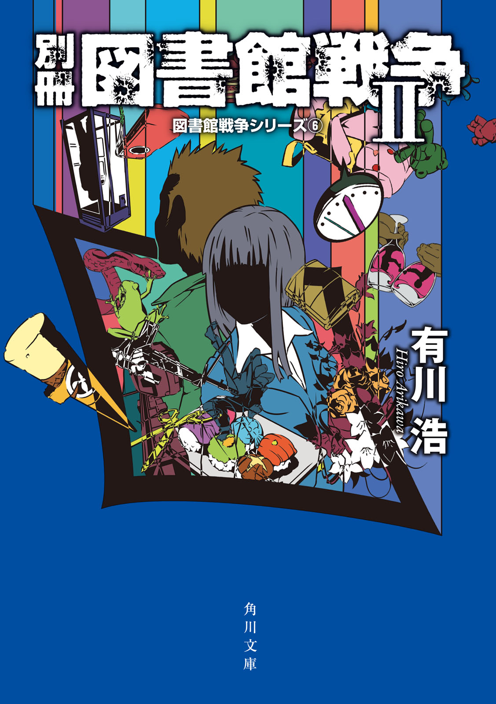
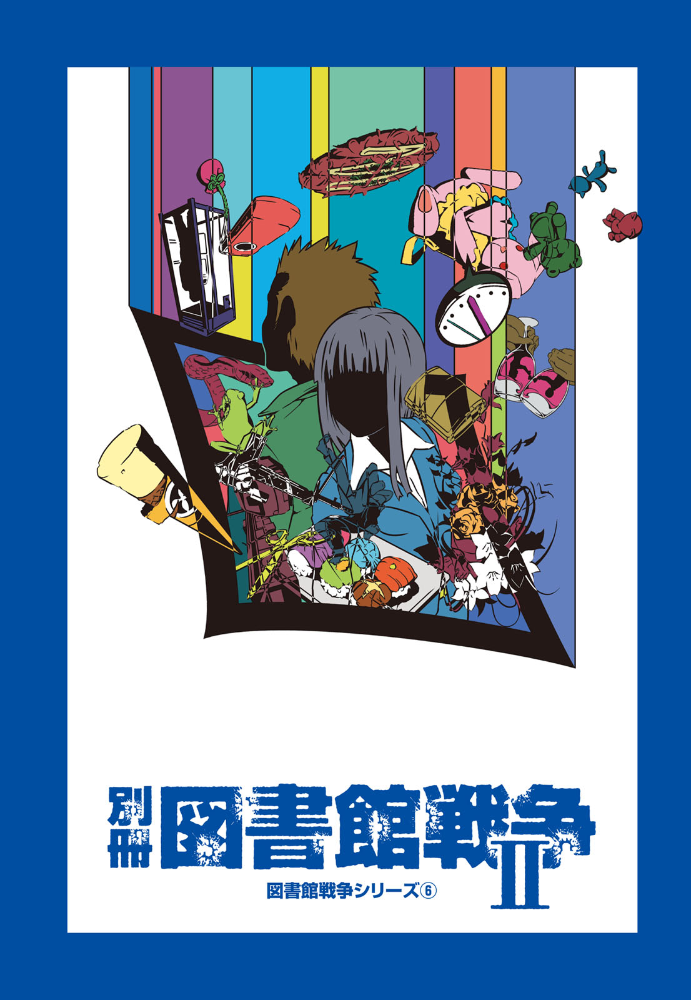
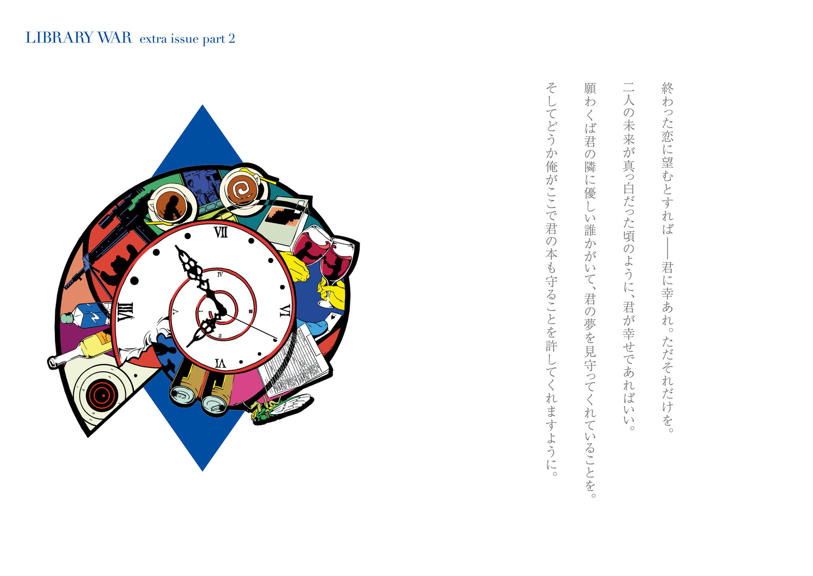
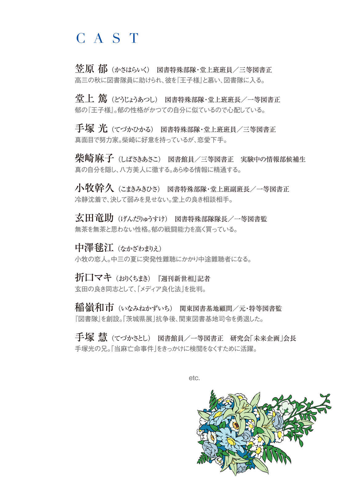
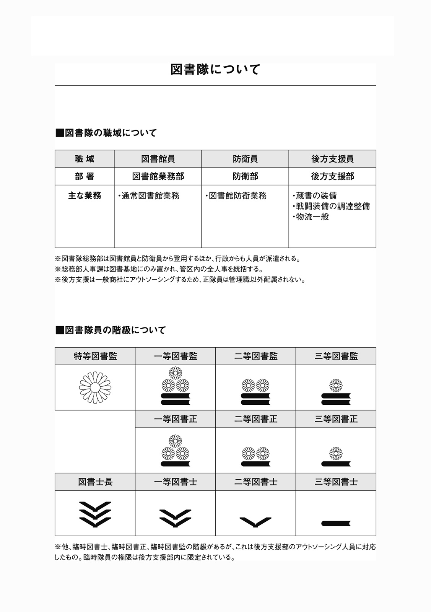
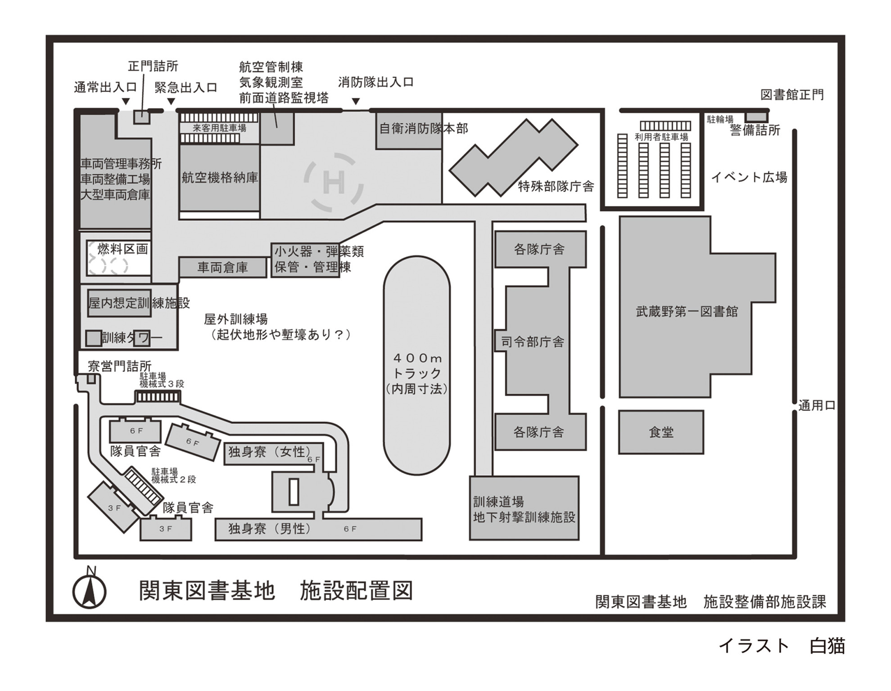

| 別冊 図書館戦争Ⅱ 図書館戦争シリーズ⑥ | |
| 有川 浩 | |




別冊 図書館戦争Ⅱ
図書館戦争シリーズ⑥
有川 浩

角川ｅ文庫
本作品の全部または一部を無断で複製、転載、配信、送信したり、ホームページ上に転載することを禁止します。また、本作品の内容を無断で改変、改ざん等を行うことも禁止します。
本作品購入時にご承諾いただいた規約により、有償・無償にかかわらず本作品を第三者に譲渡することはできません。
本作品を示すサムネイルなどのイメージ画像は、再ダウンロード時に予告なく変更される場合があります。
目次
口絵イラスト／徒花スクモ
口絵デザイン／カマベヨシヒコ
図書館の自由に関する宣言
一、図書館は資料収集の自由を有する。
二、図書館は資料提供の自由を有する。
三、図書館は利用者の秘密を守る。
四、図書館はすべての不当な検閲に反対する。
図書館の自由が侵される時、我々は団結して、あくまで自由を守る。
一、「もしもタイムマシンがあったら」
＊
堂上班が休憩中にそんな話題で盛り上がっていたのは、手塚と郁もそろそろ三正という階級が板についてきた頃、そして郁の名字が堂上に替わったことにも周囲が馴染んできた頃である。
最初は呼び分けに周囲が悩んでいたが、非公式には郁を旧姓で呼ぶことで収まりがついた。公式及び他部署の下士官からは階級をつけることで呼び分ける。隊員同士で結婚したカップルに倣ったルールだ。階級が同じ場合はもう一段ややこしくなりフルネームで呼び分けるということになるが、堂上と郁ではその心配はない。
「あたしは結婚式のときにもう一回戻りたいかな～」
郁が珍しく女の子表情でうっとりする。
「ああ、笠原さんマーメイドのドレスが綺麗だったよね。背の高い女性はああいうかっこいいドレスが映えていいね」
ソツなく誉める小牧と対照的に堂上が一蹴した。
「一人で戻れよ、俺はごめんだ」
「何でですかっ！ 堂上教官あたしとの結婚式が嫌だったんですか！」
「それをお前が訊くのか！」
堂上に一喝され、郁は首をすくめた。
「でもそれあたしのせいじゃない......」
結婚式ではさすがに悪ふざけは控えようと打ち合わせがあったらしい。だが、タキシード姿の堂上が郁をエスコートして披露宴会場に入場した途端、歌舞伎の大向こうよろしく男どものかけ声がかかったのである。
「よっ、王子様！」
誰が仕掛け人かは言うまでもない。そしてまた、打ち合わせで馴初めを話しておいた司会者がフォローのつもりで滔々と『王子様』の所以をアナウンスしたものだ。
場所が場所だけにいつものように怒鳴りつけるわけにもいかず、仏頂面で各テーブルを回るわけにもいかず、堂上の嚙みつくような表情は隊の仲間を固めてあったテーブルに限定されることになった。
それ以外は終始笑顔を保っていた堂上だったが、その笑顔が引きつっていたことが郁にだけは分かった。
かくして結婚式は堂上にとってトラウマの固まりに成り果てた次第である。
でも本当はそんなに悪い式じゃなかったと思ってるくせに、というのは郁にだけ分かる堂上の複雑な心境だ。もともと郁の戦闘職種に反対で戦闘職種の上官である堂上に対してもどこか頑なだった郁の母親が「あの王子様が彼のことだったの！」と一気に打ち解けたのである。
そうした意味で堂上は悪ノリの激しい玄田以下隊の仲間たちに感謝しているが、これは家庭の事情の範疇だ。
「じゃあ堂上教官はどこに戻りたいんですか？」
「......ノーコメント」
仏頂面でかわそうとした堂上を、小牧がくすくす笑いながら裏切る。
「堂上は遡ると消したい過去がけっこうあるよね。酒関係は多かったかなぁ、三日酔いとか」
「三日酔いー!?」
郁と手塚がそろって声を上げると、小牧は首を傾げた。
「あれ、笠原さんには話したことなかったっけ？ 昔、飲み比べで引っ込みがつかなくなって無茶なちゃんぽんやってぶっ倒れたとか......」
「あ、白ワインのポカリ割り？」
「それ以外にも色々もうめちゃくちゃだったね。最後に玄田隊長と一騎打ちになって......」
「もういい言うな！」
堂上が小牧の口を塞ごうとするが、小牧は堂上と腕の取り合いをしながら話を続ける。
「って何でお前が俺を邪魔する側に入ってるんだ、郁！」
堂上が小牧を黙らそうとしている間に、郁は堂上の片手を背中にねじ上げていた。
「だって篤さんだけあたしのバカ話知ってるの不公平だしー」
かわいこぶって笑ってみせる郁、堂上は「家帰ったら覚えてろよ」と睨んだ。さすがに片手で小牧は止められないので諦めた様子だ。
「最後に玄田隊長が立ってたのは言うまでもないんだけど、その後がすごくてね。玄田隊長が『すぐ便所で今まで飲んだ分全部吐かせろ、急性アルコール中毒になるぞ』って。そんで俺がトイレ連れてって、堂上はもう意識がないからさ。俺が喉に指突っ込んで吐かせたんだけど、もうすごかった。固形物一切ナシ、喉の奥から水が湧くみたいに酒しか出てこなくってさあ」
「ていうか、何でそんな無茶飲みすることになったんですか」
手塚が尋ねると、小牧はまたくすくす笑った。
「堂上って酒強いだろ。新人の頃からいつもかなり飲むのに宴会終わると顔色変えずに後始末役に回ってて、先輩たちが一回潰してやれって企んで飲み比べを持ちかけてさ。そうなったら堂上も負けず嫌いだろ？ 念のためにって玄田隊長まで控えてもらってたんだけど、そこまで一気に突破。三日酔いはその代償だな。もう訓練場に堂上のバケツとうがい用のペットボトルの水が置いてあるんだよ。気分が悪くなったらバケツにダッシュして吐いてうがいして戻ってくる、一日に何回くらい繰り返したっけ？」
「忘れた！」
ふて腐れた堂上に、郁は小牧ばりの上戸に陥っていた。
「すっご、負けず嫌いにも程があるっていうか！」
「昔の話だ、昔の！」
「それにしたって意外と後先考えないタイプですよねー！」
「現在進行形で後先考える技能がないお前にそこまで爆笑される謂れはない！」
「まあ実際、それから堂上に飲み比べ持ちかける奴は一切いなくなったけどね」
小牧が暴露のフォローがてらか口を挟む。
「そこそこ強いつもりでいたのが次々堂上に潰されて、念のためにって控えてもらってた玄田隊長まで引っ張り出して、あげく後輩を急性アル中にするところだったんだから。企んだ先輩連中、けっこう玄田隊長にがっちり説教食らってたはずだし。堂上もむきになりすぎるなって説教されてたけどね」
色んなことでむきになってたんだろうなぁ、と一緒に暮らしはじめた郁には分かる。そしてそれが若い頃の堂上だったらさぞかしかわいかっただろうな、と想像して少し顔がにやけた。
「手塚は？」
郁が訊くと、手塚は話の流れで既にネタを用意してあったらしい。
「痛飲して休んでたとこにお前からスポーツドリンクもらってぶっ倒れたときかな」
う、と笑いが止まった郁に対して、今度は堂上がにやにやしはじめた。
「今の俺が現場に遡れるなら問答無用でスポーツドリンク取り上げます。いくら酔っ払ってもあの女のやることを確認なしで信用するような軽率な真似をするなって膝詰めで説教ですよ、自分に。正座です、正座」
「膝詰めで説教だってよ、お前じゃなくて自分に。お前に説教しても意味ないって見抜かれてるな、おい」
明らかに報復目的の堂上のからかい口調に、郁は旗色悪しと見て撤退を図った。
「こ、小牧教官は！」
まだお題に答えていなかったのは小牧だけである。その小牧はにっこり笑って夫婦ごと奈落に叩き落とした。
「クマドッキリを仕掛けられた新人の頃かな。種が分かってたら俺もクマ殺しの異名が取れたのに残念」
堂上が嫌な顔をして小牧を睨む。
「お前って男はこういう場でも絶対に自分の弱味は割らないよな。やな奴」
「常に学習材料と一緒に昇任してきたからね」
「あたしまで一緒に落とすことないじゃないですかぁ～～～」
「何言ってんの。病めるときも健やかなるときも、だろ？ 夫婦は」
そういえば、と話を逸らしがてら郁は事務室の奥を振り向いた。
「緒形副隊長はいつに戻りたいですか？ タイムマシンがあったら」
それまで黙々と書類を処理していた緒形が、ふと仕事の手を止めて考え込む風情を見せた。
「......大学の頃、かな」
遠くなった緒形の視線に、何か特別の思い出でもあるのかなと郁が首を傾げると、堂上が席を立った。
「休憩終了だ。訓練に戻るぞ」
いつもより若干休憩時間が短いような気がした。それは手塚も感じているようで怪訝な表情をしていたが、小牧も席を立ったので部下たちには異論を挟む余地はなかった。
気を遣われたかな、と緒形は休憩時間を早めに切り上げて出ていった堂上班を見送った。
戻りたいのは大学の頃──正確には大学三年。まだ進路が決まっていなくて、未来が真っ白だった無垢な時代。
不惑に乗って二年目からは遠い過去だが、今でも昨日のように思い出せる鮮やかな日々。
もう取り返しがつかないからこそ、それは年経るごとに鮮やかさを増すのかもしれない。
＊
大学は法学部で、彼女は同じゼミの学生だった。
ゼミには華やかな女子が何人もいたが、彼女はその中では際立って目立たないタイプだった。物静かで自己主張が激しくない。見映えも清楚と言えば聞こえがいいが、目立たないと斬ってしまえば一言だ。
男子学生の人気はやはり分かりやすく美人だったりかわいかったりでノリのいい女子に自然と集まったが、元が無口な緒形にはそうした女子の華やかさが駄目だった。彼女たちに問題があるのではなく、──近寄りがたい。
緒形にとって話しやすいのは辛うじてその地味な彼女だった。
竹内加代子。特別珍しくもないその名前を二十年も覚えていることになろうとは、何かの折にぽつぽつと言葉を交わしていただけの頃には思いも寄らないことだった。
「緒形くん、どうして他の女の子とあまり話さないの？」
そんなことを訊かれたのは、加代子と比較的よく喋るようになってからだった。
「ええと......」
緒形が言葉に詰まったときも加代子は根気強く待つ。それはいつものことで、それが緒形にとって会話が成立する前提条件だった。
そのときもその回答を見つけるまでに随分時間がかかったような気がする。
「他の女子は......時間の流れが俺と違うっていうか......喋るのもすごい速いし、話題も次から次に変わっていくだろ？ 俺の処理速度じゃついていけなくてさ」
正直に言うともてないほうではなかった。大学に入ってからも数人と付き合っている。全て相手が告白してきたパターンだ。
だが積極的な女の子は大抵バイタリティに溢れている。口数が少なく、一緒にいる空気だけで満足してしまう緒形は早々に飽きられて、告白されるのも振られるのも相手からで付き合いが三ヶ月と続いたことはなかった。
うっかりすると振るという段階さえ忘れて次へ乗り替えられることすらある。相手の女の子に悪気はなく、単に緒形を振るのを忘れていただけなのだろう。新しい彼氏と腕を組んで緒形とすれ違い、笑顔で手を振ってきた彼女もいた。
すれ違った後に聞こえてくる会話は「誰？」「同級生！」だ。
同級生に戻る手続きをもらった覚えがない程ぼんやりしていたつもりはないのだが、相手の中ではそういう処理がついているらしい。
これで「どういうことだよ！」と文句を言える覇気もないところが振ることさえ忘れられる理由だろうなと想像はつくのだが、やはりすれ違った二人を「おい待てよ」と呼び止める気力はなく、心の中でお幸せにと元カノになった彼女の次の恋路を祈ってしまう。
「でもゼミの発表のときはすごくハキハキ喋るし、しっかり議論もしてるじゃない」
加代子の追及は鋭い。緒形も改めてそこは考え込んだ。
加代子はやはり根気強く待っている。そして緒形の回答は出た。
「あー......たぶん俺、オンとオフの切り替えが極端なんだよ。そんで雑談とかってオフじゃん。オフで回転速くするのがたぶん苦手なんだ。だから......」
緒形はうーんと言葉を探した。
「......めまぐるしい？ で合ってるかな。雑談のときってめまぐるしくてついていけないんだ。竹内さんは大体一人だし、俺が喋るの待っててくれるし」
物静かだから気も休まるし。そう付け加えると、加代子はいたずらっ子のように笑った。
「最後は騙されてるよ、緒形くん。私、ちっとも物静かじゃないし、おとなしくもないから。むしろ人より気が荒いくらい。だから揉めないように、目立たないように静かにしてるの」
めまぐるしくないから喋りやすい。物静かだから落ち着く。
ただそれだけのゼミ仲間だった加代子を意識するきっかけになったのが、今思い返せばそのいたずらっぽい笑みだった。
ラインが変わったのは三回生の夏休みのゼミ旅行だった。
海辺の民宿に泊まり、午前中は勉強、昼を過ぎて二時間も経つと教授の許可が出て海水浴場で遊べる。
緒形も水着は持ってきていたが、加代子が泳げないという理由でいつも留守番だったので、何となく加代子と行動していた。周りは夏を謳歌して日毎に肌を焼いていたが、緒形と加代子の肌の色は初日からあまり変わらなかった。
「緒形くんも泳げないの？」
泳ぐ代わりに近辺を散歩しながら加代子に訊かれ、緒形は返事に迷った。
運動神経は悪いほうではない。スポーツは全般ソツなくこなせるほうで遠泳なら数kmは軽い。加代子が泳ぐのなら海側に参加しただろう。波打ち際で水遊びをするだけでも加代子が水着を着るなら、それは少し見たかったというのがそのときの正直なキモチだ。
「いや、運動全般わりと得意なほう」
「じゃあみんなと泳いできたらいいのに。私に付き合わなくていいよ」
「一人とか友達同士だったらそれなり楽しむけど、ここで海水浴ってどう考えても下心の交錯だろ」
男女の機微に鈍い緒形の耳にも、誰が誰を狙っているかなどの情報は届いている。もちろん邪魔するなよという釘と一緒にだ。
「俺、遊ぶときは遊ぶモードになっちゃうからさ。そういうのの中で空気読んで立ち回れないし。空気読めなくて人の邪魔しても悪いから。それに遊ぶときは気兼ねなく遊びたいじゃん」
「私と散歩してるのは気兼ねなく遊んでることになってるの？」
「散歩は好きだよ」
アスファルトに落ちた濃い影。暴力的に降り注ぐ日差しと蟬の声。
「地味な遊びだけど夏は満喫してるような気がする」
それまでは旅先とはいえ真夏の午後の散歩を遊びと認識する感覚などなかったが、ぽつぽつ加代子と喋りながら知らない道を歩くのは楽しかった。
地面に落ちた真っ黒な影をたどりながら歩くのも、ゲームのようで楽しい。加代子のほうは帽子や日焼け止めで更に紫外線をガードしているようだったが。
夏の女の子は焼く子と焼かない子に分かれることくらい知っている。加代子は焼かないほうらしく、そんなところは普通の女の子だなとかわいらしく思えた。
夜の飲み会もやはり下心の錯綜するどんちゃん騒ぎで、教授が離脱してからが本番だ。
そんな中で割り勘の頭数に入れられるのもバカバカしく、早めに離脱を宣言してから緒形も加代子も抜け出すようにしていた。
どちらかというと「私酔っちゃったからもう抜けるね」と引き上げる加代子を追いかける形で緒形も抜けるパターンだった。
一緒に抜けて噂でも立ったら加代子に迷惑じゃないかなどと心配していたので、緒形の離脱はいつも少し遅れる。打ち合わせをしているわけではないので、そのまま加代子が捉まらないこともままあった。一週間の旅行で捕捉率は五分というところだろうか。
その日はふと思いついて海岸へ行ってみた。
宿から最短のルートで海岸へ降りた砂浜に、淡い色合いの服が白い影になって座っている。今日の服装は白いクロップドパンツにキャミソール、それにクリーム色の透け感のあるシャツを羽織っていたはずだ。
場所を確認してから近くの自動販売機まで戻る。海水浴場価格のその自販機で烏龍茶を二缶買った。他はジュースや炭酸しかなく、加代子がどちらかといえばお茶のほうが好きなことは数日の散歩をした間にもう知っていた。
「隣、いい？」
声だけで分かったのだろう、加代子は見上げもせずに笑みを含んだ声で「どうぞ」と言った。
「これ」
烏龍茶を渡すと、加代子はありがとうと笑って受け取った。すぐにプルタブを開けたので喉は渇いていたのだろう。
「夜だと海に来るんだね」
「昼間は暑いし、人も多すぎて。泳げない負け惜しみみたいだけど季節が違う海のほうが好きなの。夏なら昼間の熱が冷めた頃」
確かに腰を下ろした砂浜は、ほんのり温みを残して冷めている。海風も涼しい。
そのまま昼間の散歩のようにぽつぽつ色んな話をした。違っていたのはロケーションだけだ。彼女曰く、昼間の熱が冷めた海。
そのロケーションの差が大きかったのだろうか。
会話が途切れ、ふとした瞬間に引き合ったように唇が重なっていた。柔らかい名残を残して唇が離れ、お互い不思議そうな顔で見つめ合った。
「......今、俺たちキスした？」
緒形からそう訊いた。まるで気のせいで済んでしまいそうな現実感のないキスだったので。
加代子がいつものように小さく笑った。
「試す？」
誘われて緒形から唇を重ねた。──実感が出るまで。
「した、よな」
改めて尋ねた緒形に、加代子は恥ずかしそうに笑って頷いた。加代子が肯定するまで摑んだはずの実感にも今ひとつ自信が持てなかった。
加代子は拒否しなかったし、否定もしなかった。それだけを頼みの綱に口を開く。呼びかけは竹内さん。
「俺と付き合ってくれないかな。俺、喋るの巧くないしオフのとき鈍いしつまんないし、それで何度も振られてるんだけど。でも、俺が喋るの待ってくれる竹内さんと、散歩とか何気ないことしながら話すの、すごく楽しいんだ」
自分から告白したのはそのときが初めてだった。いつも相手が竜巻のようにやってきて緒形は翻弄されるだけ翻弄されて一方的に去られる。イメージと違う、こんなにつまらない人とは思わなかった、そんな苦情付きで。
だから、告白して返事を待つ時間の苦痛も初めて知った。息が苦しい。心臓が速い。加代子にその心臓の音が聞こえるのではないかと心配になるほど。
「私も緒形くんと過ごすの楽しいし、緒形くんのこと好きよ」
だから嬉しい。
加代子がそう呟いて緒形の手を握った。昼間の温みを残した砂の上で繫いだ手の感触は多分一生忘れない。
無口な者同士でいつの間にやらくっついた。
ゼミの中ではそういう印象だったらしく、からかわれることもやっかまれることもなかった。
明けたら四回生になる春休み、もう名前で呼び合うようになっていた。
「明也は就職どうするの？」
お互い就職なども気になる頃で、そんな相談も増えた。
「内定いくつか取ってあるけど、Ⅱ種で国家公務員受けようかと思ってる。Ⅰ種じゃさすがに手が出ないから」
「へえ、すごいね。どこ志望なの」
「法学部だから一応法務省かなぁ......うち、両親が教師で公務員信仰が激しいんだよ。手堅いのは公務員だって。それに親って切り札持ってんじゃん？」
誰が大学まで行かせてやったと思ってるんだ。
「そっか、その切り札出されると痛いね」
「かといって進学しない選択は認めない人たちだったからちょっと平等じゃないかなーと思うんだけど......やり合うのも疲れたしって言ったら逃げかなぁ......」
「親孝行って言い方もあるよ」
加代子は緒形がネガティブなことを口走るとき、同じことをポジティブに言い換える言葉をよくくれた。
そんな加代子に一体何を返してやれていたのか。当時は幸せに付き合っているつもりだったが、今となっては自信がない。
「加代子は？」
「うん、ちょっと親のコネ気味で情けないんだけど、地銀で内定取れたからそこにする」
「法務関係狙わないんだ？」
同級生の中にはそのまま法科大学院に進む者も少なくない。
「あんまり興味ないかな。就職して仕事覚えて、余裕ができたら少しずつ自分のやりたいことをやっていきたいなって」
「やりたいことって？」
「恥ずかしいから言わない。今の時期ってみんなキャリアアップとかいろいろ立派なことしか言わないんだもん」
そこそこいい大学に通っていて卒業年度になると大抵もう進路が決まっていて、確かに立派な就職論を述べる者が増える。
「まあ、一過性だと思うけどね。加代子は加代子のペースでやりたいことやっていけばいいよ。そんなにキャリアキャリアでガツガツしなくても、たとえば仕事と趣味を両立させるのも......えーと......豊かな人生だと思うし」
言い方は間違えていないだろうか。微妙に不安だったが、加代子は笑ってくれた。
「うん。ありがとう。私は私のペースでいく」
国家公務員試験には合格した。
志望どおりの配属にならないことは覚悟しておけといろんな筋から言われていたが、緒形の配属は中でも最も回避したい部署だった。
法務省メディア良化委員会、良化特務機関。
強引な検閲で国民の反感を買うことの多い法務省組織だ。
だが、そのころは本当の意味でメディア良化法が何を狩っているのか理解できていなかった。あーあ、嫌われる部署に回されちゃったな。感想はそれくらい。
だから配属は両親以外の周囲には適当にごまかした。
緒形はそのときのごまかしから二年後にしっぺ返しを食らうことになる。
卒業しても加代子との付き合いは良好に続いていた。
緒形は加代子の頼みで地銀に口座を開き、そこは貯蓄用にと定期的な預け入れをしていたし、加代子は緒形の仕事を法務省内部部局の事務関係だと思っている。
「ねえ、口座そんなにしょっちゅう預けてくれなくていいよ。開いてくれただけでもうノルマになってるから」
「うん、でも給料の口座と一緒にしとくとだらだら引き出しちゃって、なかなか貯金できないから。使い分けてるだけだから気にしなくていいよ」
このまま穏やかに付き合いが続いていって、そのまま結婚できたらな。そのときの結婚資金に、という目算もあった。
そんなことを思うたびにチクリと自分の身分が胸を刺す。本当は自分が良化特務機関の隊員だと知ったら加代子はどんな反応をするだろう？
でも加代子なら。
志望して配属されたわけじゃない。嫌われる部署だから辛い。それに公序良俗に反する書籍やメディアの取り締まりには風紀を正す一面もある。
今から緒形が少しずつ用意している言い訳を、やっぱり今までのように緒形が言葉にできるまで加代子は待ってくれるような気がしていた。
検閲のときは心のスイッチを切れるようになった二年目である。
デートのときに加代子が嬉しそうにバッグから一冊の小説誌を出した。
その表紙に見覚えがあった。まだ販売はされていない。発売日は二日後──検閲対象の雑誌だった。
どうして加代子がこれを今持っているのか。
「あのね、まだ発売されてないの。どうして私が持ってると思う？」
さあ、と答えるのが精一杯だった。
「掲載作家には発売日前にもらえるの」
ということは──ということは、ということは、ということは。
「大学の頃に私、やりたいことがあるって言ったの覚えてる？」
緒形は記憶を探る振りでようやく頷いた。
「小説書きたかったの。学生の頃からずっと書いてて、それでこの雑誌の短編賞で賞もらって、受賞作がこの号に載るの。明也に真っ先に報告しようと思って。明後日発売なの」
知ってるよ、明後日発売なんてこと。何か無機物に向かって怒鳴りつけたかった。
短いからよかったら今読んでみて。加代子は何も知らない無邪気な笑顔で雑誌を渡す。
「ペンネームは何ていうの？」
「本名と同じで、名前だけひらがなに開いた」
よかった、検閲対象者じゃない──なんて、そんなことが分かって何が救われるというのか。同じ雑誌に検閲対象者が載るというだけでこの雑誌は狩ることが決まっているというのに。
はにかみながらやりたいことをやっていきたいと言った加代子の笑顔はたった二年前、それは緒形だけに見せてくれた特別の笑顔だ。恥ずかしいから言わない、と小さな夢を胸に抱き。
そして実現したら真っ先に報告してくれた。
ジャンルとしては青春小説になるのだろうか、緒形には小説の善し悪しはよく分からないが、加代子らしい言葉で綴られた物語は心地いいリズムで体の中に入ってきた。
感想を。感想を言わなくては。動揺の中、必死で言葉を探す。
「......びっくりした。でも加代子らしくて俺は好きだよ。大勢の人に好きになってもらえたらいいな」
しれっとそんな噓をついている自分にびっくりする。大勢の人に見てもらう前に自分のこの手で狩るくせに。
「ほんと？ 嬉しい、ありがとう！」
おめでとう、とワイングラスを合わせた。加代子の好みに合わせた甘いワインは、緒形の喉を苦く通り過ぎた。
今にして思えば、そのときが白状する最後のチャンスだったのだ。
心のスイッチは切った。
威圧的なデザインの──まるで軍服のような制服に身を固め、次々と書店を回る。
没収リストに載った書籍を回収するコンテナを押し、隊長の示した書籍をコンテナに入れていくのが二年目の緒形の仕事だ。
そして小説誌のコーナーでも隊長はやはり機械的にその雑誌を白手袋で指した。
加代子のデビュー作が載った雑誌を。──もう何軒分を没収しただろう。
思わず躊躇し、隊長に見咎められた。
「何をもたもたしている、緒形ッ！」
「この雑誌......一冊だけ、残すわけにはいきませんか」
回答はつかつか歩み寄って振り上げられた裏拳だった。歩み寄られるまでに姿勢を確保したので、殴打された顔が打撃の方向に振られただけで済んだ。
それ以上は言わず、緒形は平台に入荷していた五冊をまとめて取り上げ、コンテナに入れた。口の中に血の味が滲みた。
その一件で始末書を書かされたが、加代子との関係だけは伏せて逃げ切った。申し訳ないが、他の有名作家のファンだということにして言い逃れた。
「それくらいで躊躇していては委員会へは上がれんぞ」
隊長は厳しい口調で説諭した。
「省庁や閣内は綺麗事では動かん。我々は掃除屋だ。世間が我々をどう罵ろうと罵られることで保たれる秩序がある。そのことに誇りを持て」
誇りを持てば──あなたのようになれるんですか。例えば、
恋人の書いた小説が載った雑誌を、顔色一つ変えずに何百冊も没収して回れるように？
そんな秩序など。
「疲れているようだな。明日は公休だっただろう、よく休め」
ありがたい解放の言葉で帰宅し、しかし本番はそれから始まった。
加代子からメールが届いた。
『......びっくりした。でも加代子らしくて俺は好きだよ。大勢の人に好きになってもらえたらいいな』
先日のデートで緒形がやっと絞り出した感想だけそのまま打って、写真が添付してあった。
一体どういう意図のメールなのか量りかねながら写真を開いて、心臓が止まりそうになった。
写真は殴られて頰を腫らした緒形が、加代子のデビュー作の載ったその雑誌を回収しているところだった。
どうしたらいいのか分からずに携帯の前で固まっていると、電話の着信音が鳴った。
加代子だ。
携帯に出たはいいものの、何を言っていいのか分からない。口の中がカラカラだ。
何も言えない緒形を哀れむように──いっそ優しいほどの声で加代子は言った。
「今、明也の家の近くのファミレスにいるの」
出てこられる？
そう訊かれて、やっと緒形は答えた。
「分かった」
声は自分でもみっともないほどかすれていた。
外に出られる服を引っかけて夜道を走り、指定のファミレスまで十五分とはかからなかった。
加代子は奥まった窓際の禁煙席で、先にコーヒーを頼んでいた。
駆け寄って肩で息をしながらウェイトレスにコーヒーをもう一つ頼む。
「どの面下げてっていう顔、生まれて初めて見せてもらった」
訊くまでもない。加代子がメールに書いてきた緒形の感想のことだろう。
「しかも好きな人から」
傷つくな。傷つく資格なんか俺にはない。彼女のほうがよっぽど。
「写真ね、法科大学院に進んだ昔のゼミ仲間が送ってきた。まだ緒形くんと付き合ってたよねって。加代子このこと知ってるのって。彼女、私が今月号でデビューするの知ってたから」
そう言われて、その書店が母校の近くだったことを思い出した。
「知りたくなかった。けど彼女に感謝してる」
加代子はテーブルに両肘を突き、指を組んだ両手の上に額を載せた。
「いつまで騙すつもりだったの」
「騙すなんて......そんなつもりじゃ」
「ならどうしてこの前、良化隊員だってこと教えてくれなかったの。大勢の人に好きになってもらえたらいいななんて、読んでもらえる前に自分で狩って回るの分かってたくせに」
「......俺だって好きで配属されたわけじゃないし......俺たちが没収する前に少しでもたくさんの人があの雑誌買ってくれたらって......本当にそう思ってたよ」
「今ごまかす理屈が聞きたいわけじゃないの。ねえ、いつまで黙ってるつもりだった？ 私は真面目に明也と付き合ってるつもりだったし、明也もそうだって信じてた」
「真面目に付き合ってたよ」
そのタイミングで息を殺しながらウェイトレスが緒形のコーヒーを置いていった。
「加代子の銀行で開いた口座だって、将来は結婚資金にって思ってた」
「なら良化隊員だってことはいつ言う気だったの？ ごまかしたまま結婚する気だったの？」
「言えなかったんだよ！」
緒形は初めて声を荒げた。加代子は今までのように緒形が言いたいことをまとめられるまで待ってなどくれなかった。加代子が根気強く待っていてくれることが会話の成立する前提条件だった。そして加代子はその前提条件をかなぐり捨てた。
「良化特務機関って嫌われる部署だからあんまり言いたくなかったし......」
「言いたくなくて先延ばしにしたら何か解決するの？」
待ってくれよ。そんな矢継ぎ早に問い詰めないでくれよ。俺が喋るの苦手なことは知ってるじゃないか。
どこかで俺は間違えた。それだけ分かる。だが、どこで間違えたのか分からない。
「じゃあ教えてくれよ......俺どうすればよかった？ 志望したわけでもないのに嫌われる部署に配属されて、俺、どうすればよかった？」
「配属が決まったとき、私に話してくれたらよかった」
そんな前から俺は間違ったのか。緒形は愕然とした。
「そうしたら、私も小説書いてることを言って、良化法のことを話し合って、明也とこれから付き合っていくかどうか時間かけて話し合った。話し合って、それでも明也が良化隊員になるっていうなら、私は別れた」
ちょっと待ってくれよ、と緒形はかすれた声で待ったをかけた。
「良化隊員になるってそんな酷いことなのか？」
「良化隊員には良化隊員の言い分があるかもしれないね。でも、そんなの知らない。デビューしたばっかりでこれから物になるかどうか分からないけど、小説を書いていきたい私にしたら酷い法律で、酷い職業で、酷いことだよ」
明也はどうなの、と逆に加代子が訊いた。
「恋人が長年の夢を打ち明けて、その場は適当な祝福でお茶を濁して、その二日後に恋人の夢が実現した証拠を狩って回るのは、酷いことじゃないの」
改めて確認されるとますます目線が下に落ちる。
「酷い、けど......あの雑誌に良化委員会が目をつけてる作家がいて、良化法を批判するようなコラムを載せてたから......」
「国民が政府機関を批判することが許されないってこと自体がおかしいと思わない？ それで、その作家さんが一人良化法を批判するコラムを書いたからって、雑誌に載ってた他の作家さんが全員発表の機会を奪われるんだよ。そんな横暴な法律なんだよ」
「で、でも......公序良俗に反するメディアを取り締まることで風紀を正す目的もあるって」
加代子はふうっと疲れたように溜息をついた。
「研修か何かで教え込まれたの？ その言い分は」
当たっていたのでまた緒形は黙り込んだ。
「いかなる低俗・劣悪な表現であっても、国民はそれを自分の目で確認する権利を持つのよ。国家が是非を選別してよしとしたものだけ国民は見てもよろしいなんて、大戦中の情報統制と同じ理屈じゃない。あなたからそんな言い分が出てくるなんてがっかりした」
ちがう──そうじゃないんだ。待ってもらえないから、加代子がどんどん終わる方向へ話を進めていくから、どこかでブレーキをかけたいと思って、
アクセルばかり踏んでいる。
「ごめん、俺......良化法のこと全然分かってなくて、加代子が怒るようなことばかり言ってる。それしか分からない」
偉そうで横暴だから嫌われる部署、それくらいの感覚しかなかった。
違反語もそれを避けて表現したら問題ないじゃないかくらいにしか思っていなかった。
「テレビ観てても本読んでも、そんなに不自由感じたことなかったから」
「うん。一般でもそれくらいの感覚の人たくさんいるよ。私たち法学部だったけどゼミは商法だったから、良化法を詳しく勉強したわけじゃなかったしね。良化法のカリキュラムは厳しく制限されてるし」
そんなことも知らなかった。
「でもね、最初言えなかったことは許せるの。明也は良化特務機関について何も知らなかった。良化法のことも詳しく知らなかった。だから、嫌われる部署に配属されたのが言いづらかったって、それは分かる。でも、今度のことは許せないの」
恐る恐る顔を上げると、加代子は厳しい目でまっすぐに緒形を見据えていた。
「明也はもう二年目で自分が何をしてるか知ってたよね。それで、私が小説を書いてデビューできることになったって報告したとき、おためごかしの感想と励ましでその場だけごまかしたよね。自分が発売日にその雑誌を狩ることを知ってたのに。ゼミ仲間が教えてくれなかったら、明也はいつまで私を騙すつもりだったの？」
ああ、そうか。今さらやっと分かった。
自分は彼女の信頼をすべて失ったのだ、と。
自分の仕事内容を把握して、自分がその雑誌を狩ることを知っていて──緒形は最低限そのとき言わねばならなかったのだ。
今まで黙っててごめん。実は俺、良化隊員なんだ。その本を狩ることになってるんだ。
そのときだったらまだ間に合っていたかもしれなかった。
だから、加代子の問いかけは悲しげな音色で「いつまで騙すつもりだったの？」なのだ。
加代子が学生時代から大切に温めていた夢が叶ったことを教えたときに、緒形が自分の身分を白状しなかったから。
たまたま昔のゼミ仲間に検閲の現場を見つからなかったら、自分はどのタイミングで加代子にそれを打ち明けたのか。
それは緒形にも分からない。ばれない限り引っ張って引っ張って、結婚話が持ち上がってもまだ何とかごまかそうとしたかもしれない。
そうして何とか結婚に持ち込んだとしても、ばれた時点で加代子はばれずに引っ張った期間を許しはしないだろう。
最後は騙されてるよ、緒形くん。私、ちっとも物静かじゃないし、おとなしくもないから。むしろ人より気が荒いくらい。だから揉めないように、目立たないように静かにしてるの。
学生時代、加代子がそんなことを言っていたことを今さら思い出した。確かに加代子はただおとなしいだけの女性ではない。
「ごめん」
俺はバカだった代償として今から彼女を失うのだ。
その実感がひたひたと静かな波のように押し寄せてくる。
「俺はバカだったから、もう何も言う資格がない」
許してほしいとも、やり直したいとも。
この状況を決裁する権利は彼女にしかなかったのだ。
そんな簡単なことが分かるまでこんなに時間がかかるほどバカでごめん。
緒形は黙って加代子の結論を待った。
加代子が不意に腕を上げた。
引っぱたかれるかと思ったが、加代子はゆっくりと腕を伸ばして緒形の頰に触れた。昼間、隊長に殴られた部分だ。
加代子は指をかすかに触れさせただけだったが、それでも肌が一瞬ピリピリした。
「ゼミ仲間がね、一部始終見てたの。明也、雑誌を回収するとき隊長に逆らったんだってね。一冊だけでも残せないかって。それで殴られたんだってね」
加代子は微笑み、そして同時に涙をこぼした。
「ごめんね、最後に嫌な言い方ばっかりして追い詰めて。でも、その子が見ててくれて、それも教えてくれたから信じられる。私に噓はついたけど、明也は最後まで私のことを好きでいてくれたって」
「まだ......過去形にしないでくれよ。俺はまだ好きだ。ずっと好きだ。きっと、加代子に噓をついたこと、一生後悔する」
それくらいは主張しても許されるだろう。
「私も好きだよ。でもおしまい」
楽しかったね。幸せだったね。
思い出を数えるように穏やかな顔で加代子が呟く。こんなに穏やかに──この恋が失われるなんて、始まった頃には思いもしなかった。
まだ進路が決まっていなくて、未来が真っ白だった頃に始まった恋。
その始まった頃に戻れたら、こんな終わりは回避できたのだろうか。
じゃあ行くね。加代子はそう言い残し、自分の分のコーヒー代を残して席を立った。
緒形はそれからたっぷり一時間はそのファミレスに居座った。
手付かずのコーヒーが冷め切っても店員は一度も緒形のテーブルには近づかなかった。安い店の割に気が利いていた。
それから数日して、加代子から地銀の封筒で郵便が届いた。
中に入っていたのは口座の解約手続きの手引きと解約書類だった。別れることになった以上、恋人というツテで開いた口座を維持してもらうわけにはいかないという加代子のけじめだろう。
だが緒形はその口座を解約しなかった。一度開いた口座は緒形のものだ。緒形がどうしようと緒形の自由である。
そして毎日出勤した。書店など小売店の検閲から図書館との検閲抗争、既に諦めてルーチンワークとしてこなしていた業務に改めて取り組んだ。
そして結論は出た。
もし緒形が加代子を忘れることができるとしても、この仕事にシンパシーを持つ女性を自分が好きになれるとは思えない。ましてや家庭を作るなど。
最初にそれを考えていればよかったのだ。良化特務機関に配属されたことを言うに言えない自分がいた。どこか疚しいと思っていた。それなら男女関係や結婚問題の解決は良化法に理解を示す女性を捜すしかない。あるいは亭主は給料だけ咥えてくればいいと思っている女性か。
そうした女性に自分が好意を持てるかどうか。それを考えれば配属が不本意だった国家Ⅱ種など蹴っただろう。今の仕事を「大変ね」と労われても緒形は嬉しくも何ともないのだ。
だが過去を惜しんでも仕方がない。自分は人生を選ぶ機会を得た──いや、与えられたのだ。加代子から。
あれほど傷つけたのに、加代子はそれでも緒形にそんなものをくれたのだ。
まだ就職二年目だった緒形は数えで二十四歳だ。仕切り直しは充分利く。
加代子と別れた一月後に緒形は辞表を出した。そしてその夏に集中講座が開かれた司書講習で司書資格を取り、その年の地方公務員試験──正確には、広域地方行政機関として発足して三年目を迎えた関東図書隊の募集に願書の提出が間に合った。志望は防衛部だ。
良化特務機関時代の訓練のお陰か実技はトップ合格、筆記も上位から数えたほうが早かった。
しかし、元良化隊員が応募してきたということで幹部陣は対応にかなり頭を悩ませたらしい──というのは後に聞いた話である。よもや特務機関がスパイを送り込んできたのではないかという説まで出ていたそうで、緒形が幹部でも同じことを疑うだろう。
そして緒形の面接試験は司令官や幹部陣によって行われることになった。それがそれまでもそれ以後も異例の措置だったということは、やはり後から聞いて知った。
車椅子の紳士が『日野の悪夢』の稲嶺和市司令であることは、司書講習で既に知っていた。
その稲嶺からいきなり斬り込んできた。
「今年度の六月まで良化特務機関に所属されていたそうですね」
どうやら部下に叩かせて様子を見るタイプではないようだ。その率直な潔さは好ましい。
「はい。武蔵野第一図書館やその他の図書館との抗争も経験したことがありますし、小売店の検閲もしたことがあります」
「つまり、あなたはつい半年前まで我々と敵同士だったわけだ」
稲嶺の口調に厭味や皮肉はなく、むしろ面白がっているかのようだった。ただ上品なだけの紳士ではないらしい。
「そのあなたが敵方へ鞍替えしようと思った理由を是非聞かせて頂きたい」
「はい」
その疑問から逃げられるとは最初から思っていない。
「正直に申し上げて、自分はまったく不勉強で、良化法の何たるかさえよく分かっていませんでした。ただ親の薦めに従って国家公務員試験Ⅱ種を受けて、合格はしたものの配属の希望が通らず良化特務機関配属になってしまった、という感じです。もし自分がその当時に良化法のことを知っていたら......いいえ、そのときからでも良化法について調べていたなら、良化法にシンパシーを持つこともなかったと思いますし、合格を辞退したと思います。しかし、当時の自分は怠惰で、世間で嫌われる部署に配属されてしまったという程度の倦怠感しか持ちませんでした。特務機関は高圧的で感じが悪いとは思っていたものの、良化法関係で特別な不自由を感じたことがありませんでしたので......そういった意味で、自分は大衆として良化法にすでに飼い慣らされた状態にあったと思います」
「たいへん的確かつ辛辣な自己分析ですね。その飼い慣らされた状態にあなたは疑問を持たず、一年強を良化隊員として勤めた。それが突然その自己分析に目覚め、今まで敵であった図書隊に応募してこられた。その理由を教えて頂けますか」
さすがに話すのに胆力が要った。
だが、どんな恥をさらしても合格したい。その思いの強さが勝った。
「自分のたいへん親しい人が作家としてデビューすることになりました。その人はずっとその夢を温め続けていて、デビューが決まったことを真っ先に自分に報告してくれました。ですが、その人のデビュー作が載るはずだった小説誌は、既に良化特務機関で狩られることが決まっていました。そして自分はその雑誌を狩り、そのことはその人に知れました。結果として、自分はその人を失うことになりました」
「だから今度はその人物の本を守る側になりたい、ということかね？」
口を挟んだのはハゲワシのような印象の狷介な男性だった。後に知る彦江副司令だ。
「個人的な遺恨で志望したのなら筋違いもいいところだぞ。図書隊は全ての図書を一切の斟酌なしに平等に守る組織だ。その個人の本を守りたいというだけなら君は失格だ」
「いえ。その人は自分と訣別するとき、良化法がなぜ許されざる悪法なのか教えてくれました。いかなる低俗・劣悪な表現であっても国民はそれを自分で見て判断する権利があると。良化法は国民から判断の機会そのものを奪うから許されてはならないのだと。そのことを教えられて、自分は一ヶ月特務機関に勤めました。結果、良化法の正体を知ったうえで良化法にシンパシーを持つことはできませんでした。そして良化法と逆のベクトルを持つ『図書館の自由法』への憧れが募ったのです。良化特務機関では『図書館の自由法』を忌避する教育が行われていますが、自分はその『図書館の自由法』にこそ務めたいと思うようになりました」
「立派な志望動機です」
稲嶺が穏和な顔で頷く。そして言い足した。
「そしてその作家さんのお名前は伺いませんが、その方は立派な教育者であられた」
はい、と緒形は顎を強く引いて答えた。
面接を終えて緒形が退室するとき、稲嶺がついでのように尋ねた。
「その方は、あなたの愛する女性でしたか？」
敢えて性別は避けて話したが、見抜かれているだろう。緒形は「はい」と頷いた。
稲嶺は微笑みながら問いを重ねた。
「訣別なさったその方が息災であることを幸いに思えますか？」
何故そんなことを訊かれたのか、そのときは分からなかった。分からないなりに即答する。
「もちろんです」
「それは善い出会いをなさいましたね」
やや唐突な祝福をもらって、面接室を出たときに思い出した。
稲嶺和市が『日野の悪夢』で右腕でもあった妻を失っていることを。
結論的に緒形は合格したが、配属でまた一悶着あったらしい。ここで緒形を引き取ったのが図書特殊部隊の玄田であったということになる。
関東図書隊唯一の虎の子である特殊部隊にそんな素性の者を入れて何かあったらどうする、などの意見もあったようだが「万が一の抑え役に私以上の適任がいるなら推薦して頂きたい」という玄田の発言を稲嶺が後押ししたという。
確かに突発事態や不測事態に玄田以上の適任者はなく、その頃から玄田は玄田だった。
＊
「おーい、副隊長」
事務所にやってきて声をかけたのは進藤である。緒形は長い回想から引き戻されて答えた。
「ん、どうした」
「どうしたじゃないだろ、今日はあんたの射撃訓練日だぞ」
「ああ、もうそんな時間か」
特殊部隊でも玄田と緒形の二名は有事に全体の指揮を担当し、特定の班を持たない。訓練は部隊の幹部業務の合間にローテーションで他班に入って行うことになる。
「久しぶりに射撃の名手にしごいてもらうことになるか」
「気持ちよく檄を飛ばせるくらい腕を落としといてもらえるとやり甲斐もあるんだが、あんたはそこがかわいげがない」
進藤が笑いながら肩をすくめる。年齢こそ二つ下だが、階級は同じだし付き合いも長いので会話はフラットだ。
「いつもお前たちの嫌う事務仕事や上層部との折衝を受け持ってるんだぞ、残業で訓練時間を取るくらいの気分転換は許されるだろ」
「少しは隙があるほうが部下には親しみやすいんじゃないかねえ」
ま、隊長があれだからな。進藤はそう言って笑った。その笑い方が緒形の記憶を引っ搔く。
「お前の笑い方はときどきアレみたいだな、アレ......」
緒形はしばらく記憶を探って、答えを見つけた。
「トムとジェリーのトムだ」
「俺をあの間抜け猫と一緒にする気か。......と言いたいところだが、嫁さんにも言われたことがあるんだな、これが」
進藤は苦笑し、書類を一旦片付ける緒形を待ちに入った。
「隊長から実務丸投げのお前さんのポジションは、将来的には堂上が受け継ぐんだろうな」
先輩連中はみんな巧く逃げたからな、と進藤がまたトムのように笑う。
「もうある程度は受け持ってくれてるよ。だがまだ若い。あの悪ふざけを無心に受け流せる域に達してもらわんと」
「堂上はキャラクター的に無理だろ。あんたの年になっても生真面目にギャーギャー嚙みつくのが目に見える」
緒形もその姿を思い浮かべて笑った。
「無駄なエネルギーを使ってるな」
「笠原の手前、生真面目にならざるを得んのは分かるがな。笠原はうっかりすると隊長の流儀を直系で受け継ぐ人材になりそうだし、そうなると堂上が抑えに回るしかないだろう」
「だがいざとなると堂上も同じキャラだからなぁ。亡命事件のときは肝が冷えた」
「考えてみると恐ろしい組み合わせで結婚してくれたもんだ」
「相性が良すぎて有事に無茶がどこまでも加速する──というのは小牧が言ったんだっけな」
「初耳だが言い得て妙だ」
頷いた進藤が「しかしまあ、今となっては入隊当時あれほど嚙みつき合ってたのが噓みたいだな。あの二人」とまたトム笑いだ。
笑うと進藤は若い頃の面影が強く出る。その表情に昔が重なった。
「そういえば、俺が特殊部隊に入ったときに一番嚙みついてきたのはお前だったな」
「また古い話を持ち出してきたな。いいかげん勘弁してくださいよ、副隊長」
言いつつ進藤は苦笑いした。
＊
給与の振込先を登録するとき、いじましいかと思いつつも加代子の勤める地銀で開いた口座を指定した。
やり直したいとか振り向いてほしいなんて期待はしていない。ただ、何かのきっかけで緒形の口座を処理することがあれば、毎月の給与が関東図書隊から振り込まれるようになったことだけ知ってほしいと思った。
最後に加代子が教えてくれたことで緒形は自分の無知を知り、そのうえで人生を選び直した。そのことだけ何かの機会で伝わってほしかった。もう、感謝が伝わるのに偶然を期待するしかない関係だったので。自分の取った顧客の口座なら手続きを処理する機会もあるかもしれない。
だが、感傷を引きずるのはそこまでだ。
入隊は果たしたものの、緒形には他の新隊員よりも多くのハンデがぶら下がっていた。
最も重たいものは、──
「納得できません！」
配属された緒形を特殊部隊の誰もが遠巻きに、かつ胡散臭そうに観察していたが、そんな中で真っ向玄田に嚙みついたのが当時の進藤だった。
「昨日まで敵だった人間を仲間に迎えて戦えと言うんですか！」
「緒形士長が良化隊員だったのは昨年度の六月、ほとんど一年前だ。お前の頭ン中じゃ一年前も昨日か？」
玄田にいなされて進藤はますますいきり立った。
「良化隊員だった人間を信用して戦列を組めと言うんですかと訊いているんです！」
「志望動機と人間性なら稲嶺司令と幹部が直接面談で確認している。そもそも緒形が噂されているような良化特務機関の送り込んだスパイだとしたら、まっさらな経歴を作り上げる程度の工作はするだろう」
「しかし......！ いくら社会経験や成績を鑑みるとはいえ元良化隊員を士長採用するなど！」
「図書隊が絶対的に正しい組織とは言わん。問題点も多く抱えている。しかし俺たちは良化法よりも『図書館の自由法』が正しいと信じた人間だ。だから図書隊に乗り換えたことが正しいという前提で話をするが、お前の言い分では一度過ちを犯した人間は二度と更生を許されんということになる。お前は自分が一生一度も過ちを犯さないと言い切れるのか」
若い進藤に対して玄田の論は揺るぎがなく、また厳しかった。
だが進藤はそれでも食い下がった。
「しかし、我々は図書特殊部隊です！」
進藤が図書特殊部隊にどれほどの誇りを持っているか、配属されたばかりの緒形にも分かるほどの頑なさだった。
十七年前の図書特殊部隊は隊長の玄田ですらまだ三十路に差しかかったばかりの若い組織で、防衛部から生え抜きの防衛員を集めて作った部隊であったという。
その前途洋々たる図書特殊部隊に元良化隊員を迎えるなど、進藤にとって我慢ならないことだったのだろう。
だが、玄田はそんな進藤の叫びもあっさりいなした。
「だからだ」
他の隊員にも聞かせているのだろう、玄田は気負う様子もなく淡々と話す。ちらりと緒形に視線を投げたのは、これから居心地の悪い発言をすることを先に宣告したのだと玄田が本題を切り出してから分かった。
「緒形の経歴は図書隊からすれば到底すぐに受け入れられるものじゃない。だからうちで緒形を引き取るんだ。うちならどんなアクの強い人材もクセのある人材も、不審な人材でさえ扱いきれる。それだけの人員で編成されている。それとも俺が指揮官では不審な人材を受け入れることが不安か、進藤」
大した役者だ。こんな上官は少なくとも良化特務機関にはいなかった。
さすがに進藤が口を閉ざした。
「緒形の配属に文句がある者は以降、稲嶺司令への上申書を書け。俺から直接上げてやる」
そこまで言われてそれ以上文句など言えようはずもない。それ以上を食い下がるということは、玄田の指揮能力をも疑うということだからだ。ここぞで利かせる迫力は当時から既に健在だった。当時から変わったといえば階級が上がるに従って無茶や悪ノリに拍車がかかったことくらいだ。
誰も何も言わず、緒形の配属発表は三十分ほどもかけてようやく終了した。
まだ膨れ面をしている進藤に、玄田が声をかけた。
「進藤。今日から寮で緒形と同室だ。色々教えてやれ」
「何で俺が......！」
「お前の部屋は一人空きがあっただろう。総務の決めたことだ、文句は言うな」
進藤はますますふて腐れたが、気が重いのは緒形のほうも同じだった。
緒形の入った部屋は四人部屋で、進藤以外は業務部の図書館員だった。
良化特務機関を辞めた時点で家からは勘当同然になっており、図書隊採用まで仮住まいしていたアパートを引き払った緒形の荷物は必要最低限しかなかった。どうやら両親は特務機関で下積みをして委員会経由で内部部局入りというルートがあることを知っており、それを緒形に期待していたらしい。
ほとんどが着替えと日用品で段ボール二箱に満たない。空いた隙間に新聞紙を詰めて何とか荷物の体裁を整えて送ったくらいである。
進藤に単語と指差し確認のみで説明された自分のスペースにその少ない荷物を収めていると、進藤が初めて単語でない言葉を発した。
「荷物が少ないな」
「帰る場所がないからな。必要なもの以外は全部処分した。足りないものは順次買い足すさ」
「どうだか。いつでも古巣へ逃げ帰れるようにじゃないのか」
進藤が突っかかっているのは分かったが、それに乗るほど余計な血気は残っていない。
「そうなったらそれ見たことかとあんたが声を上げたらいい、進藤士長。だが給料が二倍でも古巣に戻るのはごめんだな」
乗ってこない緒形に、進藤は不満そうだった。部署が違う二人はテレビゲームに興じている振りをしていたが、居心地が悪そうなことはごまかしきれていない。
緒形の荷物が片付くのを待って、進藤が腰を上げた。
「寮内の施設を案内する。一度で覚えろ」
そして進藤はやはり必要最小限の言葉で施設や寮内の規則を説明して回った。
事情はもう隊内で知らない者はないだろう。緒形の行く先々で好奇と猜疑のブレンドされた眼差しが刺さった。男女共用区画では女子隊員からさえも。
恐らく、いや確実に緒形は今年の新隊員の中で最も有名な隊員だった。
防衛部でもエリート中のエリート、生え抜きの実戦部隊として発足した図書特殊部隊に入隊早々配属された『元良化隊員』。
寮内を一回りして部屋に戻る。ドアを開ける前に、先に立って歩いていた進藤が振り向いた。
「一つ答えろ」
「答えられることなら」
進藤の鋭い眼差しが真っ向から緒形を射抜いた。
「貴様、昔の仲間を撃てるのか」
「......今、俺が撃てると答えたところであんたは信用するのか？」
実際に戦う機会が訪れなければ誰も信じまい。緒形が口先で述べる決意など。
進藤は小さく舌打ちした。緒形に理があることを認めた証拠か、それ以上何も言わずに部屋に入った。
進藤は若いながら狙撃の才に長けているらしく、有事には各班から狙撃が得意な者を集めた遊撃隊のような班に入れられているらしい。
そして緒形も良化特務機関で受けた訓練のお陰か射撃には一日の長があり、やはり狙撃適性が認められた。
だが、班の編制や行動など何かと進藤と組まされたのはそのせいではなかっただろう。緒形に最も反発している進藤をつけるのが一番手っ取り早かったのだと後に分かるようになった。進藤が緒形を認めるなり打ち解けるなりすれば、他の連中も追々に緒形と馴染む。
そして、進藤が緒形に突きつけた命題は思いのほか早く実現する機会がやってきた。
『哨戒中の警備より入電、良化特務機関が当館周辺に展開中！ 総員至急警戒態勢に着け！』
切迫した放送が次いで利用者に退去を呼びかける。退去が間に合わなかった利用者は業務部の館員の手引きでシェルター室に避難する手筈だ。
白昼堂々の検閲襲撃だった。
緒形が入隊して初めて『図書隊』として経験する抗争でもあり、また発足した図書特殊部隊の真価が初めて問われる戦闘でもあった。
『狙撃班は屋上へ！』
玄田の指示に従い狙撃班は武蔵野第一図書館の屋上へ駆け上がった。緒形が良化隊員だった頃は、抗争範囲を図書館施設から拡大しないという交戦規定で高所が取れず苦労した。つまり図書館の近くに高い建物があっても、そこを狙撃ポイントに利用することはできないのである。地の利で狙撃は常に図書隊側が勝った。
これは有利だ。初めて高所を取った緒形は地上の展開を低い姿勢から眺めた。
特務機関は正面玄関と裏口に等分に人員を配置している。
「よし、各自射撃位置に着け！」
上官の指示に緒形はとっさに異を唱えた。
「公共棟側にも人員を割いてください」
まだ仲間とも呼べない仲間たちが胡散臭そうに緒形を窺う。特に進藤だ。
「理由を述べろ」
上官も辛うじて公正を保っている態だった。
「ここが良化特務機関の最大攻略ポイントである武蔵野第一図書館だからです」
緒形は淡々と述べた。
「特務機関はここを攻めるときは精鋭を揃えます。しかし、自分が今見たところ、最高指揮官である人物がどちらの分隊にもいません。所詮は数年で劣化する情報ですが、自分が良化特務機関を辞めてまだ一年です。後任になれる人材はまだ育っていないはずです。おそらく現在の攻撃は陽動で、手薄の公共棟のどこかから少数精鋭で侵入を図り、外と中から同時攻撃による陥落を目論んでいます。入り込まれて交戦ポイントで催涙ガスや閃光弾などを使われたら館内の防御や補給はひとたまりもありません」
「よし、備えの必要を認める。進藤、緒形は公共棟側へ移動しろ」
図書館棟と公共棟の屋上は繫がっているのでそのまま移動できる。
姿勢を低くして公共棟側へ走りながら、進藤がまだ胡散臭そうな顔で尋ねる。
「本当だろうな」
「可能性の問題を指摘しただけだ。少なくとも、俺が良化隊員だった頃は武蔵野第一の攻略に必ず出ていた指揮官の隊がいない。今日たまたま作戦を外れている可能性は低い」
「視力は」
「図書特殊部隊の狙撃班に選抜される程度だ」
進藤は軽く舌打ちした。聞くまでもないことを聞いてしまった自分が忌々しいかのように。
「ここで待ち受ける」
そう言って屋上に腹這いになった緒形に、進藤はまた不機嫌な顔になった。
「そこしかないだろう」
自分も同じ判断を下していた、という言外の主張である。
広く取られた敷地で最も木が生い茂ったポイントだ。また、正門からも離れているので道具を揃えてあれば忍び返し付きの高い塀を見咎められずに乗り越えることも不可能ではない。
そこからはお互い無言だった。木立の中に動く影を監視する。監視範囲をどこまで重ねるかの打ち合わせは無言のままに完璧で、後は敵がどこから姿を現すかだけの問題だった。
そして、敵は二人の監視範囲が重なったポイントから現れた。
六名の小班だ。ありふれた戦闘服は境界さえ乗り越えてしまえば敵味方の区別がつきにくい。交戦ポイントまで館内を堂々と移動する腹だろう。
進藤が無線で班長に状況を報告した。手足を狙って行動不能にできるのはお互い最初の一人だ。ライフルは最初の一人を食えば、後は威嚇にしか使えない。両陣営で採用されている防弾チョッキに対し、弾の威力が大きすぎるのだ。狙撃に気づけば敵は身を隠すためのアクションを起こす。さすがにその手足を狙うのは難しい。胴体に当たれば防弾チョッキを貫通する恐れがある。
そして図書隊で採用されているライフルの装弾数は五発だ。予備弾と小銃はあるが、それも切れたら残りの人員で侵入を図る可能性があり、それを防ぐ人員配置が要る。
班長から狙撃許可が出てから緒形は言った。
「指示を出しているのが指揮官だ。進藤士長はあれを撃て」
「どうしてお前が撃たないんだ？」
詰るような進藤の声に、緒形は狙いを定めながら答えた。
「昔の仲間を撃てるかと前に訊いたな。指揮官の隣にいる男、あれが俺の直属の上官だった」
加代子の本を狩ったその日に、それで罵られることに誇りを持てと説教された。
そんなことで躊躇していては上に上がれないとありがたい訓辞を。
もちろん分かってるとも、俺が失ったものは俺がバカだった代償だ。
だけど俺はあんたの部下だったときからあんたがいけ好かなかったしあんたが嫌いだったよ。
今撃つ理由はそれでたくさんだ。
進藤と呼吸を合わせた。消音器をつけた銃声は完全にシンクロした。
うまくこちらの裏をかいたつもりだった下の奴らはまるでカモだ。指揮官も緒形の昔の上官も膝を撃ち抜かれて倒れた。部下たちが二人を引きずって木立の中に戻ろうとする。
それを追い立てるように地面を撃った。彼らの駆けるその際をかすめ、翻弄するように。
敵が木立の中に逃げ込んで、屋内からも味方の射撃が始まった。そこでどちらからともなく狙撃を止めた。この状況になるともう狙撃の効果は薄れる。
「......認める」
進藤がやがて呟いた。
「何を」
分かっていたが訊いてやった。散々嚙みつかれて居心地の悪い思いをさせられた仕返しだ。
進藤はふて腐れたように引っくり返り、空を見ながら寝そべった。
「あんたは俺と同じ場所を狙った。一番容赦のない部位だ。狙撃で膝を壊すのは、戦闘職種として限りなく致命傷に近い」
認める、と進藤はもう一度呟いた。
「あんたは図書隊の人間だ」
「光栄だよ」
そう返すと進藤は完全にふてて、緒形に背中を向けて寝返りを打った。
こうして緒形は図書特殊部隊の仲間になった。
図書隊に入ってから『竹内かよこ』の名前を目にすることが少しずつ増えていった。
例えば館で定期購入している小説誌で。情報誌で。あるいは新聞の文芸欄の片隅で。
そしてついに、武蔵野第一図書館にも彼女の本の購入希望が入ってくるようになった。
少しずつ、少しずつ。
夢を抱えてゆっくり歩いてきたらしい。
しかし、彼女の本や記事に目を通したことはない。未練になると思ったからだが、そうして避けていること自体が未練なのかもしれなかった。
口座は相変わらず彼女の勤めていた地銀を使っている。しかし、今となっては彼女がそこにまだ勤めているかどうかも知らない。もしかしたら結婚退職でもしたかもしれない。
図書隊に入るとき昔の知人とは連絡を絶ったし、実家からも勘当状態だ。いずれは財産放棄などの手続きをしなければならないなと思っているが、まだ急ぐことでもないだろう。そして実家が緒形への連絡を転送してくれるわけもなく。
だから、彼女の消息を知る方法はなかった。──正確にはないと言い聞かせている。本気で知るつもりになれば簡単だ、彼女の実家なり職場なりに問い合わせればいい。
だが、もう終わったことだ。それも自分がバカだったせいで終わったのだ。それなのに彼女は終わることを惜しんでくれた。微笑みと涙さえ。
それで充分だ。それ以上なにを望む。
望むとすれば──
＊
「......狙ったのは円の外か？」
進藤に訊かれて緒形は苦笑した。外したのを分かって訊いている。
「いや、中心だ」
地下射撃場でSIG-P220から訓練を開始し、自動レールで20ｍの距離に五重丸の標的を送ったのだが、弾痕は円の中にすら入らなかった。
「ちょっと心が乱れた」
「おいおい、しっかりしてくれよ。副隊長様ともあろうものが」
滅多にないことなので進藤も嬉しそうにトム笑いで冷やかす。
標的を戻そうとした進藤を緒形は止めた。
「もったいないからそのまま使う」
「難易度上がるぜ」
一度目の射撃で吊った紙が歪んでいるからだ。
「ペナルティがてらにちょうどだろう」
緒形は耳当てを付け直し、もう一度同じ標的に狙いをつけた。
引き金を絞り、今度の弾は的の中心を撃ち抜く。残弾が集中した中心に大穴が開いた。
「あんたはそういうところが全くかわいげがない」
進藤がそう言って顔をしかめた。
終わった恋に望むとすれば──君に幸あれ。ただそれだけを。
二人の未来が真っ白だった頃のように、君が幸せであればいい。
願わくば君の隣に優しい誰かがいて、君の夢を見守ってくれていることを。
そしてどうか俺がここで君の本も守ることを許してくれますように。
最初の一発は外したが、緒形のその日の訓練結果はSIG-P220から短機関銃、小銃、ライフルに至るまですべて的中だった。
やっぱりかわいげがないよ、あんたは。進藤は愚痴のようにそう言った。
＊
折口がその号で担当した記事は珍しく血生臭くなく、硝煙臭くもないもので、男女の結婚観がテーマだった。
著名人で四十歳以上の男女の未婚者、既婚者にインタビューするコーナーを立て、オファーを受けてくれた女性作家を編集部に招いて話を聞いた。
「先生はご結婚なさらずにご活動を続けておられますが、それは何らかの信念があってのことでしょうか？」
「いいえ、そういう意志や主張みたいなものは全然なくてー」
プロフィールで四十を二歳越えているその作家は恥ずかしそうに笑った。年齢に応じた品があるのにどこか少女めいた印象の残る笑顔だった。
世相社でも著書を出しており、担当編集者からは「おっとりしてるんだけどとても合理的な方で、仕事のしやすい方ですよ」と情報をもらっている。
「単純にご縁がなかっただけのことで。何だか今更こんな話、恥ずかしいんですけど......若い頃に、とても大事な恋をしたんです。でもその人と決定的な行き違いがあって別れてしまって。私はその人がすごく好きで、その人も私を好きでいてくれたけど、別れるしかなかった。その後、全然出会いがなかったわけじゃないし、お見合いの話も舞い込んできたりしましたが......心が振れないんですね」
「心が振れない」
レコーダーも回していたが、折口はノートにもそのフレーズをメモした。これはキーになる。
「そうなんですよ。いろんな方とお会いして、私にはもったいないような素敵な方もおられて。お見合いなんか紹介してくれた親戚に何が不満なんだって怒られたくらい。でも、どんな方とお会いしても、彼より心が振れないんです」
困ったように彼女は笑った。
「若い頃の失敗した恋、という箱に彼が収まってくれないんですよ。その人よりも好きな人がいるのにお付き合いしたり結婚したりって、相手の方にとても失礼でしょう。それに何より、そういう自分になるのが嫌だった。ホントは忘れられない大事な人がいるけど、現実的に色々いいものが手に入るからあなたと結婚します。そんな気持ちでその人と暮らしていける自分になりたくない。いろんな人に言われましたよ、結婚してみて見つかる幸せがあるかもしれないって。でも、私はそれを探す資格がないと思ったんです。彼のことを思い出にできないから」
「でも、将来に不安などは感じませんか？」
「これがまたうっかり安定した立場を手に入れちゃったでしょう。別に肩を叩かれるわけでもない職場に就職して、女性の先輩が定年退職するところを何回も見てる。そのうえ細々とですけど小説で収入がありますし。つましく暮らせば一人で生きていけちゃうなって分かっちゃう。そうなると、無理して心が振れる人を捜さなくてもいいかなって思っちゃうんですよね。無理して心を振れさせようとしなくてもいいのかな、とも」
「あくまで恋をした延長線上としての結婚を考えたい、と？」
「いえ、そんな感じでもなくて......何でしょう、私の場合はその若い頃に彼と出会っちゃったから仕方がない。そういう感じなんですよ」
ああ、まだこの人はその彼に恋をしてるんだな、と思った。はにかんだ笑顔の端々に窺える。
「そういう男に会っちゃうと仕方がない部分はありますよね」
折口は思い切って突っ込んだ。
「実は私もうかうかしてるうちに四十代になっちゃって、それももう、先生と違ってそろそろ不惑も終わっちゃうぞって感じなんですけど......やっぱりそういう男に会っちゃったもので。ほかの出会いに目がいかないままここまで来てしまいました」
「まあ」
「だって嫌いで別れたわけじゃなくて、しかも別れるとき還暦過ぎたら籍でも入れるかなんて言うんですもの。男ってそういうの好きですよねぇ」
「それはまた大変な出会いに捕まってしまいましたね」
彼女は笑いながら「私も......」と言葉を続けた。壁はもう一つ崩せたらしい。
「嫌いで別れたんじゃないんです。好きだけど別れるしかなかった。それで相手が誰かいい人と幸せになってくれてたら諦めもつくんですけど」
「彼の消息はご存じなんですか」
「律儀な人だから分かっちゃうんですよ。あ、この先職場に関わる話なのでカットしてほしいんですけど」
「もちろんです」
「就職したばかりの頃にね、うちは新行員に口座の新規契約のノルマがあったんですよ。大体は親戚や知人に頼んでクリアするんですけど。で、私は彼にも口座契約のお願いをして、彼はうちに口座を開いてくれたんです。その口座を彼、別れたのに解約せずに......多分、今メインバンクで使ってくれちゃってるんですよ」
「あらぁ」
「私の勤めてる支店って小さいじゃないですか。自然と手続きの動向が目に入ってきちゃうんですよね。今どこに勤めてるかとか、お金の出し入れとか。そうしたら、どう考えても家庭を持ってる人のお金の動きじゃないんですよね。向こうもまだ一人なの」
そして彼女は苦笑した。
「嫌いになったんじゃない、別れるときも好きで、今でもまだ好きで。でもそのときは別れるしかなかった。だから幸せになっていてほしかった。結婚や恋愛だけが幸せの概念だとは思わないけど、そういう部分でも人並みに幸せになっててほしかった。私はその部分では傷つけたから。それなのにまだ一人なんです」
何だかすごく複雑ですよね、と彼女は呟いた。レコーダーで拾えているだろうか。
「私が傷つけたからもう恋愛とか結婚とかできなくなったのかな、とも思いましたし──逆に、夢見がちな、都合のいい想像もしちゃいますよね。......もし」
彼女が夢見るように目を閉じる。
「彼も私より心が振れる人に会えなくてそうなんだとしたら──もし、彼も私じゃないと幸せになれないんだとしたら、とか。四十女が図々しいですけど」
「いいえ、そんな。それは」
折口は思わずインタビュアとしての一線を越えた。
「確かめてみてほしいと思います、同じような男に捕まった女としては」
「ええ、だから」
彼女は少女のように笑った。
「そのうち、会いにいってみようと思って」
「ぜひそうなさってください。近いうちに」
「そうですね。もうあんまり悠長に構えていられない年ですから」
彼女が帰るのを見送ってから、折口は使っていた応接室の使用予定表を消した。
たまたま通りがかったのが次にその応接室を使うスタッフだったので声をかける。
「小林くん、応接室空いたわよ」
「あ、終わったんですか？ 竹内先生のインタビュー」
「ええ」
「どんな人でした？ 僕、ファンなんですよ」
「穏やかで激しい人ね。素敵な女性だったわ」
二、「昔の話を聞かせて」
＊
堂上班と柴崎が隊員食堂で昼食を摂っていると、少し離れた場所から黄色い悲鳴が上がった。
「堂上教官ー！」
郁と柴崎以外でその呼称を使うのは、今年の新隊員だけである。そしてその呼称が示すのは夫側の堂上ではない。
郁はぎくっと肩をすくませて硬直し、堂上のほうはにやにや笑いでそんな郁を眺めている。
定食はまだ食べはじめたばかりでこれを一気に飲み込むのはさしもの郁も不可能だ。逃げ場なし。しかも郁の隣の席は空いている。
柴崎、隣に来てっ！ 囁き声で拝むが、柴崎はつれなかった。
「今からじゃ不自然」
ううっとうなだれた郁の背後から軽い駆け足の音が近づいてくる。
「堂上教官、お隣よろしいですかぁ？」
顔を出したのは、くるんとしたウェーブのかかったショートヘアがかわいい女子隊員である。新隊員の訓練期間が終わっても戦闘服なのは防衛部配属だからだ。訓練日なのだろう。
まさかこの局面で駄目だとは言えない。郁は曖昧な笑顔で頷いた。
「いいよ......」
わぁい、と歓声を上げながら郁の隣に座ったのは安達萌絵一士である。今年の新隊員だ。
そして訓練期間中は手塚の受け持っていた班の人員で、手塚の情報によれば関東図書隊唯一の女子特殊防衛員である郁にとても憧れているという。
「あ、じゃあオレ柴崎三正のお隣かまいませんか!?」
状況を利用して、柴崎がＯＫを出す前にちゃっかりと柴崎の隣に座ったのは、安達と一緒に動いていたやはり新隊員の男子である。こちらは郁が担当していた隊員で、元気はいいものの考えなしが玉に瑕、郁から何回鉄拳を食らったか分からない吉田達也一士だ。たった一年差で合法で銃が撃てなくなった、などと嘆いたときも郁からゲンコツを食らっている。配属は安達と同じ班になったはずだ。
「やー、光栄です！ 柴崎三正とご一緒できるなんて！」
郁たちの代は二十八歳になったが柴崎人気は未だ衰えず、新隊員からも「憧れのお姉さん」的位置づけを獲得しているらしい。
郁はちらりと手塚を窺った。吉田と逆の側の隣には小牧が座っており、手塚は更にその隣に座っていた。微妙に不機嫌そうな表情が郁からは見て取れる。郁と同じ側に座っていてもこういうことに疎い堂上には分からないだろうが。
──だから素直に隣塞いじゃえばよかったのに。
「吉田、アンタ一時期とはいえ上官だったあたしを向かいに据えてあたしは丸無視かいっ！」
一応トモダチの立場から水を差してやると、吉田はその場で直立しそうな勢いで敬礼した。
「いえそんなっ！ 堂上教官にも久しぶりにお会いできて光栄ですっ！」
「『にも』ってあたしはオマケか！」
「笠原、あんた訓練期間によっぽど絞ったんじゃないのー？」
柴崎がおかしそうに会話に加わる。
「柴崎はこいつがどれほどバカだったか知らないから言えるのよ！ ほんっと調子だけよくて考えなしで、訓練期間終わって手放すのが不安だったくらいよ！」
と、隣でグッと喉が鳴った。堂上だ。見るとこちらに背を向けた肩が小刻みに震えている。
「あのぅ、堂上一正は何か......」
吉田が窺うその隙に郁は椅子の下で堂上の膝裏へ蹴りを入れた。堂上の姿勢が大きく崩れる。
「何でもないわよね、篤さん」
覚えてろよ、お前。囁かれるのを冷や汗で聞き流す。近いうちに夕食でロシアンルーレットくらいはやられるかもしれない。最近堂上が凝っている手まり寿司が出たら要注意だ。
そんな二人の水面下──机下のやり取りが窺えたのか、小牧がくすくす笑って箸を動かす。
「えーでも私も堂上教官に絞られたかったですー！」
「って安達も！ あんた、上官だった手塚の前でそれはないでしょうよ！」
「だって手塚教官は私が堂上教官に憧れてるのご存じですしー。堂上教官の武勇伝もいろいろと教えてくださいましたしー」
「待て！」
郁は手塚に顔を向けた。
「武勇伝てナニ話した、あんた！」
「いろいろあるだろ、お前」
一言でしれっと終わらせた手塚に、柴崎もにやにや笑う。
「私もクマ殺しの異名、取りたかったですー！」
無邪気なのか天然か、安達の発言で堂上夫妻はがくりと頭を垂れることになった。
一体いつまで付きまとうのかこの汚名は。
「でも、図書特殊部隊に入れなくてショックですー。頑張ったのに......」
安達がおかずのショウガ焼きをつつきながら俯く。
「あー、オレも駄目でした。ショックです」
「ってオマエはない！ あたしの目の黒いうちは絶対にない！」
郁が指差し確認つきで吉田を一喝すると、吉田は「そんなぁ」と哀れっぽい声を出した。
「何で堂上教官はそんなにオレが嫌いなんですかー」
「嫌いとかそういう問題じゃない！」
「でもまあ、」
とヒートアップしそうになった場を収めにかかったのは小牧である。
「今年は誰も新隊員からは入隊してないし」
さすがに一正からの言葉は緊張するのか、吉田も安達も箸を止め真面目に聞き入っている。
「そもそも新隊員で直接特殊部隊入りっていうのはすごく異例なことなんだよ。普通は防衛部で何年か経験を積んだ人材が回ってくるからね。俺も堂上も防衛部には二年いたし」
「じゃあ、防衛部配属になっても特殊部隊入りは諦めなくてもいいんですか？」
安達の質問に小牧は笑って頷いた。
「もちろん。防衛部から特殊部隊入りを目指して鍛錬してる隊員は大勢いるよ。ただし倍率はかなり厳しいけどね」
と、安達が突然目を輝かせて小牧に身を乗り出した。
「ということは、新隊員で特殊部隊入りしたお二人はやっぱりすごいんですね!?」
「そうだね、この二人以降は出てないし」
「やっぱり堂上教官ってカッコイイ......！」
とうとうこらえかねて堂上が吹き出した。真っ先に食らいついたのは吉田である。
「何ですか、何ですか!? 安達の今の堂上教官賛辞に対して夫・堂上一正のこの反応は!?」
「夫婦間の秘密よ！ あくまでプライバシーを侵害したいならあたしを倒してからにしろ！」
ばきばきと指を鳴らした郁に吉田がたちまち竦み上がる。
堂上が笑いながら口を挟んだ。
「ここでラウンド始めるなよ、教官。まあ、新隊員から特殊部隊への直接配属には相当の素質が要ることは確かだ。まあ、実技・座学ともにトップを譲ったことがない優等生だった手塚に比べると、堂上三正は素質が本能と反射神経寄りだったけどな。ただし、実技で男子の上位に食い込んでくる身体能力は稀に見るものがあった」
郁は思わず堂上の横顔を見つめた。
当時はそんなことを言ってくれたことはなかった──などと感傷に浸っていると横から突然腕を組まれた。
「じゃあ私も憧れの堂上教官目指してがんばりまーす！」
あーもう勘弁して、と思いながら組まれた安達の腕をさりげなく外す。
「でもね、特殊部隊が後顧の憂いなく活動できるのも、防衛部のバックアップがあってのことだから。目指すんなら......」
この先を言うのは昔の自分が恥ずかしくて痛い。何を言うつもりか既に堂上や仲間たちには分かっているらしく、人の悪い笑みで見守っている。
「......あたしがいるから特殊部隊、とかじゃなくて。まず防衛部で与えられた職務をしっかり遂行して、それが評価されることを目指しなさい。防衛部の協力なくして図書特殊部隊の活動はあり得ないのよ」
柄じゃない！ 柄じゃないけど──こんなこと下に言わなきゃいけないような階級になったんだなぁ、と郁は表情を苦くした。
「はいっ！」
また嬉しそうに敬礼で返す安達が自分に痛い。安達はまだ憧れの対象が郁だと分かっている分まだマシだ。
「あっ、そういえばオレ、柴崎三正に訊きたいことあって！」
いきなり吉田が声を上げた。柴崎が「何？」と応じる。
「ときどき館内で柴崎三正と話してる女の子いるじゃないですか！ あの、セミロングで髪の先が少しくるっとしてる女子大生っぽいカワイイ子」
あっ、と仲間の全員が固まった。吉田が誰のことを話しているか分かったからだ。
そして、
「吉田一士」
小牧が静かに声をかけながら吉田のほうを向いた。
「はい？」
この時点で氷のように冷たい小牧の気配に気づかない吉田は若いのか鈍いのか。
その子に何かちょっかい出したら、と前置いた小牧は極上の笑顔で言い放った。
「殺すよ？」
蛇に睨まれた蛙のように小牧から目を逸らせないまま、吉田はこくこく何度も頷いた。
「なかなか立派な訓話を垂れるようになったじゃないの、堂上三正」
食器を返してから柴崎が郁の脇を小突いてきた。口調は明らかにからかっている。
今日の堂上班は閲覧室業務なので、食後に帰る先も同じだ。
「もう、やめてよー。自分でも恥ずかしいんだから」
王子様に憧れて図書隊を志した自分が言えた筋合いでないことは、自分が一番よく分かっている。先を歩いていく上官二人、特に堂上を窺う視線は自然といじけた上目遣いになった。
階級は当然のごとく届いていないが、年齢は郁たちが入隊した当時のこの二人に追い着いた。だが、柴崎や手塚はさておき自分が当時のこの二人のように部下に対して上官たり得ているかどうか──それはまったく自信がない。
「何か、あたしたちが入隊した頃のあの二人にちっとも届かない」
「まあ、上官には一生追い着けないっていうしねー」
「無理に追い着く必要もないんじゃないか。俺たちは俺たちのベストを尽くせば」
達観している柴崎と手塚はやっぱり大人だ。
「それに俺たちは新規隊員が入らないと部署で後輩を持つ立場にはならないしな。堂上一正も小牧一正も防衛部から部隊入りしたって言ってただろう？ 仕事で下士官の面倒を見た経験を持ってるかどうかの差は大きい」
「そっか、新隊員で特殊部隊抜擢ってそういう不利益もあるんだ」
「今さら気がついたのか、お前」
手塚の呆れた口調が刺さる。
「今年俺たちに新隊員の教官役が回ってきたのも、下士官の指導や何かを経験させるって意味があったはずだぞ」
「あーもう、何とか人員把握して訓練つけなくちゃってそれしか考えてなかったよー」
「あんたはそれでいいのよ」
柴崎が笑いながら口を挟んだ。
「何でもカラダで覚えるタイプでしょ。必死で下士官に訓練つけてその経験はカラダで覚えたはずよ。それにこの男だって大人じゃないところは大人じゃないんだから」
何だよと手塚が警戒態勢に入る。柴崎の矛先は手塚に向かったらしい。
「お兄さんがあれだけの功績出したんだから、ちょっとくらい柔軟になってあげれば？」
柴崎が言っているのは、手塚慧が三年がかりで法整備した検閲抗争における銃器の使用禁止である。
「お兄さん、いじましくあたしにあんたの消息訊いてくるわよー」
手塚はむくれた顔で足を速めた。柴崎と郁を振り切る態勢である。
柴崎がくすくす笑いながら「ほらね」と郁にウィンクした。
むくれてるのはもしかして、お兄さんがそうやって柴崎に連絡してくるからってこともあるんじゃないのかなぁ──と郁は思ったが、それは柴崎には振れない話題だった。
＊
覚えてろよ、お前。
昼間の報復は帰宅するなりいきなりきた。郁の油断した隙を衝いて投げっぱなしジャーマンだ。もちろんベッドに向かってだが。
昔の兄妹喧嘩でよく食らわせていたという話を三人の兄の全員から聞かされて以来、事あるごとにこれが堂上の極め技になっている。投げっぱなしの爽快感が気に入ったようだ。
「ちょっ、もう！」
さすがに反射で受け身は取れるようになっているものの、気軽にぽんぽん繰り出されるほうはたまったものではない。
「膝裏に一発入れただけで返し技がこれって不公平だよ！」
「やかましい、思い切り入れやがって......っと！」
ベッドに歩み寄ろうとした堂上が上体を仰け反らせて避けたのは、倒れた姿勢から郁が上段に放った蹴りである。
「チッ、命冥加な」
「夫婦喧嘩で命まで取る気か、お前は！」
「頭狙ってないもん、肩狙ったもん」
「俺だって投げた先はベッドだろ！ しかも起こしてやろうと近寄ったところを！」
「こないだ新聞で読んだけど、適度な緊張感が夫婦円満の秘訣だって」
「緊張感の意味が違う！」
突っ込みながら堂上が郁の手を取って引き起こした。
「しっかし軽いな、お前は。義兄さんたちがぽんぽん投げたがった気持ちが分かるわ」
「言っとくけどうちの兄貴たちは今は投げないからね！ 今あたしのこと軽いって言うの戦闘職種の男くらいだから！」
「けどお前、標準体重いってないだろ」
突然ふわっと両足が浮いた。堂上が抱き上げたのである。
「確実に俺より軽いしな」
「五cmしか違わなかったら男のほうが重いの当たり前じゃないですか！ しかも戦闘職種で！下ろしてっ！」
職場の口調と混ざった郁に、堂上がからかうように笑った。
「照れてんのか」
郁は上目遣いで堂上を睨んだ。
「い......言いふらしてやる！」
「何て」
「堂上教官は家でお姫様抱っこするって！ うわー恥ずかしい！ さあとっとと下ろせ！」
「言いふらしたら確実にお前も恥ずかしいけどな、それ。自爆覚悟らしいから下ろしてやる」
下ろされた途端、郁はベッドまで逃げて腰掛けた。座ってしまえばさすがにそれを持ち上げには来るまい。
「ウェイトないのがお前の弱点だな、だからグラウンド弱いんだぞ。以前の返り血事件のときだって......」
「返り血事件言うな！」
「......スポーツ特待生による国文学蔵書窃盗教唆事件だって、マウント取ったのに結局打撃で決着つけることになっただろ。普通あれだけキレイにマウント取れたら相手は身動き取れないもんだ。マウント取って押さえきれないから打撃や投げに頼ることになる」
論評口調になった堂上に、郁は思わず目を伏せた。
「その弱点で足引っ張ってますか、あたし」
「......いや」
堂上は郁のそばまで来て頭を撫でた。
「俺がフォローしてもらったんだったな。悪かった」
ウェイトがないのは体質的にも性別的にもどうにもならない。それを弱点だと言われて批評を重ねられるのは痛かった。
「悪かった！ ごめん！」
堂上が焦った様子で郁の前に膝を突いた。
郁は頷いてぎゅっと目を閉じた。家だと職場より涙腺が緩くなる。
「俺が調子に乗りすぎた！ 弱点じゃなかった、お前が無理してウェイトつけても一番の武器がなくなるだけだった！」
瞬発力やその持続力、そしてバネは自分の武器として認められていると思っていた。そして、それを巧く使えているとも。
焦ってあれこれ言葉を重ねる堂上に郁はまた頷いた。思い出してくれたのならもういい。
すると堂上が郁の肩に両腕を回した。
「かわいかったから調子に乗りすぎた。フォローしてもらって何様だった。何でもひとつ言うこときく」
何でもひとつ言うこときく。それは堂上が全面的に自分の非を認めたときの和解の申し入れ台詞になっていた。
郁は堂上の肩に頭を落とした。
「堂上教官たちが新米だった頃の話、聞きたい」
何でもと言った手前、拒否はしなかったが堂上はやや渋る気配を見せた。
「どうして」
「教官たちって最初から上官だったみたいな感じだから。最初から全部巧くやれてるイメージしかないから、そうじゃなかった頃の話とか聞いてみたい」
あたし二十八になったのに、二十八の頃の教官たちに全然追い着かないから。
堂上は理由を納得したらしく、郁の隣に座った。
＊
堂上が入学した当時から、図書大学校は成立過程について何かと黒い噂が巡る機関だった。
いわく成立に関して政界での裏取引があっただの、強引な資金集めがあっただの。
ただし、良化法に対抗するために短期間で戦闘職までを含めた司書を養成するための必要悪だ、というような論法もあった。
そして新入生たちは入学時の理事長であった稲嶺から度肝を抜かれる訓辞を聞くことになる。
「皆さんはこの図書大学校について、賛否両論様々の噂をお聞きになっていることと思います。そして、それらの噂はレベルの差異の問題はありますが、どれもある意味では事実だと考えていただいてよろしい」
さすがに新入生たちはざわついた。
「ただし、当校がいかなる噂を持っていようとも、ここで司書を目指す諸君の志が貶められることにはなりません。貶められるとすればそれは当校であり、設立者である私です。それでも当校への入学に抵抗がある者は今からでも入学を辞退する権利があります。ですが諸君が入学した以上は、当校は必ず諸君の志の盾となることをお約束します」
義足と杖とで壇上に上った稲嶺は穏和な風貌をしていたが、語る言葉はまったくもって穏和ではなかった。
「諸君は当校の最後の入学者となります。これは当校が十年間での閉校を条件に開校する政治的取引をしたからという傍証にもなります」
一切の綺麗事を述べない露悪的なまでの稲嶺の訓辞に、新入生の一割はその日のうちに入学を辞退したという。
堂上は残った。稲嶺和市という人物を面白いと思ったし、何一つ取り繕おうとしない訓辞を逆に清廉だとも思った。
残った者は皆そう思ったらしい。その後も能力が及ばずぽつぽつと脱落していく者はいたが。
後半二年をＯＪＴで埋めるカリキュラムは、図書館業務も戦闘業務も分け隔てなく行われる苛酷なもので、卒業間近になっても脱落していく者が出た。特に戦闘業務は適性に大きく左右される。
卒業時に成績によって士長か三正に任命されるシステムで、堂上は次席で三正に任命された。首席を取ったのはもちろん小牧である。
「どうして篤さんが首席じゃなかったの？ 小牧教官だと違和感があるって訳じゃないけど」
「それはお前......」
堂上は苦笑しながら答えた。
「小牧のほうが勤務評定で隙がなかったからだよ」
「篤さんは隙があったの？」
「言っただろ、昔の俺はお前みたいな奴だったんだよ」
「って、例えば？」
「そうか、例えばが聞きたいか。そうだなぁ、これは入隊してからの話になるが、一年目の外部研修──って、関東圏のよその図書館いくつか経験する研修があってな。俺は茨城市立図書館に配属されてたときにたまたま近くの本屋で良化隊の検閲にぶつかって、」
「あっ、その先はいい！ ごめんなさいすみません！」
「万引きの汚名を着てまで本を守ろうとしたそれはそれは健気で凜とした女子高生に出会ってだな」
「だからもういい──！」
「聞けよ。その女子高生があんまりいじらしくて居ても立ってもいられなくなって、見計らい権限を無断で行使した。結果としてその後、長きにわたる査問を受けたり始末書や報告書を何百枚となく書いたりしたか。そうなるのは承知の上だったけどな。そのとき出会った勇気あるたった一人の女子高生を助けられないくらいなら、俺は何のために三正の階級持ってこの場にいるんだと思ったもんだ」
「す、すみません」
堂上がわざと言い連ねた誉め言葉で郁は真っ赤になって俯いてしまった。
「それがお前、五年後に再会したらその女子高生はこっちのことをまったく覚えてないときたもんだ。こっちは顔見た瞬間分かったのにな。がっかりしなかった、と言えば噓になる。あげく俺の顔見ながら平然とどこの完璧超人だそれはってな話を延々繰り広げられた日にはもう」
「それもすみません......」
「まあいいよ、小牧と知り合ったのもそれが縁だしな」
首席を取ったり取られたりで過ごしたので、在学中に直接の接点はなかったがお互い名前は知っていた。
知り合ったのは卒業後、お互い防衛部に配属されてからである。
査問でかなり参っている時期に、食堂で小牧から声をかけてきた。
「頑張るね、堂上三正」
「......厭味か？」
思わず睨むと、小牧はさらりと笑顔でかわした。
「激励と取ってほしかったな。話は聞いてるよ、良化隊員に抵抗した女の子を助けたんだろ」
「軽率だった。後悔はしてないが同じ轍は踏まん」
「そこで『後悔はしてない』ってくるとこ好きだなぁ、俺」
「だが原則派を危うくしてる」
「君の心意気一つで原則派が倒れるなら原則派はそれまでの派閥だよ」
その割り切りに、堂上は改めて小牧の顔を見直した。穏やかで人当たりの良さそうな笑顔。だが、多分それだけの男ではない。
「俺は君より冷たいから他人のためにそのとき動くことはなかったと思うけど、昔からずっと面倒をみてきた小さな女の子がいる。その子が同じようなことに巻き込まれたら、きっと堂上三正と同じことをするよ」
だから君には共感する。
それを言うためにわざわざ声をかけにきたらしい。そしてそれをきっかけに、小牧とはよく話すようになった。
小牧が休憩などを利用して図書のレファレンスをしている中学生の少女が、小牧の「小さな女の子」であることは程なく分かった。彼女が後に聴覚を殆ど失う悲劇は、その頃は二人とも思ってもみないことだった。
図書大卒の隊員は業務部員としても防衛員としてもバランスの取れた教育を受けているので、閲覧室の手が足りないときなどは業務部のフォローに駆り出されることもよくあった。
「やっぱり新人の頃からどこの業務もこなせるくらい優秀だったんですね」
郁は話を聞きながらがっくり首を落とした。
「お手本話ばっかりかぁ」
落ち込んだ郁に堂上は苦笑した。
「図書隊員としてのユーティリティは俺たちの受けた教育の特性だろ。それに新人の頃から図書館業務も戦闘職もこなせたのは手塚も同じだ、しかも奴は独学でだ」
「あっ、そこで手塚を見習えってきたら今は拗ねる」
「言わないよ、手塚は手塚でお前からいい影響受けてるし。同期としてお前たちはいい関係だろう」
「ホントですか？」
ぱっと表情を明るくした郁の単純さは実は郁の長所の一つでもある、というのは郁以外の誰もが気づいていて敢えて言わない。
そして自分で気づかないところが堂上には愛しい。
図書大学校の最後の卒業生、その首席と次席である。仕事に驕りが発生していなかったとは言えない。──と、後になってから冷静に思い返せるようになった。
他館からの貸出しリクエストが入り、それが検閲対象図書だった場合は一般図書と配達の便を分けたうえで検閲対象図書の便は防衛部が受け持つことになっている。
良化法を批判する言論誌や、良化法に違反する記事の載った週刊誌が出たときの警戒は更に囮便を加えて良化特務機関を攪乱し、最警戒が必要なときは図書特殊部隊が出てくるが、既刊の場合はそこまではしない。
数年前の検閲対象図書が数冊、小さなコンテナ一つに収まる分量だった。そしてその配送は入隊十ヶ月目の堂上と小牧に任されることになった。
任されたとき特別な感想は湧かなかった。緊張感のある仕事に対して平常心で当たれるようになった、くらいに思っていた。
今となっては苦笑するしかない。
荷台に鍵が掛かる仕様の軽トラの運転は小牧が担当し、堂上は助手席で警戒役だ。
配達先は八王子市の図書館で、車の量も多くはなかった。
楽勝だな、と二人とも口には出さず思っていたはずだ。
アクシデントが発生したのは八王子市に入ってからである。交通量の少ない裏通りで、事故現場に行き会ったのだ。
とはいえ堂上たちが関わったわけでもなく、通りがかったときには既に乗用車とスクーターが衝突し、スクーターの乗り手は近くに倒れていた。わずかながら出血もあるらしい。
「小牧、停めろ！」
小牧は路肩に一旦車を寄せたものの、堂上が車を降りようとすると顔をしかめた。
「俺たちが関わる必要ないだろ」
「何でだよ！」
「事故の瞬間を見たわけでもないし事故に関わったわけでもないから証言もできない。大きな事故でもないし、出会い頭の軽い衝突だろ。通報だけしたら充分だ。迂回しよう」
「小さい事故でもそこで人が倒れてんだぞ！ 通報するにしても容態くらいは見るべきだろ！車同士ならともかく車とスクーターだぞ！」
小牧の割り切りに苛立った堂上に対し、小牧も苛立ったようだった。
「じゃあ行ってこいよ、ただし時間は十分だ。俺は任務を優先するべきだと思うけどね」
「ああ、十分きっかり計ってろ！」
言いつつ堂上は車を降りて現場に駆け寄った。
軽自動車のドライバーは無事だ、中年男性がぶつけてしまってどうしようというふうに車内でおろおろしている。
その車の窓を叩き、パワーウィンドウを下ろさせる。
「衝突のときは何kmくらい出してましたか」
「こっちは徐行でした、相手も二、三十kmくらいだったかと......」
それなら相手も衝撃で投げ出されただけだろう。倒れているスクーターの乗り手は若い男性だ。近づいて確認すると、頭はヘルメットのシールドが割れているだけで怪我はない。出血は転倒時に足をすりむいただけのようだ。ジーンズが破れて生身の足を引きずったらしい。
意識がはっきりしていることと骨折などがないことを手早く確認し、堂上は軽のドライバーのほうに声をかけた。
「我々は関東図書隊です、事故があったことを警察と救急に通報しておきます」
身分が図書隊というだけで、扱いは単なる通りすがりの発見者であり、目撃者ですらない。免許証などを確認する権利もないので、堂上は警察と救急にそれぞれ事故を通報して軽自動車とスクーターのプレートナンバーを告げた。
小牧の待つ車に戻ると、堂上がシートベルトを締めるや荒っぽい発進。
「二十秒はまけとくよ」
トゲのある小牧の台詞に、堂上も不機嫌に「ありがたいことで」と返した。
それから目的の図書館に着くまで二人は一言も声を交わさなかった。
失態が発覚したのは届け先の図書館に着いてからである。
荷台の鍵が壊されて、積んであったコンテナが紛失していたのだ。
警察に確認すると、堂上が通報した地点に事故の痕跡は残っていなかったらしい。
やられたな、と険しい口調で言ったのは、基地に帰還して二人が出頭した当時の上官である。
「目的の図書館までの主要ルートに事故現場を演出して待たれ、そのうちの一つにお前たちが引っかかったというわけだ」
屈辱で頭が上がらなかった。そんな単純な手に引っかかるなんて。小牧も隣で目を伏せ、唇を嚙んでいる。やがて声を上げたのは堂上だった。
「持ち去られた図書にリクエストをかけた人物は！ 無関係とは思えません！」
「貸出しカードを忘れたということで住所と氏名を書き残させて手続きに代えたが、その住所氏名がでたらめだった。これは八王子側の手抜かりだが......カードを忘れた利用者の手続きは考え直す必要ありと既に上申中だ」
事故を発見したときの状況が頭の中でぐるぐる回った。
堂上たちが事故の瞬間を目撃したわけではない、ということは事故があってから多少は時間が経っている。
それにも拘わらず、周囲には野次馬が一人もいなかった。思い返せば不自然だった。
演出なら現場に立ち入りの規制をかけ、図書隊がどれかに引っかかった時点でほかの地点の演出は片付ければいい。
「幸い絶版になっていない図書だ、至急出版社から取り寄せる。お前たちは始末書を提出して今日はもう上がれ」
手の込んだ手口だった、お前たちが引っかかっても無理はない。
上官はそう言ったが、それは執り成しにしか聞こえなかった。単純な手口だ。部下を慰めるために言い換えているとしか。
上官の執務室を出て、通路を歩きながら堂上は呟いた。
「すまん」
小牧が足を止める。
「何が」
堂上は足元に視線を落としたまま続けた。
「お前の言ったとおりだった。無視して迂回すべきだった」
「俺は無視すべきだとは言ってないよ」
小牧の声もふて腐れている。
「通報だけすべきだと言ったんだ。無視すべきとかそこまで俺も血が通ってないわけじゃないよ。それに......」
顔を上げると、小牧もばつの悪そうな表情で堂上からは顔を逸らしていた。
「俺もあれは純粋な事故だと信じた。通報で済ますか現場処置するかで意見が食い違っただけだ。そもそも車に残ったのは俺だったのに、荷台が壊されたのに気づかなかったんだ。目の前の事故現場に気を取られて後方確認を怠った。今日の軽トラじゃ真後ろに回り込まれたらもう死角だ。ミラーで後方を監視しなきゃいけなかったのに、お前とやり合ってむきになって時間計ってた。それに堂上が事故処理をしてたときダンプが通ったんだ。今思えばあれも特務機関の手だったよ。鍵を壊す音はそれでごまかされた」
「でも通報だけで済ませてたら敵に時間を与えることもなかった」
「それは結果論でしかないだろ。俺も一緒に騙された、一緒に頭に血が昇った。お前の言い分を入れた時点で俺は適切なバックアップをしなくちゃいけなかったんだ」
意地になってタイムなんか取って俺はバカだ。吐き捨てた小牧が床を小さく蹴った。小牧にしては珍しいやさぐれた仕草だった。
「だから自分のほうに責任があるとか書くなよ。完全に連帯責任だ」
でももう二度とこの手は食わない。
呟いた小牧に堂上もそうだなと返した。
意外、と郁が声を上げた。
「そんな息の合ってない時代があったんだ」
「言うけどお前、二人ともまだ二十二、三歳だったんだぞ。最初っから今の俺たちだったわけないだろ、鼻っ柱も強かったし無駄にプライドも高かった」
「いま無駄って言えちゃうのは成長したからですか」
「そう認めてもらえるとありがたいね、奥さん」
堂上はからかい口調の郁に軽くヘッドロックを決めた。きゃーやめてー、と郁のギブアップで解放する。
「たかが一年目でいっぱしのつもりでいたんだから、今思い出すと恥ずかしくて汗が出る。小牧もそうだろうよ」
「でも、その現場見たらあたしも篤さんみたいに飛び出しちゃうなあ。だって事故だもん、体が先に動いちゃう。止めるのは手塚のほうだろうな」
「だから言ったろ、昔の俺はお前みたいな奴だったんだよ。後先考えない直情径行型。理性でモノ考えるようになったのは後から獲得した形質だ」
「う、あたしその形質獲得するの無理かも」
「まあ、それは周りでフォローするさ。ともあれ当時の俺たちと今のお前たちなら組み合わせとしてはよく似てるんだ。初めての検閲襲撃であれだけいがみ合ってたのに図書を守りきった、という点ではお前たちのほうが上なくらいだ」
「でもあれ、もし巧くいってなかったらますますいがみ合うことになってたと思います......」
「その様子は目に浮かぶな。その点では俺たちのほうが大人だったか。お前も自分のほうが悪かったとは絶対言わないだろうしな」
からかい口調で堂上が言うと、郁は気まずそうに黙り込んだ。
その表情を見てふと思い出した。書庫業務で手塚が郁のことをさんざん罵倒したときのことである。
最初は「だって」だの「でも」だの言い訳しようとしていたが、最後には言葉をなくして半べそになっていた。手塚は正論を武器に使って郁を追い詰めたが、郁は結局それを受け入れたのだ。その後も郁なりに努力していた姿を堂上は覚えている。
「......二人とも大人じゃなかったけどな」
堂上は郁の頭をぽんと叩いた。
「あの頃の手塚とお前だったら、お前のほうがちょっと素直だったかな。だから、自分の非で失敗してたらお前は謝ったかもしれないな」
手塚は自分の非が発生するようなことになどするものか、とその頑なさで自分が謝るような状況には陥らなかっただろうが。
「お前たちはどういうルートを踏んだとしても、打ち解けるきっかけを作ったのはお前だっただろうな」
「他に何か昔の話ってないんですか？」
「今のが俺たち的には一番気まずい失敗だったんだが、まだ足りないのか」
「ていうか篤さんたちの昔の話、もっと聞きたくなった」
だって篤さんはあたしが入隊してからのこと全部知ってるのに、あたしほとんど知らないんだもん。
不公平、と唇を尖らす郁に、堂上は小さく溜息をついた。
調子に乗るから絶対言わないけど、俺はけっこうお前にいろいろ弱いぞ。
防衛部の二年目で堂上と小牧にはそれぞれ部下がついた。
その騒ぎの発端になったのは堂上の部下である。今は防衛部側でいっぱしになっているその部下は、正にこけつまろびつという感じで堂上の元へ駆けつけてその報告をした。
「大変です堂上三正！ 館内に爆弾が仕掛けられています！」
今までも良化特務機関や良化法賛同団体は手を替え品を替え、図書館に対していろんな攻撃を加えていたが、爆弾というのは穏やかではなかった。
まさかそこまで、という気持ちが堂上の表情を怪訝にさせた。
「事実か」
「可能性は高いと思われます！」
「とにかく現場に案内しろ」
自分が確認してからでないと、上にはそのまま上げられない話だ。しかし、小牧には事情を話して付き合ってもらった。さすがに一人で判断するには話が大きすぎるし、小牧なら相談役として信頼できる。
部下が案内したのは閲覧室から出てすぐの女子トイレだった。すぐに使用禁止の措置をして中に踏み込む。
だが、こんな利用者の多い位置のトイレに爆弾を仕掛けるなど──良化委員会は抗争を市民の巻き添えも辞さない流血の路線に切り替えたのか。
「どこだ？」
「これです！」
部下が示したのはベビーシート付きの洋式トイレの中、その背面の壁の予備ペーパーなどを置くタイル台だ。
予備のペーパーが三つ並んだその横に、グレーのうさぎのぬいぐるみが置かれている。両手を組んで花束を持ち、エプロンを着けたかわいらしいぬいぐるみだ。
「忘れ物かと思って回収しようとしたところ、内部からタイマーの秒針の音がしました！」
堂上と小牧も代わる代わるそのぬいぐるみに近づき、耳を寄せる。すると確かにぬいぐるみの腹の辺りから時計の秒針の音が聞こえた。
「どう見る」小牧に尋ねると、小牧も難しい顔で首を振った。
「難しいね、あんな事件があった後だけに」
部下は「爆弾です、間違いありません！」と興奮しており、確かに部下がそう主張するだけの根拠はあった。
というのは、当時ある百貨店のオモチャ売り場で愉快犯と思われる爆発事件が起こり、その手口が爆弾を仕込んだぬいぐるみをぬいぐるみコーナーに忍ばせるというものだったのである。専門家によると、威力はワゴンの中に積み重なったぬいぐるみが周囲へ吹き飛ぶ程度、直近で爆発すれば死傷もあり得るという強力なものだという。
ＴＶニュースでは百貨店のぬいぐるみコーナーの様子が何度も放送された。焼け焦げた床や壁、ジャンクと化したワゴン、無惨に散らばったぬいぐるみ。
そしてその犯人はまだ捕まっていない。更に爆弾の構造自体は単純なタイマー式だったはずだ。状況はある程度まで重なっている。
さしもの図書隊も爆弾処理班までは持っていないし、専門家も抱えていない。怪しげなものが見つかったときに動きを止めるための液体窒素、そして防爆防護服を後方支援部で一着常備しているだけだ。不審物が発見されたら防護服を装備した隊員が液体窒素で対象物を凍らせ、後は警察の出動を願うことになる。いくら警察が図書隊に協力的でないとはいえ、手口に爆弾が使われるような事態で出動を拒否されることはない。
「だが、そこまでやるかな。ここで爆発させても図書への影響はほとんどないぞ。むしろ市民の反感を買うだけだ」
首を傾げた堂上に、小牧もやはり首を傾げる。
「愉快犯を装えば良化委員会に傷はつかない。利用者を図書館から遠ざける目的なら......それにまだ捕まってない同一犯の可能性もある。可能性の問題だけならいくらでも考えられるね。何とも言えない」
ともあれここで悩んでいても埒があかないということで結論は一致した。
上官に報告するや防衛部は蜂の巣をつついたような大騒ぎになり、万が一を優先する方針が決定した。利用者には事情を知らせず、館に急遽メンテナンスが入ることになったので速やかに退館してほしい旨を頼み、館内を無人にする。
その間に堂上と小牧は防衛部のコンピュータで置き去りにされたぬいぐるみを検索していた。
「これだね」
「そうだな、間違いない」
ぬいぐるみに手を触れなくても確認できたタグで発覚したメーカーと品番で見つかったのは、『ウサギ／グレー／リュックサック型、二千八百円。背中のファスナーはお子様でも開け閉めがカンタン！』という代物だった。
中身は空洞。爆弾を仕込みやすい型であることは確かだ。部下は「ほら、もう絶対です！」と興奮も最高潮だ。
そして、その情報も合わせて上官に報告し、図書特殊部隊の出動と相成った。防護服や液体窒素の取り扱い訓練を受けているのは特殊部隊だけだからである。
調べるのは特殊部隊の隊長である玄田三監とのことだった。
大柄な男性隊員がガサガサかさばる防護服に身を包み、背中に液体窒素のボンベを背負って登場した。
「そんじゃあまあ、行くか！」
爆弾の有無を調べるとは思えない気軽な口調で玄田三監は女子トイレに入り、やがてトイレ内から液体窒素を使っているらしい噴射音がする。
やがて、
「何だ、こりゃあ！」
トイレの中から頓狂な声が響き、玄田三監は無造作にぬいぐるみを引っ提げて外に出てきた。
見るも無惨に毛足が凍りついたウサギのリュック。その背中は振動を与えないようにハサミで切ったのだろう、ぱっくり四角く空いていた。
「入ってたのはこれだ」
玄田が周囲に見せたのは──いかにも安い作りの、文字盤にウサギの絵が描かれた目覚まし時計だった。
「繫がっとるコードも機械もありゃあせん。単なる百均時計だな、こりゃ」
単純に──ウサギｉｎウサギ。それだけだ。
周囲の空気が一気に弛緩し、堂上も深く溜息をついた。部下は誰よりも先に萎れてしまっている。
堂上は玄田三監に向かって一歩踏み出した。そして深く頭を下げる。
「ご足労申し訳ありませんでした！」
「気にするな、状況としては疑わしいものが揃ってた。何も起こらなかったんなら結果としてそれが最も望ましい」
鷹揚な玄田の発言で、周囲も「とにかく勘違いでよかった」という方向へ話が盛り上がる。
「何しろ時期も悪かったですしな」
「ぬいぐるみの型も疑わしかったですし」
どうやらこの流れなら始末書ではなく報告書で済みそうだが──
「堂上」
小牧がやや暗い声をかけた。
「分かってるだろうけど、俺たちにはまだこの事件終わってないよ」
「......ああ」
折しも封鎖を解いた正面玄関から親子連れが顔を覗かせた。母親と二、三歳の女の子である。
「あのー、すみません。忘れ物を......」
母親が用件を述べる前に、女の子がギャーッと泣き声を上げた。
「あたしのウサちゃんー！」
変わり果てた愛するウサギｉｎウサギを母親よりも先に見つけたのだ。
玄田は防護服越しに堂上を摑まえ、堂上の手にしっかとウサギｉｎウサギを握らせた。
「後は任せた」
そして特殊部隊のみならず、防衛部の上官たちもそそくさとその場を離れてしまう。
「あらあらあら、それうちの子の？ あらまあ、何でこんなことに......」
泣き喚く我が子を腰にすがりつかせたまま、母親は困惑気味だ。
「たいへん申し訳ありませんッ！」
堂上が四十五度の角度で礼をすると、小牧も隣で同じ角度を取っていた。
「実は我々が見回り中に女子トイレでこのぬいぐるみを発見しまして」
言いつつ礼の角度が足りていない部下の頭を鷲摑み、四十五度まで下げさせる。
「中からタイマー音がするということで爆弾ではないかという疑惑が持ち上がり、このような処置になってしまった次第です」
端的に説明した堂上に、小牧が補足する。
「何分先日の百貨店爆破事件が解決していないこともありましたし、そこへリュックサック型のぬいぐるみのお忘れ物でしたので、図書館側も緊迫してしまいまして......」
それもそうねえ、と母親は幸い物分かりが良さそうだが、問題は泣き喚いている娘だ。
「すみません、必ずお詫びをさせていただきますので何とぞご住所と娘さんのお名前を教えていただけませんか」
あらあら、あらあら、と話を聞いていた母親が、堂上に誘導されてロビーの受付で住所氏名を書いた。受付の人間もさっさと雲隠れしてしまっている。わんわん響き渡るのは娘の泣き声だけだ。
「あのぅ、ぬいぐるみのほうは同じものが見つかるかもしれませんけど......」
母親は書くべきものを書き終わってから、にっこり微笑んだ。
「時計のほうは針の読み方の勉強用に間に合わせで買ったものでしたの。ですから、同じものでなくても結構ですから。ちなみに娘はウサギなら何でも大好きですのよー」
母親はなかなかに抜け目がない。
「謹んで承りました！」
堂上はまた生真面目に頭を下げた。
「あたしのウサちゃん～～～～～」
泣き疲れてぐずりはじめた娘の前に小牧がしゃがみ込んだ。
「ごめんね。ちょっと怪我しちゃったけど、怪我が治ったら連れていくから待っててね」
何とか納得した娘が帰ることを了承し、玄関から親子の姿が見えなくなってから堂上は部下の頭を思い切り張り倒した。
「班長ひどい！ 俺だってわざと間違えたわけじゃ......」
「うるさい、これがどこかに当たらずにいられるか！ そして当たるとしたらお前以外に誰がいる！」
「お詫びの品は割り勘だね」
冷静に言い添えた小牧に部下はエーッと声を上げた。
「経費で落ちないんですかぁ!?」
「爆弾がホントに出てたら話も違っただろうけどさ。どこの部署から落とすって話で揉めるよ、壊したのは特殊部隊だけど爆弾の可能性を報告したのは防衛部だし。ここは誤情報上げた連中で個人的に被るのが一番遺恨が残らないでしょ」
「責任分担して弁償まで割り勘してやるっつってんだぞ、これ以上何の文句がある！ しかもお詫びに行って居心地悪い思いすんのは俺と小牧だ！ あー、また腹立ってきた！ これ以上うだうだ吐かすならもう一発食らうか!?」
「わーっ、ごめんなさいごめんなさい！」
堂上の叱責は頭に落ちると知っている部下が両腕で頭を庇う。
「しかし、万が一のことを考えたら慎重な判断は悪いことじゃない。興奮しすぎだったが今回の判断は妥当だった。だから割り勘くらいは我慢しろ」
堂上がそう締めると、半泣きだった部下が表情を明るくした。
「ありがとうございます！」
「今後もその慎重さは大事にしろ。それから判断だけじゃなく態度も慎重にな」
「はいっ！」
「わー、その頃から部下転がすの巧かったんですねー」
「転がすって言うな、人聞きの悪い」
「その後どうなったんですか、ウサギｉｎウサギ」
「どうなったも何も......」
堂上は顔をしかめた。
「ウサギなら何でもなんて言われたらグレード高いもん持っていかなきゃ仕方ないだろ。ぬいぐるみはメーカーに同じものの在庫があったから取り寄せて......時計はもうグレードの高いウサギなんてピーターラビットかミッフィーかバッグスバニーってところだろ。値段調べて一番高かったピーターラビットの置き時計、お詫びにフォトフレームだったか何かつけて、トータルで二万近くいったか」
でも、と郁がくすくす笑う。
「その部下のせいにして親子に話さないとこ、教官たちらしい」
「保身で部下を切り捨てる奴は部下に切り捨てられる。それだけだ」
今さらポーズ取っても遅ーい、と郁はからかい口調で笑った。「でもミッフィーとかピーターラビットとか知ってる篤さんて何か意外でかわいい」
「......お前に言われる筋合いない」
「えー、誉めたのに、誉めたのに」
これだから甲斐がないにも程がある。汲めよ、意味を。お前女だろ。
「でも玄田隊長って堂上教官......じゃないや、篤さんが配属される前から玄田隊長だったんですねえ。逃げ方とか押しつけ方が天下一品。もう運命決まってたんだ」
郁はおかしそうにまた笑った。
入隊三年目で堂上と小牧は二正に昇任し、そして同時に図書特殊部隊に配属された。
「何だか今後も長い付き合いになりそうだねえ」
というのは昇任と特殊部隊配属を祝って二人で飲みに行ったときの小牧の言葉である。訓練や教育の効率化のためか、同じ班に二人まとめて配属されたのだ。
「まずは特別訓練ってのがどれほどのものかだな」
図書特殊部隊に新規入隊があると、特殊部隊の各班がローテーションで何ヶ月かごとに使う奥多摩の訓練場で一ヶ月半の集中訓練を受けるという。防衛部では受けない訓練も含まれるが、基本的には鍛え直しとしたものだろう。
防衛部では二人とも周囲を圧倒するほど自主訓練も重ねていたし、次に特殊部隊入りが出るとしたらあの二人だろうとも言われていた。
だが、実際の特殊部隊の訓練がどれほどのものかは体験してみないと分からない。
しかし、集中訓練も基本的には戦闘職種として日頃の鍛錬を怠っていなければついていけるものだった。防衛部も途中でエリミネートされるような人材を推薦したら沽券に関わるので、人選は慎重だろう。
よし、行ける。
手応えを摑みながら訓練の各段階をクリアし、最終段階の野外行程に突入した。
夏山の道なき道をコンパスのみを頼って踏破する訓練は、さすがに仕上げだけあってきついものだった。戦闘服の下で肌着が絞れるほど汗を吸っているのが分かる。
さすがにポイントにたどり着いた頃には疲れ果て、小牧もぐったりへばっていた。テントの設営と食事を済ませ、就寝の許可が出るなり寝床に転がり込む。
──その深夜に仕掛けられたクマ騒動については、我ながら腹が立つほどに後の郁と展開がそっくり同じだった。
「出たぞ！」「うわぁっ！」
演技とは思えないほど逼迫した声で叩き起こされ、昼間から散々聞かされていた林業関係者によるクマの目撃談が覚醒しきらない脳の中で選択された。
ここは本州だ、ヒグマの生息地帯ではない。せいぜいツキノワグマだ。だとすれば、体長は人間とさして変わらない。マウントさえ取られなければ。
情報がまだ錯綜する脳のまま堂上は跳ね起きた。暑苦しくて寝袋には入っていなかったのが幸いした（後に考えるとまったく幸いではなかったわけだが）。
そして獣を怯ませるとすれば、
──鼻面だ！
「クマだっ！」
周辺の仲間に注意を喚起する意味も籠めて怒鳴り、テントに飛び込んできた物体を出会い頭に殴りつけた。
殴りつけた物体は意外なほどの軽さで跳ね返った。
そしてテントの周辺で爆笑が弾ける。
怪訝な顔でテントを這い出し辺りを窺うと、先輩隊員たちが腹を抱えて笑っている。殴ったものはテントの外まで飛び出しており、その正体は下生えを刈って作った巨大な草束だった。
「クマだと認識したうえで勝ちにいくとは大した度胸だ！」
玄田が一番げらげら笑っていた。
その後、この一件をいたく気に入った玄田によって、クマ騒動は新規隊員の必須歓迎行事に認定された。
郁と手塚が入隊してくるまでにも何人かの入隊者があり、その度に悪ふざけは繰り返された。堂上と同じ反応をした隊員は一人もおらず、あまりにいたたまれないので事前にネタを割ったこともあるが、そのときは次の入隊者がくるまでいつまでもいつまでもいつまでも根に持たれ、さすがにもう同じ忠告をする気力はなくなった。
後に郁に文句を言われ、逆ギレすることになる原因である。
部隊には円満に迎えられた。
経歴がクリアな小牧に比べ、入隊初年で既に査問の経験がある自分は溶け込むのに苦労するのではないかと思ったが、特殊部隊は技能的には確かにあらゆる分野でスペシャルエリートの集団ではあるものの、経歴や性格には一癖も二癖もある人間が多いらしい。
それは隊長の玄田からしてそうだったし、副隊長の緒形が元良化隊員だった話を聞いたときはさすがに驚いた。むしろ小牧のように経歴もクリアな人材のほうが珍しいという。
そしてその小牧も性格には一癖あり、ということは堂上にはもう飲み込めている。
「おう、その節はご苦労だったな」
玄田が何かの折にそんなことを言い、何のことかと思ったらウサギｉｎウサギの件を覚えていたらしい。そして堂上は何かと「便利」な部下として玄田に認識されたようだ。
そして特殊部隊に配属されて初の大規模戦は、ホームグラウンドで経験することになった。
武蔵野第一図書館で、絵本展を開催することになったのである。
関東全域の共同保存図書館も基地に併設しているだけあり、展示に使う絵本はほとんど自館で揃えることができたが、中には個人コレクターや個人図書館から借りてこなくてはならない本もあった。そうした本は万が一を考えてケースに収め、内容はコピーで提供するなどの措置が取られる。
展示の歴史は当然のことながらメディア良化法以前にも遡り、現代では違反語となった言葉を使用している絵本もあるし、また、現代絵本作家で絵本界から良化法に反対する論を張っている人物もいる。
中には良化法をカリカチュアした世界を書いている作家もいた。子供に読み聞かせるとき、大人の世代にも良化法の歪みをアピールする意図であることは明白だ。
むしろ後者の理由で良化特務機関が見逃すはずのない催しだった。
「利用者に被害が出たら都と知事連から厳重に抗議すると申し入れた手前、法務省からも展示時間中の良化特務機関の出動は控えることを約束する文書が出た」
玄田が状況を説明した。図書館や文化会館などが大規模な企画を催す場合は、都道府県から中央省庁へ牽制の文書を出すことが定番の安全対策になっている。そうした意味で都道府県間や知事連合の連携も重要だ。
「開催期間中の展示時間は一〇〇〇から一八〇〇まで。近隣住人及び利用者の巻き添えを防ぐため、良化特務機関の出動時間は二四〇〇から翌〇六〇〇までに限定された。よってヤマは夜になる」
展示期間は二週間。絵本展が絡んではいるが、要するに敵にとっては検閲強化期間だ。検閲の対象となっている各種の絵本が、展示の関係で激しく移動する。少しでも隙があればそこに食らいつきたいところだろう。
一般的には絵本は子供のものだと思われている向きがあるが、実は絵本に関わる大人は多い。幼児向けの本ならまず読み聞かせが必要で、子供にとって最も身近な読み聞かせの相手は両親や祖父母、身内の大人である。図書館員や保母もそうだ。
就学児童になれば学校関係者もこれに加わり、児童もある程度は複雑な内容を解するようになる。大人と子供に同時にアピールできるということから、実は良化法反対派には絵本作家も多く、その意志が反映された内容の絵本も多い。作家が筆名を替えて覆面絵本作家として活動している例もあるという。言論界、週刊誌界に次いで良化特務機関の監視が厳しいのは、実は絵本界であるという意見もあるほどだ。
「展示は図書館棟の展示室で行うが、展示図書の保管は公共棟側で行う」
玄田はその措置の理由を説明しなかった。当時は「何でですかぁ？」などとけろっとした顔で質問する女子隊員がいなかったからだ。
良化特務機関にとって実質的な絵本検閲強化週間、だとすれば開催期間中に何回検閲があるか分からない。日頃の検閲抗争は一度の襲撃を防げばすぐに抗争で破損した館内を後方支援部で修復できるが、再三襲撃されたらどうしても修復が間に合わず館内が荒れる。生々しい抗争の痕が残る館では利用者も落ち着くことはできないし、絵本展の出足も鈍るだろう。
公共棟を犠牲にすることを覚悟のうえでの措置だった。
疑問が出なかった代わりに、基地で図書を保管すればどうかという案が出たが、それは玄田から却下された。
「交戦時間帯を限定した代わり、特務機関からは図書を武蔵野第一図書館の敷地内で保管しろとの条件が出ている。展示後の図書の撤収は監視されるだろうし、基地に持ち込むような動きがあれば敵も交戦時間の取り決めを破ってくるだろう」
利用者に危険が及ぶかもしれない賭けに出ることはできない。それは稲嶺の決断でもあった。
良化特務機関には良化法賛同団体という見えない手足がある。
絵本展という子供をターゲットとしたイベントで、いつものごとく街宣車などを出して妨害工作に走れば良化法のイメージを落とすことになり、その手は自発的に封じられることになるが、例えば窃盗を装って検閲本の持ち去りや破損・汚損を目論むことはあり得る。
だから昼間の警備も欠かせない。展示会場だけではなく、人出が多いことに乗じて閲覧室側も狙われるかもしれないので、昼間は防衛部から私服警備を増やして対応することになった。玄関など出入り口の制服警備もいつもより増やしている。
特殊部隊はあくまで夜間襲撃に備え、絵本展が終わってからが神経の張り詰める本番だった。
初日の襲撃はない、と玄田は読んだ。異を唱える者はいない。
初日は絵本展終了後の撤収作業を観察しているはずだ。それを読んだうえで玄田は撤収作業を特殊部隊の担当とした。万が一、その初日の作業中に仕掛けてきた場合に備えてだ。
「いいか、露骨な動きは見せるな。淡々と作業しろ」
玄田の指示によりわざとらしい演出は一切なかった。撤収役には平均的な体格の者が選ばれ、服装も男性館員と変わらないスーツである。作業用ジャンパーの下に防弾チョッキを着込み、ショルダーホルスターに拳銃だけは携行しているが。
もちろん堂上も小牧も撤収役に選ばれていた。
展示室の絵本をコンテナに片付け、公共棟側へ運び去る。
案の定、それを尾けて公共棟に入り込もうとした男がいたらしい。
「すみません、今は公共棟側は立ち入り禁止になっておりまして......」
防衛部の警備の何気ない注意で素直に立ち去ったが、図書館の閉館時間まで閲覧室や自習室をうろうろしながら撤収の様子を窺っていたという。
良化特務機関の人間か賛同団体の人間だろう。
そして、その日から図書特殊部隊の隊員は常夜灯以外は点けずに公共棟で寝泊まりすることになった。
図書は三階に保管してある。
地上から侵入しようとしても屋上から侵入しようとしても等分に遠いからだ。地上の見回りは防衛部からも増員して強化しているので一階からの侵入も屋上への登攀もまず不可能。来るなら力業の物量作戦だ。
図書館は全館の窓が防弾ガラス仕様とはいえ、関東全域の図書館を防弾窓にするとそれだけの予算を食う。さすがにライフル弾を何十発と撃ち込まれて耐え得るような強度のものは採用できず、防弾可能なのは検閲抗争で恒常的に使用される九mmパラベラムまでだ。ライフル弾は数発保つかどうかというところだろう。
利用者が来館している時間帯はさしもの良化隊も館内に向けたライフル使用は自粛しており、ライフル使用の有利は図書隊の独占だが、夜間なら当然敵も遠慮なしだ。
窓が破られることは前提で、侵入されることも前提である。
いつ来るか。
張り詰めた緊張感の中で、良化特務機関の襲撃は一切ないままに絵本展は二週間目に入った。
「少しは頭使うようになったな、奴らも」
玄田は臨時司令室になっている公共棟三階の会議室でにやりと笑った。
「焦らして追い詰めようって腹だ」
手に乗るなよ、と玄田は部下の手綱を引いた。
「襲撃は今週後半、一回に集中するか、あるいは連日多段で叩き込んでくる」
「一回か連日かの見極めはつきますか」
部下の質問に玄田は答えた。
「最初の襲撃で奴らが使う弾薬の量で見極められる。いくら向こうさんが国家公務機関で予算が潤沢だとはいえ、たかが一図書館の一展示に使える弾薬の量には限りがある。それに隊員の人数と体力にもな。途中で退けば連日多段、一回集中の場合は──」
始まったら朝まで立ち止まる暇はないと思え。
そして初回の襲撃を良化特務機関は途中で撤退した。
展示終了まではあと四日の日程だった。最終日には図書をそれぞれ所定の場所へ戻すので、実質的な攻防は今日を除いて最終日までの二日になる。
特務機関が撤退したあとの屋内を見渡し、玄田が頭を搔いた。
「一回でこのザマか、後方支援部が泣くな」
窓は場所を変えながら三枚が完全に抜け、壁といわず天井といわず床といわず設備といわず、弾痕と銃創だらけである。
「窓だけ昼間のうちに取り替えさせろ」
屋内は絵本展が終わるまで手を入れても無駄という判断だ。
「うちも防衛部も死亡者はいません、怪我人は重傷が防衛部に四名、軽傷者は......戦闘に参加した全員ですね」
緒形の報告に周囲がどっと笑った。確かに打ち身擦り傷捻挫の類まで含めるとまったく無傷の者はいない。
「では軽傷者全員に訊く、以降の戦闘で足を引っ張りそうな者は自己申告しろ」
玄田の問いに応じた者は〇人だ。
「防衛部でも戦闘に支障を来たす軽傷者は戦列から外すように申し送れ」
そして玄田は部下たちにまた向き直った。
「残りの二日も津波で来るぞ、集中力を欠かすな。以上、解散！」
警備ローテーションは緒形が防衛部と連絡を取って調整をし、引き続いて警備に入る班以外は宿直室になっている三階の部屋へ上がっていった。今日は特務機関を一階で食い止めている。
「お前たちは大規模戦の経験はうちへ来て初めてだったな」
堂上と小牧は玄田にそう声をかけられた。
「怪我もなくて結構なことだ。津波は最後が一番でかい、乗り切れよ」
言いつつ二人の頭を交互にガシガシ撫でる。
そんな扱いは子供の頃以来で、小牧と目を見交わして苦笑した。
津波は最後が一番でかい。その理由は分かる。展示最終日までの三日間に戦力を集中、攻撃を激化させることによってこちらの集中力や判断力を低下させ、最終日に陥落させる腹だ。
「今回お前らはバディだったな。班行動が不能になっても最低限バディだけは絶対崩すなよ」
玄田はそう言って立ち去った。
そして二日目も乗り切ったが、特殊部隊からも重傷者が一人出た。
更に三日目──
公共棟の一階は無線と肉声による怒声が入り混じって状況も摑みにくいような状態だった。
「くそっ、講堂前が保たん！ 誰か援護に回れ！」
『宇田川班回ります』
「狙撃班、仕事してんのか!? もう何人も飛び込まれてんぞ！」
『こっちゃ型の旧いスコープでごまかしながらやってんだ、どこでもいいから当てろってことなら当ててやるが、まさか敵の脳天撃ち抜くわけにはいかんだろうが。文句があるならせめて突入の足を遅らせろ。もう威嚇じゃ効かん』
最終日に弾薬を取り置いてあったのか、特務機関の攻勢は凄まじかった。
窓は一気に五枚を抜かれ、既に屋内で陣を取り合っての銃撃戦になっている。
そして無線の共通回線に玄田の動じない声が入った。
『公共棟の一階は放棄、全員二階へ上がれ！ 図書館棟側の防衛部は閲覧室シャッター内にて防御に専念！ 棟中央に下ろした防火シャッターも警戒対象！』
そんな中、堂上と小牧は宇田川班で講堂前の援護に入っていた。玄田の指示に従い特殊部隊はそれぞれに階段までをじりじりと後退し、階段から一気に二階へ駆け上がる。エレベーターは動かないように事前に回路を切ってある。
それぞれの階段の上下で銃撃戦が再開された。補給の弾薬は図書と同じく三階に置いてあるので、同じ規格の弾を使っている特務機関に奪われる心配はない。三階は補給でばたばたしているはずだ。実際、堂上や小牧も弾を下ろしに何度も駆け上がっている。
と、堂上の隣をすり抜け三階へ駆け上がっていった隊員がいた。
一瞬見過ごしかけて──その隊員を振り返る。
「小牧ッ、今の奴追うぞ！」
「えっ、何!? 補給で上がったんじゃないの!?」
「空の背囊背負ってた！ お前、補給で背囊使うか!?」
弾薬の入った箱は抱えて動くのが一番早い。そもそも自陣営で背囊を背負う意味など。
堂上は先に走り出し、小牧が宇田川に告げるのを背中で聞いた。
「堂上・小牧バディで三階へ上がります」
「理由は」
「不審な人物を発見しました、確認します」
「許可する！」
そして小牧は一気に堂上に追いついてきた。
三階は補給で隊員が入り乱れている。
堂上と小牧は二手に分かれ図書を保管してある部屋を確認して回った。図書は戦闘中に移動させる可能性もあるので部屋に鍵は掛けていない。
堂上がある部屋のドアを開けたとき、消音された銃声が響いた。反射で横に飛び退いたが弾は左腕をかすめた。だが、──たかが流血の多いかすり傷だ。
撃った良化隊員が倒れた堂上をすり抜けて外に飛び出した。一番上に積まれていたコンテナの蓋が開いている。飛び起きて覗くと中身は空だった。
「くそっ」
「堂上！」
飛び出していった良化隊員で気づいたらしい小牧が飛び込んできた。
「怪我は！」
「かすっただけだ、追いかける！」
良化隊員が曲がっていったほうへと駆け出す。非常階段へ続いているほうだ。周囲にはまだ不審に思われておらず、その背中は非常口にたどり着いてドアを開けようとしていた。
「堂上っ！ 今回の展示図書に絶版本はない、ある程度は諦めろって玄田隊長の指示だ！」
「駄目だ！ あのコンテナは俺が運んだ！」
だから中身も覚えている。
検閲本が数冊、良化特務機関に監視されている作家の本、そして──
「個人から借りた本が入ってたんだ！」
コンテナに詰めた者は、非常時に取り返しのつかないものをまとめて運べるようにと考えたのだろう。しかしそれが今回は裏目に出た。
個人の持っている本に代替は効かない。同じ本を買って返しても失われた本に籠もっていた思い出は戻らない。ウサギｉｎウサギと同じだ。
良化隊員が非常ドアを開け、堂上たちに向けてでたらめに一発撃って外に出た。苦し紛れだ、当たるわけがない。堂上も小牧もスピードは落ちなかった。
しかし、良化隊員が開け放ったドアから信じられない光景が見えた。
良化隊員は手すりに飛び乗ってそのまま──飛び降りた。
「リペリングか!?」
「手すりはスリング結べる形状じゃないよ！ 手鉤も危うい！」
ドアが重みで閉まる前に追い着いて下を覗くと謎が解けた。
非常口から飛んだ良化隊員は公共棟の隣、約三ｍ離れた食堂の屋上に着地していたのである。
一階建ての食堂の屋上に三階から飛び降りれば、実質的には二階だ。それくらいの高さなら飛び降りられる。
完全に盲点を衝かれた形だった。まさか食堂が攻防戦の舞台になるとは誰も思わなかったし、逃亡の踏み台に使われるなど。
良化隊員はうずくまったまま動かない、どうやら着地のときに足を捻ったか何かしたらしい。
堂上はとっさに手すりに飛び乗った。
「堂上っ！」
小牧の止める声は聞こえていたが勢いを殺すわけにはいかない。堂上は手すりに乗った勢いのまま踏み切って、跳んだ。
風を切る音がわずか、それが激しい着地音で断ち切られた。着地は堂上のほうが巧かった。立ち上がりながらSIG-P220を抜いて良化隊員に銃口を向ける。
「動くな！ 背囊をその場に下ろせ」
堂上を振り返った良化隊員が、顔を上げてにっと笑った。
「堂上後ろだ！」
小牧の警告と同時に耳元を銃声がかすめた。
そして、背中に銃口が押し当てられる。食堂屋上に走っている換気ダクト点検用の出入り口を開けて出てきたのだろう。
最低限バディは崩すな。
玄田の忠告が今さら苦く思い返された。
図書隊でも良化特務機関でも採用されている防弾チョッキはケブラー製で、弾を止める種類のものではない。着弾の衝撃をやわらげることが目的で、それもこんなゼロレンジでの射撃は想定されていない。この状態で撃たれたら、骨折や内臓破裂くらいは覚悟しなければならないだろう。少なくともこの場で動けなくなることは確実だ。
「貴様こそ動くなよ、ルーキー。銃を捨てろ」
悔しいが反射でバディを崩した堂上はルーキー呼ばわりも仕方ない。防衛部入れたら何年目だ、俺は。単身乗り込んできた敵が味方のバックアップなしで動いているわけがなかった。
と、耳に挿していた無線のイヤホンから進藤の声が聞こえた。
『聞こえてるな、堂上。状況は小牧から聞いた。今からその場を一mmたりとも動くな』
何をするつもりですか、などとは聞けない。
『三カウントだ。お前の後ろの良化隊員を狙撃する。巻き込まれないように踏ん張っとけ』
三、と進藤は言って後は黙った。残りのカウントは自分の心の中で取る。
ゼロで堂上を脅していた良化隊員は両腕から吹っ飛ばされるように真横にぶっ倒れた。
堂上は下ろしかけていた銃を再び目の前の良化隊員にポイントした。
「再度形勢逆転だ、背囊を下ろせ！」
良化隊員は苦々しげな顔で、しかしゆっくりと背囊を下ろした。
「両手を挙げて立て。仲間も非常階段から狙ってる、何かしようとしても無駄だぞ」
小牧のほうは見ていないが、どちらかの良化隊員に銃をポイントしていることは確信できた。
「お前の仲間を連れて下りろ。ゆっくりとだ」
良化隊員の動きに合わせて堂上も銃口をゆっくりと動かした。倒れた良化隊員を支え起こし、屋上の出入り口に向かって歩いていくその後ろ姿が屋内へ消えるまで。
その間、進藤は敢えてサイレンサーを外したのだろう。ライフルの狙撃音が数回鳴り響いた。一階建ての食堂の屋上に立っている堂上はいい的だ。狙おうとした敵を排除してくれたらしい。
『よし、堂上は背囊を確保して出入り口の裏に伏せろ』
指示は再び進藤である。
『状況はもうすぐ終了する。それまでそこで寝とけ、狙撃を一人つけといてやる』
指示に従い、匍匐前進で背囊を回収して指定の場所に腹這いになったが、かなり──
『間抜けだね、堂上』
バディの周波数で入ってきた声はもちろん小牧である。
「分かってるから追い打ちかけんなよ」
『でも個人の思い出に代わりは効かないって突っ走っちゃうところ、俺はけっこう好きだよ』
「お前に言われてもなぁ」
『もっとも真似はしないけどね』
「お前ってそういう奴な」
東の空はもう白んでいる。戦闘もそろそろ下火になりつつあるようだった。
＊
話を聞いていた郁が、急に堂上の左袖をまくりはじめた。
「何だ、おい」
「あー、これがそのときの傷なんだ」
うっすら残っている擦過傷のような傷痕を郁が撫でる。
「他にも何かいっぱい突っ走ってるでしょう」
「......何を根拠に」
「だって篤さん、けっこういろんなところに傷痕残ってるもの。背中とか。体の裏側見えないから知らないでしょう、ほら」
「よせって！」
堂上はまくられた袖と背中を邪険に下ろした。腕を振り払われた形の郁が小首を傾げて笑う。
「でもそうやって色々突っ走っちゃうところ、あたしけっこう好きですよ」
「お前がそれ言うか......」
堂上は溜息をついた。
そんなところが好き。言われる相手としては小牧よりよっぽどマシというかこれより嬉しい相手はいないわけだが、内容が内容だけに素直に頷けない。
俺が突っ走っちゃう奴ならお前はブレーキのついてない車だろうが、と突っ込みたい気持ちでいっぱいだ。
「もう火器規制がかかったからそれほど大層な怪我の心配はないだろうけど......お前はあまり体に傷つけるなよ」
「あー、もう見せる相手一人しかいないし大丈夫ー。他は女友達と温泉くらいだしー」
ケラケラ笑いながら郁が手を振る。
「そういう問題じゃない」
顔をしかめた堂上に、郁は怪訝な顔をした。
せっかくきれいなのにもったいないだろ、なんてさらりと言える自分ではないし、直球以外は理解できない妻である。
「どういう問題？」
やはり直球で質問を投げ返してきた郁に、堂上は「まあいいよ」と答えた。
女としても充分上等なのに、
「戦闘職種で足引っ張ってるかどうかで泣き出すようなところが俺もけっこう好きだしな」
三、「背中合わせの二人」(1)
＊
郁が結婚して官舎に移ってから、柴崎は一人部屋が空くまで二人部屋を一人で使っていた。
だが新隊員が入って訓練期間が終わった頃、その状況はさっさと変わった。部屋が足りないということで、寮監から一階級下の士長との同室を頼まれたのである。
「ええー、ほかにも空き部屋待ちしてる同期の三正いるじゃないですかー。あたしなんか待ち入ったの同期で最初の組ですよー」
抵抗しても無駄だろうなとは思いつつ、一応主張はしてみる。
年配の女性寮監は困ったように首を傾げた。
「でもほら、階級が違う隊員で同室ってそもそも難しいでしょ。そのうえその子、あなたたちと同期なのよ。安心して預けられるのがあなたくらいしかいなくって。あなたならねえ、ほら。人付き合いも巧いし」
日頃そういうふうに見せかけているツケはこんなところで回ってくる、それは仕方ないことだ。抵抗しても無駄だろうなと思った所以である。
同期で階級が違う、というのは三十手前のこの年になってくると確かに微妙だ。お互い変な遠慮や気遣いが軋轢の元になったりする。士長と一士、あるいは三正と士長──下の者が僻むこともあれば、上の者が変な気を回して下の者を怒らせることもある。それをどのように回避していくかも長く勤めるにつれ出てくる問題だ。
ともあれ事情を聞くと、その士長と同室の隊員が実家の事情で退職し、そこへ新隊員の入隊が絡んだらしい。本来のルールに従って部屋割りをするとその士長と短大卒の新隊員が同室になったが、二十歳女子と三十手前女子の同居は互いを疲弊させる結果となり、様子を観察していた寮監が寮監権限でタオルを投げ込むことにしたという。
新隊員に二人部屋を一人で使わせるのは本来なら甘い措置だが、この場合は階級が違うとはいえ士長の同期が部屋待ちで空いているのだから士長を動かすのが妥当だろう。
「ね。秋に村西三正が結婚退職することになってるから、そのとき空く部屋はあなたに回すわ。どう？」
寮監が柴崎を拝む。話題の村西三正の結婚退職は確か十一月の予定だ。今からだと約四ヶ月、悪い取引ではない。そして、同期の士長も四ヶ月待てば二人部屋を一人使用の新隊員と同等の措置になるし、また部屋を按配するとしても次は最低限同じ階級で同室になるだろう。
確かに寮監の采配は目配りが利いている。
「もう、寮監には敵わないなぁ。分かりました、でも部屋の件は絶対に約束ですよ」
少しもったいぶって引き受ける。これで四ヶ月後の一人部屋は確定、と。
「ありがとう、助かるわ。今日から入ってもらうから」
調度は各部屋に基本的なものはそろっているので、移動の荷物はたかが知れている。
「よろしくお願いします」
寮監が引き合わせた水島久美子士長も、自前の荷物は衣類と布団の他にはカラーボックスが一つと雑貨が一箱くらいだった。
「こちらこそよろしく。荷物運ぼうか」
「いえ、そんな！」
水島がとんでもないとばかりに両手を振る。
「三正に手伝ってもらうなんて......」
「でもこれから一緒の部屋なんだし。布団とか一人で運べないものもあるでしょ？」
「いえ、同期の士長に手伝いを頼んでありますから。大丈夫です」
同期の士長、という言い方に生真面目さと紙一重の頑なさを感じた。
こういうタイプに踏み込んでいくには、と......柴崎は「やっだぁ」と軽く水島の肩を叩いた。
「あたしの立場も少し考えてよー。同室になる同期の手伝いもせずに部屋でふんぞり返ってたなんて、他の子から見たらあたし感じ悪いじゃなーい」
遠慮しないで、などと言ったら余計に固辞される。あくまで軽く、しかも自分の都合を主張する振りで。
「あっ、すみません......そこまで考えてませんでした」
「手伝わせてもらっていい？」
「すみません、じゃあ」
手伝いを頼んでいた士長と三人でかかると引越しは十五分とかからなかった。
「今日からよろしくお願いします、柴崎三正」
「三正、はやめようよ」
柴崎はにっこり笑って小首を傾げた。
「同期に寮でも階級で呼ばせてるなんて、やっぱりあたしが感じ悪く見えるし。ね？ 柴崎、でいいわ。他にも同期で士長の子いるけど寮では柴崎ってみんな呼ぶし」
というか、寮に戻れば同期はみんな名字呼び捨てが基本だ。
水島は戸惑ったように小さな声で主張した。
「でも......やっぱり私は三正を呼び捨てにするのはちょっと......」
呼び捨てにしてるほかのみんなの立場がないわねー、それ。とまでは追い詰めない。水島は多摩市の図書館に配属されて通勤している業務部の館員なので情報がほとんどないが、真面目なあまり視野狭窄に陥りがちなタイプなのだろう。
「じゃあせめてさん付けにして？ あたしも水島さんって呼ぶから」
「あ、柴崎......さんは、私のこと呼び捨てにしてくださっても」
「だーかーらぁ」
苛立ちが混じらないように上手におどけて見せる。
「水島さんはあたしのことさん付けで、あたしが水島さんを呼び捨てだったら、あたしが周りに感じ悪いでしょ？ はい、ルール決定でいいわね」
ここは言外に水島がこだわりまくっている階級差で押し切る。
「変な遠慮とかしないで言いたいことあったら言ってね、同期なんだから」
言いつつ柴崎は腰を上げた。
「あたしジュース買ってくるけど、水島さん何か要る？」
いいえ、と固辞するその返事は分かっていたが敢えて声をかけた。
「あ、そう。じゃあ行ってくるわねー」
柴崎はそのまま部屋を出てロビーに下りた。寮監室に顔を出す。
「寮監ー。引越し終わりましたぁ」
「あ、そう。どうだった？」
訊いてくるのは確信犯だ。
「確かにあたし以外ムリだったと思いますけど......どういう子ですか？」
「真面目でおとなしい、くらいしか分からないわねぇ。こっちも女子だけで何百人から寮生を預かってるんだし」
社交性に欠けるということは初見からのわずかな時間で早くも読めているので、寮監の情報はほとんど意味がない。
「友達とかって......」
「同期で同じ階級の子とは少し交流があるみたいだけど、一番親しかったのは退職した同室の子だったんじゃないかしら。まあ、あなたに引き取ってもらって正解だったわ。少ーし真面目すぎる嫌いのある子でね。新隊員も相当ストレス感じてて、隊内カウンセリングの常連になりかかってたし」
確かに水島と同室で新隊員、しかも若い女子ではかなりの重圧を受けそうだ。あれほど頑なに柴崎と階級の線を引こうとした水島が逆に下の階級の女子と交流したら、結果がどうなるか想像に難くない。
「柴崎さんと同室の間にちょっとほぐれてくれるといいんだけど」
「たった四ヶ月でそこまで保証できませーん」
柴崎はしれっと寮監室を逃げ出した。
......ちょっと調べるか。
四ヶ月は長くはないがそう短くもない。その間、心地よく過ごせる程度の情報はほしかった。
＊
「へえー、そんな頑ななんだ？」
そう尋ねたのは郁である。堂上夫妻に夕食を呼ばれた晩だ。
郁と堂上が結婚してから、頻繁に官舎の新居に招かれるようになった。何しろ同じ敷地内の官舎と寮だ、平日でも余裕で訪ねられるし、公休が重なったときは昼食に呼ばれることもある。手塚や小牧が一緒になることもあるし、いつものメンツが勢揃いということになったりもする。
その日は柴崎一人だった。
「んー、階級呼びだけはやめさせたけど未だに敬語だしね。同期から敬語って気が重いわ」
柴崎は取り分けられたお好み焼きを口に入れ、「おいしい！」と声を上げた。
「すっご、お店で食べてるみたい！ これ堂上教官作ったの？ 市販の粉とかじゃなくて？」
すごいでしょー、と郁が自分の手柄のように胸を張る。
「お義父さんが関西出身でお好み焼き作るのすっごく上手なの。それで篤さんも妹さんもその技を叩き込まれてるんだって」
「えー、すごいですよ堂上教官、今度みんなでお好み焼きパーティーとかしましょうよ」
黙々とホットプレートで次の一枚を焼いていた堂上が「そうだなあ」と頷く。
「タネ作る手間は量が多くてもそんなに変わらないし、全員呼んだときにいいかもな」
しかし、と堂上が言いつつ見事なコテ捌きでお好み焼きを引っくり返した。
「その士長、相当階級にコンプレックス持ってるな」
郁と柴崎に食べさせる分を焼き、自分もしっかり食べながら話もきちんと聞いていたらしい。
「そうなんですよねー」
他館配属のうえ社交的でない水島の情報を集めるのは一隊員であるがゆえに難しかったが、辛うじて拾えた話によると、柴崎たちが三正になった年から昇任試験を受け続けており連敗中らしい。
「でも、あたしたちも昇任してまだ二年目だし。業務部で三正狙うならまだそんな焦るような年でもないのに」
そう言ったのは郁だ。
「よく言うわねー、奇跡的な悪運が重なって同期の昇任トップグループに入った女が」
「やー、でもあたしここから上ムリだと思うし。考課だけになったら素行で落ちそう」
「いや、むしろ逆だな。筆記がなくなるから目立つ功績を重ねていけばチャンスはある。三正に上がるより簡単なはずだ」
冷静な堂上の分析に郁が膨れっ面をする。だが堂上は無視して話を変えた。
「お前たちが今年数えで二十九か？ 確かに戦闘職種は派手だから有利に見えるけど、業務部でも初年度昇任が不可能なわけじゃない」
初年度昇任とは、三正への昇任試験の資格を得た初年度に合格することである。試験資格は士長を二年勤めたうえで部長から推薦を得ることだが、この推薦はよほど素行不良でない限り試験を希望する者には無条件で与えられるので、要するに士長になって二年が経てば毎年二回行われる昇任試験に毎回挑戦できることになる。
「おとなしく見えて上昇志向が強いタイプなのかもしれないな。結果が出ないことで追い詰められてるのかもしれん」
上昇志向が強い、といえるほど自覚的かしら──と柴崎は堂上よりも辛辣な分析をしている。水島からそういう負けん気は感じない。頑なに階級を守る姿勢はまるで学校で序列を守る生徒のようだ。水島にとって三正に上がるということは進級のイメージであり、試験に落ち続けている現状は留年し続けている感覚ではないのか。
恥ずかしい、周りに置いていかれたらどうしよう──そんなふうに思っていることが言動の端々に透けて見える。だから友達もあまり多くないのだろう。士長であることを恥ずかしいと思っていることを態度に出されたら士長以下の同期もあまり面白くはないだろうし、積極的に交流したいとは思うまい。
それに水島自身の引っ込み思案な社交性のなさが加われば、誰に訊いても「ああ、あの地味な子だよねー。ごめん、あんまり知らないんだ」という返事になる。
階級違っても友達でいてよねぇ、と士長に合格した後で半べそだった郁のほうがいつまでもみんな一緒に、というわけにはいかない階級の本質をよく分かっているし、かわいげがあるといえる。
「それだけ受験してるなら筆記はもうクリアしてるんだろうな。足りてないのは多分考課だ、真面目だが応用力や積極性に欠けるってところじゃないか」
堂上の指摘は多分当を得ている。同居してまだ一週間程度だが、すでに水島の硬直性は各所に見えていた。
「柴崎、大丈夫？ そういう子と相部屋で僻まれたりやっかまれたりしたら......」
「うーん、階級差がある限りあの子があたしに何か仕掛けてこられるとは思えないわ。むしろおどおどびくびくされてそっちのほうに辟易してるくらいよ」
おとなしくて無害だが言動の端々がどこか癇に障る。そういうタイプの女子はいるもので、水島は多分その典型だ。本人に悪気がないのが救われないが。
堂上が柴崎のグラスにビールを注いだ。
「まあ、寮監も難しいからお前に預けたんだろうな」
「ま、その代わり四ヶ月後に空く一人部屋は回してもらえることになりましたし。それくらいの間なら性格合わなくても乗り切れますよ」
「わー、部屋もらえるんだ。よかったね」
「そりゃもう。トップグループで三正に上がって部屋待ちに入って、そのうえややこしい同期まで引き受けるんだもの。当然の権利よ」
「一人部屋になったら遊びにいっていい？」
「いいわよー」
「やった、夫婦喧嘩のときの家出先確保！」
パチンと指を鳴らした郁に、堂上が「お前な......」とがくりと頭を垂れた。
「そんなに喧嘩が多いんでしょうか、堂上夫妻はっ」
冷やかした柴崎に堂上は不機嫌な表情で答えない。郁はあっさり調子に乗った。
「多いわけじゃないけどするときはするよー、篤さん要らんこと言いだから」
「お前こそだろ！」
瞬速で切り返した堂上が苦笑した。
「まあいい、行き先が分かってる家出ほど安心なものもないし。柴崎、もしこいつが行ったらよろしく頼む」
頼まれました、と笑いながら柴崎は堂上と郁の様子を眺めた。何だかんだと言いつつ互いを大事に思っている空気は自然に伝わってくる。こんな二人を見ていると、
──こういう関係に行き着く恋愛ならちょっといいかなとか思っちゃうわね。
帰りがけに洗面所を借りてうがいをした。
「柴崎ってそういうところ隙がないよねー、寮まで何十ｍかしか離れてないのに」
「こんな美人が歯に青ノリなんかつけて帰ったら台無しでしょ」
「うわー相変わらず自分で言うしな」
堂上家を辞去して寮へと戻る。見送る堂上と郁はもうすっかり夫婦の雰囲気になっていた。
門限まで一時間ほどを残した寮のロビーにはぽつぽつとしか人影が残っていなかった。
その中に見知った顔が二つあった。
ソファで新聞をめくっていた手塚と、そのリビングセットから少し離れた別のソファで雑誌を読んでいた水島である。
気心知れた仲間と未だ打ち解けたとは言い難い同室。微妙な組み合わせが近くに揃っているので、柴崎はどちらにも声をかけずに靴箱に靴を片付けた。
と、気づいて声をかけたのは手塚である。
「お帰り。また堂上一正んとこか？」
「ん、ただいま。呼ばれてた」
「堂上一正の飯旨いからなぁ」
雑談に入りかけたところで、割って入った声があった。水島だ。
「柴崎三正、お帰りなさい！ すみません私、お戻りに気がつかなくて......」
立ち上がって敬礼でもしそうな勢いだ。
「水島さーん」
柴崎は苦笑で苛立ちを取り繕った。
「それやめてって言ったじゃなーい。柴崎さんて呼ぶ約束でしょ？」
「あ、はい......」
水島が必要以上に萎れてしまい、場の空気はますます微妙になった。手塚は気を遣ったのかまた新聞に目を戻し、水島はまるで叱られているかのように俯いている。
「やだぁ、そんなにへこまないでよ。あたし怒ってるみたいじゃない。柴崎さんって呼んでって言っただけよ？ はい、リピートアフターミー『柴崎さん』」
おどけて見せると、水島は小さな声で「柴崎さん」と呼んだ。そして深々と頭を下げる。
「すみませんでした、お先に失礼します」
何でそこで「あっ、はいごめんなさい柴崎さん！」とか言って笑えないかな、と柴崎は水島の後ろ姿を見送りながら手塚の向かいに腰を掛けた。
「誰、今の」
手塚に訊かれて柴崎は溜息混じりに答えた。
「四ヶ月の約束で寮監から引き取った同室。あたしたちと同期よ」
「いたっけ、あんな奴」
「いたのよ、あたしでも覚えてなかったからあんたが知らなくても仕方ないけど。勤めてる館も違うしね」
「まあ、寮監がお前に頼んだ理由は大体分かった」
色恋沙汰さえ絡まなければこの男は察しがいい。
「分かってくれる？」
「真面目であることがすべての免罪符になると思ってるタイプだな」
男子にもそういうタイプはたまにいる、と付け加えた手塚の分析は短時間ながら的確だ。
「お前じゃなかったら数日でキレるだろうな。同期なのに何であんなに卑屈なんだ？」
「階級が士長なの。そこにすごくコンプレックス持ってるみたい」
「俺たちの年ならまだ三正の奴のほうが少ないだろ」
「彼女的にはそう割り切れないみたいでね」
「今まで誰と同室だったんだ？」
「同期同格の子と同室だったんだけどその子が家の事情で辞めたのよ。それでいろいろあってあたしが引き取ることになった。同格の子がちょうど余ってなかったから。最初は今年余った新隊員と同室にしたらしいんだけど......」
「ムリだろ、そりゃ。融通利かない年上の士長と要領分かってない新隊員じゃ」
当たり、と柴崎はソファの背もたれにもたれた。
「辞めた奴はよく保ってたな」
「当人より辞めた子のほうが情報集まったくらいでね。辞めた子も自己主張は強くないタイプだったんだけど、その代わり大人だったらしいわね。割とどんな話も受け流せちゃう感じで、彼女ともそこそこ巧くやれてたみたい」
まあ、あたし以外に巧くやれてた子が実在するんだから、あたしも巧くやってみせるわよ。そう言うと手塚は笑った。
「お前らしいよ、頑張れ。悪い奴じゃないんだろうし」
その笑顔はまるで自分の負けん気をくるまれているようで柴崎には多少おもしろくない。
以前、決定的に手塚の前で泣いたことがあるから余計だ。遠慮がちに、だが労るように頭を撫でた手は不器用だが優しかった──などと思い出してしまうことが不本意だった。
むくれて横を向いた柴崎の前で、手塚が読み比べていた最後らしい新聞を畳んだ。
「飲みもの奢ってやるよ。酒入ってんだろ、顔赤い」
自販機に向かった手塚が付け足した。
「どっかの誰かと違ってスポーツドリンクなんか買わないから安心しろ」
もう何年も前になる懐かしい騒ぎを思い出して柴崎は吹き出し、麦茶をリクエストした。
部屋に戻ると水島に頭を下げられた。
「すみませんでした、柴崎さん。階級で呼んでしまって......」
手塚と話して少し盛り返した気分が反動付きで盛り下がった。
「別に怒ってるわけじゃないからさー。もうちょっと気楽にいこうよ、気楽に」
柴崎は服を着替えながら営業用の笑顔に切り替えた。
水島は柴崎の機嫌を気にしているのか、窺っているようにこちらを見る。
「なかなか戻られなかったので私が怒らせてしまったのかなと思って......」
「違うって。ロビーで手塚と話してただけよ、今日あたし笠原のとこに遊びにいってたから」
柴崎が郁繫がりで堂上班と親しいことを知らない寮生はいない。図書特殊部隊は目立つし郁も目立つし柴崎も目立つ。
「それならよかったですけど......」
ほっとしたように笑った水島に柴崎は風呂の支度を調えながら笑いかけた。酒を飲んだので風呂はよくないだろうが、シャワーくらいは浴びたい。
「それそれ、その顔。リラックスしてていいじゃない。そういう顔で暮らしてくれると嬉しいわ、あたしも。同室に緊張されてるとこっちも肩凝っちゃうし」
ぎこちなく笑って頷いた水島を残し、部屋を出た。
正直なところを言うと、郁と暮らしていたころが懐かしい。結婚はもちろん祝福しているが、その後一人になるのは少し寂しいと思った。郁と出会う前はきっとそんなことは思わなかったし、そんなことを思わない自分を寂しいとも思わなかっただろうが。
それでも一人ならまだ気楽だし、と自分を納得させていたところへ手のかかる水島だ。悪いが内心ではやはり比べてしまう。
郁と暮らしていた頃は部屋に帰るのが楽しかった、なんて──郁本人には絶対言わないが。
「今、私生活で手間ァ取られてる場合じゃないんだけどなぁ......」
風呂に向かいながら柴崎は溜息混じりに呟いた。
柴崎は職場でちょっとした問題に巻き込まれているところだった。
＊
「柴崎、来たよ！」
広瀬がご注進にくるまでもなく、その男が来たことには気づいていた。
一頃は好きな男の絡みで何かと鬱陶しかった広瀬だが、手練手管で自分の思い人を陥落してからはコロッと態度が変わって友好的になっている。もっとも友好的だと思っているのは広瀬の側だけで、柴崎は広瀬にされたことは何ひとつ忘れていないが、幸いなこと柴崎のココロの棚は広いので広瀬の一人や二人を載せるスペースには困っていない。単に当時も今も柴崎の側は態度を変えていないだけだ。
そして変なやっかみを被っていなければ、広瀬は気の利く働きやすい同僚だった。
広瀬が知らせにきたその男は柴崎たちと同年代で見てくれはそう悪くないのだが、──柴崎はこの男に二ヶ月来ストーカーをされている。
最初は読書コーナーや自習コーナーで本を読みながらチラチラ眺められていた。柴崎としては珍しくないことなので空気のようにやり過ごしていたが、向こうからすると「目が合った」など「決め手」となるようなことがあったらしい。
レファレンスをお願いしたいんですけど、と柴崎を狙って声をかけてくるようになった。
その頃はまだ同僚には気づかれていない。柴崎がこうした付きまといを受けることは珍しくなかったし、柴崎もかわすのは巧かった。気弱な相手ならあくまでビジネスライクな対処だけでいなして同僚が気づかないうちに姿を見せなくなった例が何件もある。相手を逆上させず、しかし冷淡なことが伝わるような振舞いは昔から護身術のように自然と身についている。
しかし今回の相手はなまじルックスが悪くないだけに自信家だった。レファレンスなどで声をかけてくるのも、ただ図書の場所を訊いただけでは用件が短く終わってしまうので、図書館サービスを学習してきたものらしい。
しかも、専門的分野ならその分野が得意な館員に話を振れるが、必ず頭に「入門的なレベルでいいんだけど」と付け加える。
こう来られると片っ端から断っていくわけにはいかない。今度は図書館に矛先が向く可能性がある。柴崎の年齢ではもう「新米なので」という言い訳は使えないし、何一つ答えられない館員を税金で雇っているのか、などとねじ込むきっかけにされたら面倒なことになる。
自分に自信があるだけに逆上しやすい片鱗は言動の端々に窺えた。柴崎も地雷を避けるようにギリギリのラインで頼まれるレファレンスを他の館員、それもできれば男性か年配者に振る。
できれば職場で気づかれたくはなかったが、この辺りで気づかれた。
そして今では業務部全体の長期案件になっている。
その男の名前は奥村玲司という。
「じゃあ柴崎はカウンター業務でね」
奥村が来館したときの基本的な対策はもうできているのだが敵もなかなか手強い。要するにストーカー行為に慣れている。
カウンター業務に入っている柴崎を目敏く見つけた奥村は、適当な本を数冊見繕って柴崎の端末に並んだ。自分の後ろに人が並ぶと先を譲る。傍目には単なる親切行為なので誰も注意はできない。
そして自分の後ろに利用者がいない状態を待ってから柴崎に声をかける。
「手が空いてたらレファレンスをお願いできるかなぁ」
「あ、よろしかったら私がお伺い致しますが」
別の女子がカウンターの外から声をかけてくれるが、奥村は手振りで断った。
「すまないけど、この前柴崎さんに訊いたことの続きだから」
助け船の弾き方も堂に入ったものだ。名指しで頼まれたら断れない。
柴崎はちらりと腕時計を見た。休憩時間まで十五分ほど。短時間で捌いて同じシフトの同僚に引っこ抜いてもらう方針を決める。
「分かりました、少々お待ちください」
言いつつ柴崎は端末に入っているカウンター内を繫ぐメッセージシステムを立ち上げた。
『同じシフトのみんなに休憩時間で回収しにきてくれるように伝えといて』
隣の端末の女子に向けての発信である。隣の女子は表情一つ変えずに返信を寄越した。
『ＯＫまかせて』
それを受けてから「では」と腰を上げる。
柴崎がカウンターを出るなり、奥村は一般的なパーソナルスペースをはるかに割った範囲内に寄ってきた。
この前柴崎さんに訊いたことの続き。この前はアウトドアの入門書を数冊勧めた。そのときの注文は「季節もよくなってきたから山でも歩いてみようかと思ってさあ」だった。
ハイキングやオリエンテーリング、キャンプに混ぜて本格登山の入門書を勧めてやったのは、どう見てもインドア派の体格でアウトドア派を気取っていた奥村への厭味だったのだが、相手は気づいていないらしい。
「今日はどのような本を？」
「ハイキングコースのガイドがあったら何冊か借りたいんだよねー」
「エリア的にはどの辺ですか？」
柴崎はハイキングコースや登山のガイドブックを揃えてある書架の前でぴたりと足を止めた。
「そうだなぁ、西多摩辺りで......」
「じゃあこの辺でどうですか？」
柴崎は適当なガイドブックを抜いてページをめくった。
大岳山、鋸山、御前山と一千ｍ級の山を次々指差す。すると奥村がやや慌てた口調で止めた。
「いや、そこまで本格的じゃなくてもさぁ。もうちょっと気軽なところでいいよ......暇つぶしがてらだし」
「あっ、すみません。男性だからこれくらいじゃないと物足りないかなと思って」
素を装ってしれっと返すと、奥村はさすがに気まずそうな表情になった。
「いやその、ちょっと自然を感じたいな～ってくらいで」
「じゃ、こちらなど女の子がヒールで登れるところからかなり本格的なところまで載ってますから探してみてはいかがでしょう？」
柴崎は『関東ハイキング・登山路百選』という題名の分厚いガイドを手渡した。なにげなく手を触られるが、そこは表情を変えずにすっと手を離す。嫌悪にしろ愛想にしろ反応を見せることが最もよくない。
「この本のお勧めポイントってどこなのかなぁ」
「そうですね......」
柴崎は立て板に水と答えた。
「まず、休憩ポイントや水場が正確に書き込まれていること、そして足場の情報も詳細なことですね。砂利道から沢、鎖場や斜度まで載ってます。平均登頂時間も初心者と熟練者で分けて載せてますし、現地までのアクセスも詳細です。見所も季節によって押さえてあります。それで百山集めてあるわけですから」
「ああ、だからこんなに分厚いんだね。ちょっと家に持って帰るのが重いけど内容はいいな」
この程度の本一冊で持って帰るのが重いなど、一体どこの山に登るつもりでいるのかと内心で苦笑する。
「柴崎さんって休みいつかなぁ」
「それはレファレンスと関係ないかと思いますが」
あくまで事務的に答えるが奥村は挫けない。それはもう何度も経験済みだ。
「よかったら柴崎さんも一緒に行かないかと思ってさ」
「申し訳ありませんが、図書館サービスから完全に逸脱するご要望にはお応えしかねます」
「えー、でも図書館の人だって利用者と交流することもあるわけでしょ」
「私は仕事とプライベートは分けて考えておりますので」
一礼したところへタイミングよく広瀬が顔を覗かせた。
「柴崎、休憩だよ」
「えー、俺いまレファレンスしてもらってたとこなのに」
「すみませぇん、休憩のローテ崩すと後が大変なんでぇー」
こういうときに広瀬の作り天然は効果的だ。
「あっ、この本ならじっくり山を選ぶのに人気の図書ですよー。他にもご希望があれば館員に山男がいるので呼んできましょうかぁ？」
「い、いや、いいよ。これにする」
奥村はそそくさと手を振って立ち去った。
「さ、行こ行こ」
広瀬は奥村の背中に小さく舌を出し、柴崎の手を引っ張った。
コンビニに買い出しに行ったり、外の店に食べに行ったりしたとき、同僚が一緒でもついてきて強引に連れ出されかけたりしたので、最近はもっぱら基地に戻って隊員食堂である。今日の昼は四人だ。郁が誘ってくれるときも隊員食堂にしてもらい、理由は金欠にしている。
何となくストーカーの件は言い出しにくかった。業務部ではまだ部内対策にとどまっている。郁に知れたら特殊部隊、特に堂上班が対策に乗り込んでくるだろうし、仕事で特別扱いされた事例は部内に残したくない。
それは決定的な何かがあるまで潜在的な危険に身をさらすということでもあるのだが、部内で特殊部隊への依頼の決断が出るまではコネをひけらかすようなことにはしたくなかった。
「でもマッジでうざいよねー、奥村」
広瀬が定食をつつきながら顔をしかめた。
「こないだなんかムリヤリ柴崎の手ぇ引っ張って連れていこうとしたじゃん、サイテー」
幸い図書隊員が多く通る道で周囲に男性隊員も大勢いたので、すわ柴崎三正の危機とばかりにちょっとした騒ぎになりかけて奥村が慌てて逃げたのである。
「でもあんた昔、朝比奈さんのときは柴崎に昼ごはん行ってきたらとかはしゃいでたじゃん」
別の女子に突っ込まれて広瀬はさすがにばつが悪そうになったが、やはり広瀬だ。怯まない。
「だってあれはさぁー！ レベルが全然違うじゃーん！」
「確かに顔から態度から違ってたけどねー。アプローチとストーカーの差ってどこなんだろね。柴崎ぃ、奥村と朝比奈さんの差って何だった？」
「空気が読めるかどうかじゃない？」
無難に答えた柴崎の尻馬に広瀬が乗った。
「やっぱりほらぁ、いい男はちゃんと空気が読めるからストーカーにはならないんだよ」
もっともその空気が読めるいい男にはストーキングじゃなく諜報を仕掛けられてたんだけどね。などとは言わないが。
今も法務省でメディア良化法反対派として活躍しているらしい。手塚慧の『未来企画』ともよく連携が取れているという。
「柴崎は朝比奈さんに告白とかされたの？」
ここはされてないと言い張るほうが不自然だろう。もう何年も前の話だ。
「何度か食事した後に一応言われたけどね。断ったらちゃんと納得してくれたわよ、仕事上の調べ物があるうちは業務範囲内で協力したけどそれが終わったら潔く『お世話になりました』って」
「もったいなーい、何で断っちゃったの？」
当然そういう疑問は出てくるだろう、柴崎はあっさり答えた。
「そうねー、当時は恋愛にあんまり興味なかったし、仕事のほうが面白かったから」
「だけど、今は奥村がマジで問題だよねー。もー、確かにちょっとは見られる外見だけどあのレベルで調子乗ってんのがマジむかつく！ そんで自分がストーカーだって絶対分かってないよね！ 脈があるくらいに思ってるよ！」
広瀬は自分の恋愛が障らなかったら他人のことでも自分のことのように腹を立てるお人好しなところもあり、奥村をこっぴどくこき下ろした。
「しかも部内じゃまだ様子見だしさ。決定的なことがあったわけじゃないからって柴崎に何かあるまで待つつもりかって言いたいよね。さっさと特殊部隊に協力要請しろっての。ホント、こういうときまで腰が重いんだから」
「上がもたもたしてるんならさぁー」
一人が思いついたように口を開いた。
「個人レベルで釘ぶっ刺しちゃうってのどう？」
「あっ、そうか」
全員同時に察したらしい。柴崎も察したがそれはできればあまり、
「やっぱ、ストーカー本人よりずっと上物と付き合ってるとこ見せつけてやるのが効果的なんじゃない？」
「奥村がシッポ巻いて逃げ出すような物件がいるじゃん！ しかも柴崎、仲いいじゃん！」
そして三人が笑いながら声を揃えた。
「手塚なら条件ピッタリだよねー！」
「いや、でもそれはさー」
柴崎は顔をしかめた。
「向こうの仕事の邪魔になったら悪いし」
「お昼食べに外に行くくらいじゃ邪魔になんないよ、笠原とだってこんなことになる前はよく時間合わせて食べに行ってたじゃん」
逃げ場なし。
じゃあ、時間合いそうなときに頼むだけ頼んでみる。そう言わないと収まらない流れだった。
＊
その日の晩、部屋に帰ると心配そうな表情の水島に訊かれた。
「柴崎さん、ストーカーされてるんですか？」
心配してくれたのに悪いがぎょっとした。
「何で知ってんの？」
館も違うしまだ部内から出ていない話だ。水島が知っているなんて。
「あ、すみません。今日、こっちの隊員食堂で柴崎さんたちの近くの席に私の友達が座ってて、話が聞こえちゃったんだそうです。それで私が柴崎さんと同室だから教えてくれて」
確かに騒がしい食堂で、みんな声は絞っていなかった。周りに聞こえていてもおかしくない。むしろ、周り中に聞こえていて当然だ。特に広瀬の声はでかい。大まかな事情を察させるには充分である。
「あ、そうなの。でも大丈夫よ、まだ何かあったわけでもないし」
でもこの子にもそんな噂を教えてくれるような友達がいるのね、というのは失礼か。社交性には欠けるが友達がいないわけではない。この部屋への引越しのときもおとなしそうだという意味では水島と似た感じの女子が手伝いに来ていた。
「その友達にも大丈夫だから話大きくしないでねって伝えといてくれる？」
「分かりました」
以上、会話おしまい。である。
水島が自分から話しかけてくることは少ない。今日はその一件を耳に入れたので話しかけてきたのだろう。
柴崎は着替える前にテレビのリモコンを取り上げた。
「テレビ点けていい？」
沈黙が重いので、いつもテレビは帰ってきてから寝るまで点けっぱなしだ。郁が同室の頃は二人でバカ話に花を咲かせてテレビの出番も少なかったものだが。
と、今日は水島が珍しく言葉を続けた。
「あの、柴崎さん」
「なぁに？」
意外に思いながら返事をする。と、水島は思いきったように口を開いた。
「あの、業務部で三正になる秘訣とかあったら教えてもらえませんか？ 柴崎さんって業務部で初年度昇任ですよね」
思わず柴崎は水島の顔を見つめた。水島が慌てて両手を振る。
「あっ、あの、すみません、迷惑だったらいいんですけど......」
「あ、別に迷惑じゃないわよ」
この子がこれを切り出すのは勇気が要っただろうなぁ、と感心しただけである。
「ホントは柴崎さんと同室が決まったときからずっと訊きたかったんですけど......」
同室になって三週間。水島が勇気を出すのに必要とした時間だ。もっと早く言えばいいのに、と思うがこれも性格の為せる業だろうから仕方がない。
それにたとえ試験対策であろうと、部屋の中で息を潜めるように過ごされるより話しかけてもらえるほうが柴崎も気が楽だ。
次の試験は約三ヶ月後、十月に予定されている。
「水島さん、筆記はいつもどれくらいなの？」
「ええと、九十点台に載るか載らないかくらいです」
「それなら筆記は充分に点数足りてるわ。問題は考課のほうだと思う」
「考課って何か対策あるんですか？」
柴崎はしばらく言葉を迷い、それから切り出した。
「気を悪くしないで聞いてね。次回の試験は捨てて、その次を狙ったほうがいいわ」
水島は案の定、眉を八の字に下げてしまった。
「次回には間に合いませんか......？」
うーん、と柴崎は唸った。
「業務部の考課ってね、戦闘職種と違って地道な蓄積で勝負するしかないのよ」
水島をできるだけ傷つけないように説明する言葉を選ぶ。
「戦闘職種なら、たとえば不審者を確保！ とか派手な実績上げたらぶっちゃけ直前でも考課の追い上げが効くのよ。でも業務部はそんな派手な実績上げる機会ないでしょう。どうしても考課の観察経緯は長期に設定されてるの。水島さんが今までどおり勤務してきたんなら三ヶ月の追い上げは不可能だわ」
「わ......私、無遅刻無欠勤だし、真面目に勤務してるつもりなのにどうして......どこが悪いんでしょう」
水島は早くも泣き出しそうだ。ここはもう上官に泥を被ってもらうとする。
「これ、あたしも上司から聞いた話だから、そのつもりで聞いてね。三正になるには真面目なだけじゃ駄目なんだって。真面目なだけじゃなくて、プラスαが要るのね。決まったこととか言われたことだけやるんじゃなくて、自分からどんどん仕事を探して動くとか、積極的に各種の提案するとか。あたしたちの年齢になると後輩の教育もそうよね。職場で自分は何ができるか、職場に自分は何をプラスできるか。三正を目指すようになったら、上司はそこを見てくるようになるわ。当然、士長以上の仕事ができることを証明しないと考課は上げてもらえない」
「だから真面目にやってただけの私は駄目だってことですか」
涙声の水島に苛立ちが湧くが、そこは持ち前の演技力で抑える。
「そういうことじゃないのよ、真面目にやるのは大前提だもの。その前提をクリアした上で、更に何ができるかってこと。例えば五階の阿部も初年度昇任だけど、あいつは企画をばんばん出して意欲を買われてたしね。他にも作業の効率化をよく提案する奴とか、イベントの運営に積極的に参加する奴とか......三正に上がった奴は何かしら評価されることをやってるわ」
「じゃあ私は何をしたらいいんですか」
そんなこたぁ自分で考えろ！ と突っ込みたくなったが、柴崎は笑顔モードを「励まし」に変えた。
「それは水島さんが自分で考えることよ。頑張って」
水島はしばらくうなだれていたが、やがて顔を上げた。
「分かりました、頑張ってみます」
「じゃああたし、晩メシ食ってくるから」
逃げがてら立ち上がった柴崎に、水島が追いすがるように「あの」と声をかけた。
「どうしても次の試験は受けないほうがいいんでしょうか」
自分なりに考えての質問だったようなので、柴崎は立ち止まって考えた。
「あたしは有効な手だと思ってるわ。水島さんが今までずっと試験を受けてたなら、ただ闇雲に受験してるって上司に思われてる可能性があるし」
断言は避けたが、まず間違いなくそう思われているはずだ。
「だとすれば一回試験を見送って自分の勤務を見直すことでその次までに意識が変わったことをアピールできると思う」
「ありがとうございます、次回は見送ります......」
まだ半べそだったが、水島は何とか笑顔らしき表情で柴崎を見送った。
依存心は強いし性格は合わないけど、まあ──何とかあと三ヶ月ちょい、やっていけるか？
柴崎はそんなことを思いながら食堂へ向かった。
＊
隙は見せていないつもりだったがやられた。
既に日課として認められている各部署回りで閲覧室を出たときである。
単独で館外に出ることは敷地内でも警戒し、警備がいるところを選んで通っていたが、館内でそんなことを言っていたら日常業務も回せない。
だからこれを落ち度と言われるのは納得がいかない。
閲覧室を出て、館内を通用門出口へ向かっていたときである。
人が少なくなってきたエリアでいきなり後ろから腕を摑まれた。そのまま引きずられるように物陰に連れ込まれる。
壁際に追い詰められて両脇に腕を突かれた。逃げ場を塞がれたうえこうされると小柄な柴崎は周囲からは埋もれて見えづらい。
柴崎は顔を上げて逃げ場を塞いだ奥村を睨んだ。
「どういうおつもりですか」
「閲覧室じゃ話聞いてくれないじゃん。俺、利用者だぜ。ちょっとくらい親切にしてくれたっていいじゃん」
「館員は一丸となってお客様のお手伝いをさせていただくように心がけておりますが」
「食事とか誘っても全然付き合ってくれないしさぁ」
「そういうサービスは図書館の業務に入っておりません」
「でも前は利用者と食事に行ったこととかあるんでしょ」
暗に朝比奈のことを言っているのは分かった。──どこから漏れた。可能性はいくらでも。
なんで知ってるの、などと訊くのは下策だと今までの経験で分かっている。相手は訊かれるのを待って釣ろうとしている。
柴崎は無表情に答えた。
「プライベートな話です。あなたに関係ありません」
「でも一回はプライベートの部分に利用者を入れたんでしょ？ だったら俺も入れてくれたってさあ」
ふざけるな。お前と朝比奈では役者が違う。
周囲からは柴崎の「もったいない色恋沙汰」にしか見えなかっただろう。だがあれは水面下で繰り広げられていた諜報だ。
そして朝比奈は今でも覚えている潔い敵だ。──今は遠くで敵ではなくなったが。
あたしの見かけで小蠅のように寄ってくるお前と一緒にするな。
「市民には公務員を好きになる権利もないわけ？」
「恋愛にはそうしたことは関係ないかと思いますが。何なら今仰ってみますか」
利用者と恋に落ちる公務員がいないわけではないだろう。だが、そもそも対等で勝負すべき恋愛に市民の権利を歪んだ形でちらつかせるような男など。
「そういう直接的なことを言ってるんじゃなくてさあ。もっとゆっくりお互いを知り合う機会がほしいと思ってるだけなんだけど、市民ってそれも許されないの？」
この期に及んでこの男は柴崎が拒否できる言質を取らせない。しかも自分は利用者だと言外に主張して対等の立場に降りてこようとはしないのだ。
対等の立場で真っ当に恋愛をしようとしないからストーカーなのだろう。ここで柴崎が迷惑ですなどと言えば、顔見知りの館員と立ち話をしようとしただけなのに恥をかかされたなどと攻撃に転じるのだろう。
そして両脇を塞がれたこの状態に持ち込まれて、柴崎が強行突破して逃げることも不可能だ。逆上させて暴力でも振るわれたら。女には常にその恐怖がある。
そこへ──
「おい」
投げられたその声だけで分かった。柴崎が先に声を振り向き、奥村は遅れて振り向いた。
手塚が厳しい表情でそこに立っていた。館内警備中なのか戦闘服ではなくスーツだが、手塚の登場は奥村を充分に怯ませたようだ。
「お前そこで何されてんだ、柴崎」
柴崎に問いかけるのが巧い。
だが、とっさに答えられない。この体勢に持ち込まれ、奥村に毅然と接することでいっぱいいっぱいだったのだと自分で今さら気がついた。
手塚はつかつかとこちらに歩み寄り、奥村の腕に手をかけた。
「お客様、その姿勢は男性から女性に対するものとしてあまり穏当なものではないと思いますが、柴崎が何か失礼でもしましたか」
「いや、別にその......ちょっと世間話でもと」
柴崎にぺらぺら喋っていたときとは打って変わって、奥村はへどもどと腰の据わらない返事をした。
「世間話の限度を超えた姿勢かと思われますが、──柴崎、お前がその姿勢を許したのか？」
柴崎は力一杯首を振った。手塚がまた奥村に向き直る。
「柴崎は困惑しているようです。放してやってもらえませんか。それから、個人的なお話しが長くなる場合は、業務時間外に館員としてではなく個人としてお声をかけて頂くことをお願いします。そうすれば個人として応じられるか否かのお返事を致しますので」
奥村はふて腐れたような顔で返事らしきものをしながら柴崎を解放し、その場を立ち去った。
「大丈夫か？」
手塚に顔を覗き込まれ、柴崎ははっと我に返って笑顔を作った。
「うん、ありがとう、助かったわ。ちょっとあの男しつこくて困ってたのよね」
自分としてはいつもの饒舌に戻ったつもりだった。だが、手塚はしばらく柴崎の様子を見て、柴崎の手首を摑んだ。
「少し休め。顔色悪い」
「大丈夫だってば」
「ついでに事情も聞かせてもらう。何か隠してるだろ、お前」
何なら笠原も呼ぶか、と訊かれて柴崎は思わず手塚のワイシャツを摑んだ。
「笠原には内緒にしてて」
郁は怒る。柴崎がこんな目に遭ったことを知ったら一番怒る。だが、郁のまっすぐな怒りはこうした事態をこじらせるかもしれない。
こんな下らないことに巻き込みたくない、というのは自分のプライドも混じっているが。
「分かった、でも俺には聞かせろ」
手塚は柴崎の手首を摑んだまま公共棟側へ歩き出した。
手首を摑む力強い手に嫌悪感は感じなかった。
手近に空いていた部屋の入り口で利用状況の札を使用中に返し、手塚は柴崎を講義机の椅子に座らせた。それから無線で郁に連絡を入れる。
「ちょっと所用ができた、三十分ほど一人で回ってくれ。合流のときにまた連絡する」
郁は疑いもなく信じたらしい、やり取りは短く済んだ。
そして手塚は柴崎の前の席に座り、振り返る姿勢になった。
「何なんだ、あの男」
不快感を隠さない手塚に柴崎は溜息をついた。やはり疲れている。
「率直に言えばストーカー。かれこれ二ヶ月以上は付きまとわれてるかな。最初は見られてるだけだったんだけど、エスカレートしてきて」
同僚と昼食を食べに出たとき強引に連れていかれそうになった話や、先程の絡まれ方の話をすると、手塚は眉間に深くシワを刻んだ。
「何で今まで黙っとくんだよ」
「業務部ではまだ決定的な事態が起こったわけじゃないからって部内対応してるのよ。あたしのコネが先行してそっちが出てくるようなことにはしたくなかったの」
「そうじゃないだろ」
手塚が怒ったように肘を突いて柴崎から目を逸らした。
「俺はこんなときにそれほど頼りにならないか？」
「そうじゃないけど」
こんなときに頼っていいのかどうか分からなかった──と言ったら怒るだろうか。同僚からその提案が出たときに躊躇した理由もそれだ。
「......仕事関係ないけど頼っていいわけ？」
「あのなぁ」
手塚は大きく溜息をついた。
「仕事と関係ないのに俺と兄貴の事情にまで首を突っ込んでくる奴が今さら何言ってんだ？ 今さら妙な遠慮する間柄でもないだろ」
「じゃあどんな間柄よ」
訊き返すと手塚は返事に詰まった。そしてまた目を逸らす。
昔キスを三回した、それはお互い覚えている。それだけと言うべきかそんなにと言うべきか。
「とにかく、何の前触れもなくあんな心臓に悪い状況見せられるほうの身にもなってくれ」
「それにしちゃ対処が冷静だったじゃないの、見直したわ」
「土下座のときに学習したからな。つーか今さら見直される程度のレベルかよ、俺」
「まあ笠原だったら問答無用であの男投げてたかもしれないからねー。見つかったのがあんたでよかった」
ありがとう、と手塚から目を逸らして呟く。何もごまかさない素のままでそんなことは目を見たまま言えない。
「顔色戻ってきたな。閲覧室戻るか？」
「そうする」
手塚が貸した手を、柴崎は自分でも意外なほど素直に借りていた。
手塚の護衛つきで閲覧室に戻ると、奥村は読書コーナーに居座っていた。あのまま帰らずに柴崎が戻るのを待っていたらしい。付き添いの手塚を見て奥村が卑屈に怯えた顔になり、手塚の手が庇うように柴崎の肩を抱いた。奥村に見せるためだと分かったので誘導に素直に従う。
「ごめん、ちょっと」
手塚はカウンター内にいた同期の女子に声をかけた。
「柴崎がちょっとトラブルになったから奥に連れてく」
手塚はトラブルの内容を手短に説明して奥に入った。
空いている小会議室で柴崎と手塚がしばらく待つと、ばたばたと複数の足音が聞こえた。
飛び込んできたのは広瀬をはじめ、先日休憩のシフトが同じだった同期の女子である。
「ごめんっ、柴崎！」
広瀬が両手を合わせ、あとの二人もそれに倣った。
「奥村が戦法変えてきてさぁ。あたしたちに図書館員って利用者の誘いは絶対に受けないの、とか聞いてきたから、諦めるかと思って朝比奈さんのこと話しちゃったのー！ あんたなんかじゃ到底ムリだって思わせるつもりだったのに......まさか、それなら自分もってなるなんて」
「ああ、うん、ああいう奴はどう出るか反応読めないから仕方ないわよ」
正直なところ迂闊な情報は漏らさないでほしかったが、ストーカー慣れしていない広瀬たちが奥村が諦めそうだと思って話を振ったのは仕方がない。それで諦めないのがストーカーだということは経験してみないと分からないことだ。
「それで手塚に頼みがあるんだけどさぁ」
広瀬は次に手塚を拝んだ。
「しばらく柴崎のガードしてあげてほしいのよ。うちの上層部、腰が重くって」
「分かってる。それからみんな柴崎の情報をこれ以上あいつに渡さないようにしてくれ。これは部内で徹底な」
柴崎からは言いにくいことを言ってくれるその間合いにも感謝だ。
「閉館のとき迎えにくる、それまで業務部で待ってろ」
柴崎にそう言い置いて手塚は女子たちに挨拶を残して出ていった。
「頼りになるねー、やっぱ同期出世頭の戦闘職種は」
感心したように女子たちが唸る。そこへまた足音が駆けてきて、女子が顔を出した。
「あいつしばらく居座るつもりだよー、読書コーナーで自分の隣に山ほど本積んでるもん」
閲覧室で奥村を偵察していたらしい。
「それでねー、手塚が上がってくるまでちっちゃくなってたのに、手塚が出てった途端に態度でかくなってんの！ 分かりやすすぎて笑えたー！」
「でも手塚に苦手意識持ってくれたんならよかったよね」
そう言ったのは作り天然なゆえに実は頭が悪くない広瀬だ。
「業務部の男は正直舐められてたし」
「広瀬あんた、その中に自分の彼氏も混ざってるのに」
「館員って時点で男女問わず舐めてかかるよ、あの手のタイプは。自分は利用者で立場が上って思ってるから。でも戦闘職種だと話が違ってくるし」
あんた、喋りすぎると天然作ってるのばれるわよ。柴崎は苦笑しながら内心で忠告した。
「あたし、今日はもう書庫業務に入るわ」
「うん、そのほうがいいよー」
「もし奥村が帰ったら呼びに来て」
柴崎はそれだけ頼んで部屋を出た。
閉館まで奥村は粘り、閉館後は正面玄関の外に張っていた。柴崎が閲覧室から出たら通用門に回り込むつもりか。
業務時間外に個人として声をかけろ。手塚の言った手順を踏むなら文句はあるまいと思ったのだろう。
手塚はわざわざ私服に着替えてから柴崎を迎えにきた。
「外で飯食って帰ろう。基地にそのまま帰ったら、昼間の今だからガードがついたと思われる。幸い俺は奴に苦手意識を持たれたそうだから、俺ががっちりガードしたら諦めるんじゃないかってお前の同僚からの提案だ」
「効果はあるかもしれないけど......逆効果で長期化したら」
「迷惑かけるとか今さら言うな」
言いつつ手塚は正面玄関から外へ出た。奥村の姿は見えないが、必ずどこかで様子を窺っている。しかも会話が聞こえる範囲で。
「昼間は驚いたぞ。お前今まで言わないから」
「ごめん、心配かけると思って」
「だから最近外に出たがらなかったんだな。言えよ、そういうことは」
打ち合わせなしでこの程度の会話ができる程度にはお互いに息が合っている。ストーカーという言葉は敢えて使わない。相手を逆上させる危険がある。代わりに「お客さんだからあまり邪険にもできなくて」とあくまで奥村への対応が利用者へのものであることを強調した。
「店、どこにする」
話しながら手塚が目配せした。尾けられていることには柴崎も気づいていたので頷く。
「久しぶりにいつものところでいいんじゃない？」
二人で何度か使ったことのある店はいくつかある。手塚は適当に近くの店を選ぶだろう。
そして手塚の入った店で適当に飲み食いし、店を出る頃には奥村の姿は消えていた。
＊
その後も手塚と昼食を食べに出たり、奥村が閉館まで粘ったときは迎えに来てもらうなどの対処を取りながら数週間が過ぎた。館内でも安心できない事例があったため、特殊部隊に直通で無線通報が入る通報装置を貸し出してもらったが、それを使う機会はもうなかった。
そして奥村はどうやらやり口を変えたらしい。
「すみません、返却期限を大幅に過ぎていますし、次の予約も入っていますから......」
電話していた女子が途中で首を竦めて受話器を耳から離した。
「だーめだ......」
「またガチャ切り？」
電話を掛けた先は奥村の自宅で、返却期限を過ぎた図書の督促である。
そして奥村の言い分は毎回決まっている。
足を怪我したので返しに行けない。柴崎さんが一人で取りに来るなら返す。
その一点張りだ。郵送での返却も却下された。
図書は『関東ハイキング・登山路百選』、柴崎が最後にレファレンスした本である。
今までに男性館員が何度か取りにいっているが、インターフォンで門前払いだ。家は立派な一戸建てで、どうやら親と同居らしい。
その親がインターフォンに出ることがあるのだが、事情を説明しても「息子が柴崎さんじゃないと返せない理由があると言っている」と聞く耳を持たない。
問題の図書は登山やハイキングが趣味の利用者に人気の図書で、長期間書架に戻らないことを不審がる声も既に出ている。
業務部ではもはや法的措置に訴えるかどうかの話し合いにまで発展している。
「私が取りに行きます」
何度目かの対策会議で柴崎はそう発言した。
途端、女子たちから猛反対の声が上がる。
「柴崎が行くことないよ！」
「危ないって！」
「何されるか分かったもんじゃないし！」
女子の反応としてはそうなるだろう。しかし、上司の中には明らかにほっとした顔をした者もいた。
柴崎としても可能性を色々と考えた結果である。
こちらから図書を返却しない事由で訴えたとして勝てるかどうか。
奥村は言い訳を多段に重ねて用意している。
足を怪我したので行けないと言われたら図書館側が取りに行くのは妥当な処置だ。その際に柴崎を指名していることや郵送による返却を認めないことも、柴崎にレファレンスされたので聞きたいことが残っていたという言い訳が立つ。
図書館側では奥村が柴崎に付きまといをしていた客観的な事実をもちろん証拠として残しているが、付き合っている男がいるので諦めたと主張されたらアウトだ。
家族が同居しているなら家族が返しに来たらいい、という主張も、家族が返却に出向く義務はないと返されるだろう。
図書館側から訴えて、負けた場合が問題だった。疚しいことは考えていなかったのに屈辱的な訴えを起こされたと逆に訴えられたら、図書館も柴崎も今より窮地に立たされることになる。
これは罠だ。奥村は図書館が法的手段に訴えることを待っている。──柴崎を家に呼びつけ、何を企んでいるかは不明だが。
「何より、返却図書を紛失した場合でも弁償で済ませているのに、理不尽な条件付きとはいえ図書を返却すると言っている利用者に対して、法的手段に踏み切る事例を作るべきではないと思います。返却期限超過の問題と私のストーキングの問題は分けて考えるべきです」
柴崎ぃ、と同僚の女子たちが呟いた。大丈夫よ、と柴崎は笑った。
そして発言を続ける。
「もちろん一人では訪問しません。特殊部隊の手塚三正に同行してもらいます。ストーキング対策として付き合っている振りをしてもらっているところなので」
手始めに、柴崎が奥村への督促の電話を掛けた。
「そちら、奥村玲司さんのご自宅でしょうか。わたくし武蔵野第一図書館の柴崎と申しますが、奥村玲司さんがまだ返却されていない図書の督促でお電話を差し上げました」
電話を取ったのは母親らしい。取次ぎの口上が述べられ、保留のメロディが流れた。
そして次に電話を取ったのは、もはや声を聞くだけで肩に鳥肌が立つ奥村である。
「やあ、久しぶり。取りに来てくれる気になったんだ？ 実は返す前に訊いておきたいことがいくつかあってさ」
やはり読んだとおりだった。どうせ下らない質問なのだろうが。
「はい、私がお伺いします。ただし、こちらからも条件を付けさせていただきます」
玄関から先には上がらないこと。玄関の鍵を閉めないこと。
「一番目の条件は飲めないな。知ってるだろ、足を怪我したって。怪我人に玄関で話せって？それは利用者に優しくないんじゃないの」
「分かりました、ではリビングまでは上がります。ただし、私がお邪魔している間は玄関の鍵を開けておいてください。これを飲んで頂けない場合はお伺いできません」
「分かったよ。その代わり鍵を開けてて何か問題が起こったら、図書館に責任を取ってもらうからね」
「分かりました」
それから日程の約束を取り交わす。奥村が指定したのはその週の日曜、午後だった。
「それではお伺い致します」
電話を切ると周囲の女子たちに口々に労われた。もちろんその通話は録音してある。
柴崎も無事に、図書も無事に取り返す。その第一段階だった。
＊
そして日曜日である。
「どうしてもお前が行かなきゃ駄目だったのか」
手塚は渋い顔である。
「あたしだって何度も考えたわよ。だけど法的手段に訴えたら必ずこっちの分が悪くなるの、返却図書の問題に関してはね」
「責任感が強いのは天晴れだけどさ......」
手塚は後方支援部で使用手続きを取ったコンパクトカーの運転席に乗り込んだ。
「お前、頭が良くて弁が立つって以外は普通の女だからな。それは忘れんなよ」
「何企んでるか知らないけど、女一人だと思って甘く見てるなら足元すくってやるわよ」
助手席に乗り込んだ柴崎に、手塚が溜息をついた。
「そういうとこが心配なんだ」
「何よ」
突っかかった柴崎の両手を手塚が素早く摑んだ。
「こういうことだよ」
振りほどこうとした手塚の手は、恐らく手加減しているのに振りほどけなかった。
「......離して」
「奥村の両親はべったり息子贔屓なんだろ？ 気を利かせて家を空けてる可能性だってある。舌戦ならお前が負けるとは思わないけど、余計な挑発はすんな。男は腕力に物言わすって最後の手段があるんだ。笠原だって不意を衝かれて完全に絡みつかれたら素人相手でも振りほどくのにすげえ苦労するんだぞ。あいつですら男に勝つには瞬発力勝負なんだ」
心配されているのは分かっている。分かっているだけに無性に腹が立った。
「分かったから離してッ！」
金切り声で叫ぶと柴崎の手は解放された。摑まれた場所に手塚の指の痕も残っていないのがまた腹立たしい。
「危ないの分かってるからあんたに同行頼んでるんでしょ！」
無線式の通報装置はポケットに忍ばせてあるし、その受信機は車に積んである。
「家まで一緒に上がれないから言ってんだ」
手塚が怒った様子もなく車を出す。
「通報が入ったら駆けつける。でもそれまでに何かあったら取り返しがつかないだろ。だから逆上させずに終わらせろって言ってるんだ。お前ならそれくらいできるだろ」
当たり前でしょ、と柴崎は窓のほうを向いた。まるで自分が拗ねているようで悔しかった。
奥村の家は広い庭のある立派な一戸建てだった。やや離れた路上に車を停めた手塚が双眼鏡で家の造りを確認する。鍵は掛けるなという約束だが信用できない相手だ。いざというときの侵入経路を考えているのだろう。
「......よし、大体分かった。柴崎、区画を一つ離れるから歩いていけ。俺は頃合いを見て近くまで車を寄せとく」
そして柴崎は一区画を歩き、奥村の家のチャイムを鳴らした。
親が気を利かせて家を空けている可能性がある、と手塚は言ったし、柴崎もそれを警戒していたが、鳴らしたチャイムで出てきたのは母親らしき女性だった。
「こんにちは、わたくし武蔵野第一図書館から返却図書の回収に伺った柴崎と申しますが」
「はい、どうぞ」
玄関も広かったが、案内されたリビングも広くて立派だった。
その応接セットのソファに、右脛に巻いた包帯が見えるようにかバミューダパンツの奥村と、──父親らしい年配の男性が一人。
手塚も柴崎も警戒していた展開はなさそうで拍子抜けする。
「長いこと借りててすまなかったね、柴崎さん」
「いえ。足を怪我なさったとのことですから仕方ありません。返却前にレファレンスをご希望というお話しでしたが」
あくまで淡々と話す柴崎に、奥村が「まあ座って」とソファを勧めた。柴崎が座ったところへ母親がお茶を持ってくる。柴崎は礼をして申し訳程度に口をつけた。
「勧めてもらったガイドブック、とてもよかったよ。調子に乗っていくつか登って、肉離れを起こしちゃってさ。それでこのザマなんだけど」
さあどうだか、と疑わしいような話を披露しながら奥村が包帯を巻いた足を叩く。
「それでレファレンスのほうはね、うちの両親が頼みたいんだけど」
「玲司が借りてきたガイドブックを見ているうちに夫婦で登りたくなりましてな」
父親が話に参加してきた。
「私たちの年齢で楽しみながら登れるような山というとどの辺になりますかね」
妙な雲行きを怪しみながら柴崎は脳をレファレンスモードに切り替えた。
「お二人は日頃どれくらい運動をなさいますか」
そこから始めて足腰の古傷や痛みの有無など、両親の身体条件と希望を事務的に洗い出す。
「それでしたらこの辺りがよろしいかと思いますが」
柴崎が勧めたいくつかの山を父親がメモに控えた。
「念のために下調べなどは入念になさってください」
レファレンスは滞りなく終了し、「それでは」と柴崎が口を開きかけた矢先だった。
「いや、玲司に聞いていたとおり実に聡明なお嬢さんだ」
はァ？
声が出なかったのが不思議なくらい、柴崎は自分の表情が怪訝になっているのが分かった。
そこから父親の家柄自慢が始まった。どうやら自分で会社を経営しているらしく、その業績の自慢から血筋、資産、そしてたどり着いたのは息子自慢だ。
「玲司にはいずれ会社を継がせます、そのときにはぜひあなたのような聡明なお嬢さんを右腕として息子の妻に迎えたいと......」
何だこの茶番は。啞然としてもはや言葉も出ない。自分の手に負えなくなったら今度はパパママ頼みか。
どうあっても個人対個人という対等な恋愛の土俵に降りてくる気はないらしい。
柴崎はついにこらえかねて吹き出した。
柴崎の高い笑い声だけがリビングに響き渡り、しばらくしてから父親が気分を害したように尋ねた。
「......何かおかしいかね？」
「こんなにおかしいお話しも滅多にありませんわ。だって私、奥村さんに告白一つされたことがないのに、返却図書を取りに来ただけでお父様から結婚話を持ち出されるなんて。そういうお話しはせめて奥村さんがご自分で私に気持ちをお伝えくださってから始まるものでしょう」
柴崎は奥村に向き直った。
「奥村さん、私とあなたの関係は図書館員と利用者、それ以上でも以下でもありませんよね？そのことはパパとママにご説明して差し上げたのかしら？ 自分で告白一つしたことがないってことを？」
奥村の顔が紅潮し、憤怒の表情になった。父親も同じ表情になっている。
「あなたは一度も私と対等の立場に降りてきて恋愛を申し込もうとはしませんでしたね。最初は利用者という強みを利用して暗黙の関係を迫ろうとして、それが通用しなくなったら今度は図書を人質に取って私を家に呼びつけようとして、最後の仕上げはご両親頼み？ 将来パパの会社を継がせてもらえるなら私が彼からなびくだろうと思って？ 比べることも彼に失礼だわ、冗談はやめてちょうだい」
「う......うるさい！ 本が返してもらえなくなってもいいのか！」
奥村が怒鳴った瞬間、柴崎は笑いを収めて真顔になった。
「それはすべての図書館員にとって充分な脅迫になります」
柴崎は無線通報装置と一緒に上着のポケットに入れていたＵＳＢレコーダーを取り出した。
数秒巻き戻す。
『う......うるさい！ 本が返してもらえなくなってもいいのか！』
紅潮していた奥村の顔が青ざめる。そしてとっさに腰を浮かせて柴崎に摑みかかろうとした。その刹那に言い放つ。
「暴力行為もつけますか？ 録音内容は乗ってきた車の機材へ無線で飛ばしています。車には仲間も待機しています」
ぐっと踏みとどまった奥村は、片足が肉離れを起こしているとはとても思えない。
「あなたがきちんと告白してくださったら、私はちゃんと好きな人がいますとお断りしました。断れないように決定的な告白をしないまま約三ヶ月間私に付きまといをしたあなたは卑怯です。これ以上、私の業務や図書館の運営に支障が出るような付きまといをするようなことがあれば、私は柴崎麻子個人として奥村玲司さん個人をストーカー規制法で訴えます」
跡継ぎがそんなことになったらたまらないという計算のためか、奥村の父親は憤怒の表情のまま何も言わない。
「図書を全部返却してください。私が伺って返却前のレファレンスを行ったら返すという約束です」
まだぐずぐずしている奥村を父親が一喝した。
「玲司！ さっさと返せ！ こんな女を嫁になんぞとんでもない！」
さっきまでの聡明なお嬢さん呼ばわりがこんな女に早変わりだ。
奥村は自分のソファの向こうに置いてあったらしい本と、机の上のガイドブックをまとめて柴崎へ押しやった。柴崎は鞄からリストを出して確認し、それをすべて鞄に収めた。
「それでは失礼致します」
深々と頭を下げて、柴崎は母親の案内で玄関に向かった。靴を履いて凝ったドアノブを押すと素直に開いた。場を出たり入ったりしていた母親が鍵を閉めているかもしれないと警戒していたのだが、その心配はなかったようだ。
「それでは」
柴崎が母親に会釈すると、母親は深く頭を下げた。
「ご足労さまでした」
何の感情も入らない平淡な声。
そのとき、初めてぞくっと寒気が背中を上った。奥村の歪み、そしてこの家の歪みの一端を最も強く見た思いだった。
奥村の家を出て周囲を見回すと、少し離れた路肩に手塚の待機した車が停まっていた。柴崎が乗り込み、シートベルトをすると同時に手塚が車を出す。
「何にもなかったか」
「何かあったら通報装置鳴らしてるわよ」
録音内容を無線で飛ばしているというのはハッタリだ。
手塚に聞かれている前提だったら、選ぶ言葉は多分少し変わっていた。
「ありがとね」
柴崎は窓に向かって礼を言った。──手塚が後ろにいる。そう思ったから自在に動けた。
奥村がレコーダーを奪いに摑みかかろうとしたその瞬間も。
「図書は全部回収できた。言質も取れた。これ以上の付きまといがあったらストーカー規制法で訴えるって宣言もしてきたわ」
挑発するなという手塚のアドバイスは若干踏み越えたが。
「これで一山越えたと思う」
「録音聞かせろよ」
「やだ」
「おい、俺ここまで協力したんだぞ。事の顚末くらい......」
「頭からあたしが話してあげるっつってんのに不満？ 何ならどっかでお茶しながらでもいいわよ、奢るわ」
「ほんっとお前って奴は......」
手塚は文句を言いながらハンドルを切った。
業務部ではレコーダーの内容を開示しないわけにはいかない。
だが、基本的には柴崎が役者だということで納得された。
「しかし、手塚が護衛についてたとはいえ随分挑発したものだなぁ」
上司の一人が渋い顔をしたが、柴崎はにっこり笑った。
「自宅に引っ張り込んだことで相手は油断してましたから。言質は取れるチャンスがあったら狙っていこうと思ってたんで。そこへあの素っ頓狂な親父の発言でしょ？ 吹き出しちゃったのはホントですよ、もうごまかしようもなかったんで挑発路線に切り替えました」
「そうは言ってもあんたの高笑い恐いわ、柴崎」
「それよりあたしは最後の『ご足労さまでした』ってのが恐いわ。誰？」
自分と同じ感想に柴崎は食いつく振りをした。録音内容からはさっさと離れたい。
「お母さん。あたしも何かゾッとした～、会社やってて金持ちか知らないけど、すっごい家族が歪んでる感じで」
だが、会議が終わってから広瀬が寄ってきて尋ねた。
「好きな人がいるっていうのは事実？ 演技？」
「うざい奴から告白されたときの常套句じゃない？」
「手塚と付き合ってることにしてたんだから、付き合ってる人がいるって言ったらよかったんじゃない？」
「そういえばそうね、現場で奥村に突っ込まれなくてよかったわ」
あたしもちょっとテンパってたかもね。
そう答えると、広瀬はつまらなさそうによそへ行った。
＊
「柴崎さん、この企画見てくれませんか？」
寮では水島が積極的に話しかけてくるようになった。
試験を一回見送ることで考課の実績を積むためにいろいろ努力しているらしい。初年度昇任の柴崎に質問や相談をしてくることが多くなった。
「んー、この企画だと警備に問題点が出てくるわね。水島さんの館だとあまり警備が多くないでしょ。もう少しコンパクトにまとめたほうがいいと思うんだけど」
「分かりました、もうちょっと考えてみます......」
すぐにへこむのは相変わらずだが、会話が増えた分だけ前よりは居心地もよくなった。
奥村もその後はとんと姿を現さなくなり、まずまずの日常が戻ってきた。
手塚にそのうち何か奢らなくちゃね、と柴崎はその日常の中でそんなことを考えていた。
四、「背中合わせの二人」(2)
＊
「水島さんってテレビとかあんまり観ないの？」
柴崎がそう尋ねたのは、水島が部屋に備え付けの自分の机でパソコンにばかり向かっているからだ。
「あ、いえ......観たいときはパソコンで観てます、イヤホンつけて。自分の家電は寮監さんに預かってもらってるんです、同じ部屋に二つあっても狭いし邪魔だから」
がくっと柴崎はテーブルに突っ伏しそうになった。
相変わらずこのムスメは、と思わず溜息が漏れそうになる。
「そうは言っても部屋分かれるまで使うの我慢してたら意味ないでしょ。もしかしてジュースやアイスの買い置きも我慢してた？」
「はい......」
「遠慮するくらいなら部屋が狭くなっても自分の家電持っておいでよ。持ってこないならこの部屋のもの遠慮せずに使って？ あたしだってこれ笠原と共同で買ったけど、笠原が結婚したときに置いてってくれた分だし。テレビだってあたしいつも観てるわけじゃないしさ」
「分かりました、すみません」
謝るようなことではないのにいちいち謝るのも水島は相変わらずだった。少しは打ち解けたと思ったが、それはごくごく少しらしい。
昇任した隊員はプライベートと仕事を巧く使い分けている。
あんたこのままじゃ三正になっても苦労するだけよ、と内心思ったが、そんな忠告が聞けるほど水島は柴崎を親しく思っていないだろう。
＊
堂上班の訓練日、休憩時にやはり同じく訓練だった防衛部の班から安達と吉田が駆けてきた。
むしろ安達が吉田をムリヤリ引っ張って、吉田は微妙に腰が引けている気配である。
「堂上教官っ！」
ベビーフェイスの安達が怒りを露にすると子供が怒っているような顔になる。
「な、なに？」
郁も微妙に腰が引けながら応じると、安達は眦を吊り上げて郁に何か差し出した。
「これ！ 見てください！」
渡されたのは数枚の写真だ。どうやらパソコンでプリントしたものらしい。
そしてその写真を見て郁の血相はよほど変わったらしい。堂上たちが真剣な表情になって郁に歩み寄った。
「どうした」
「いえあのっ......」
見せるのがためらわれ、郁は思わず写真を胸元に引き寄せた。
仲間が信用できないわけではない。ただ、本能がそれをそのまま見せることを躊躇した。
郁は怒り顔の安達に尋ねた。
「これ、どこから......？」
「同期の男子が持ってたんですっ！ 吉田も！ サイテー！」
吉田が泡を食って言い訳した。
「ち、違うんです！ 何か下士官の間で無差別に回っててっ！」
「じゃあ捨てたらいいじゃない、フケツ！ 何でこんなのみんなで回し見てるのよ！」
安達に斬って捨てられ、吉田はがくりとうなだれた。
取り敢えず、と郁は前置いて吉田の頰に右でフックを入れた。容赦なしの一撃で吉田が真横にぶっ倒れる。
「回し見た奴、招集かけたら全員あたしのところまで出頭するように」
「はい......」
「安達、ありがとう。ちょっとこっちで相談するから訓練戻っていいよ」
二人が班のほうへ戻っていってから、小牧が尋ねた。
「見せられる？」
「......あたしの判断ではちょっと。訓練中断できますか、柴崎を呼びます」
「柴崎関係か!?」
今度は手塚の血相が変わった。郁が手塚を見上げる。
「あんた、何か知ってんの？」
「いや......」
問い返すと手塚も歯切れが悪い。
「俺の判断じゃ言えない。柴崎呼ぶなら柴崎の意向で......」
分かった、と場をまとめたのは堂上だ。
「笠原、柴崎を呼べ。訓練はこのまま中断して特殊部隊事務室へ戻る」
ごめん、業務中に悪いけどちょっと来てもらえる？
郁の声は懸命に平静を装っていたが昔から韜晦するということが巧くない郁だ。何かあったことは柴崎には筒抜けだった。
あまりよくない事態だとは思っていたがその主役が自分などとはさすがに思いも寄らない。
特殊部隊事務室に呼ばれたが、先に郁と二人で向かいの応接室に入ることになった。
「この写真......」
テーブルの上に裏返して置かれた数枚の写真を、郁は気まずそうに柴崎のほうへ滑らせた。
その用紙で分かる、プリント写真ではなくパソコンの印画紙だ。
受け取って表に返して──柴崎は自分の表情が凍りつくのが分かった。
「安達が見つけて持ってきてくれたんだけど......男子下士官の間で無差別に回ってるって」
物は柴崎を裸にしたコラージュ写真だ。それも、グラビアアイドルの写真から水着を剝いだような生やさしいものではなく、アダルトビデオのパッケージから合成したようなえげつないポーズのものばかりだ。
背中に氷を詰め込まれたような感覚が襲った。
嫌だ。気持ち悪い。恐い。──誰が。
ちょうどよかった空調が急に寒くなった。
「班のみんなにはまだ見せてない。でも大体察してると思う」
どうする？ 訊かれて柴崎は強ばった表情のまま答えた。
「見せていい。──っていうか見せるしかないでしょ。現物見せないで対処しろってのは無理な話だわ」
そう決断したのは、写真に打ち込まれていた一連の文字だった。
もう個人的な対処で収拾がつく範囲を超えている。
そして応接室に堂上班の男性陣が入ってきた。
写真を見せる前に柴崎は堂上班に黙っていた事情の説明をした。
「もう収まって一ヶ月ほどになるけど、業務部のほうで利用者に付きまといを受けていました。事態の収束には個人的に手塚の協力を得ました」
「やだ、どうして言ってくれなかったの!?」
案の定、郁が大騒ぎになるのを手塚がフォローしてくれた。
「微妙な問題だったんだよ。たまたま相手が俺に苦手意識を持ってくれたから、最小限の対処で何とかしたいって業務部の意向だったんだ。だから俺の協力もあくまで個人レベルだったし。お前、繊細な対応向いてないだろ」
「それはそうだけど～～～～」
郁を巻き込みたくなかった。それを巧く包み隠してくれる手塚に感謝しつつも微妙な悔しさが湧く。──頼んでないのに何で分かるのよ。
伏せられた写真に、男性陣は躊躇しているようになかなか手をつけない。
「どうぞ」
柴崎がはっきりと勧めると、小牧が「ごめん、失礼します」と最初に手を伸ばした。誰かが手をつけないと誰も手をつけない。そしてその役回りは小牧が妥当だ。
次いで、堂上、手塚と手をつける。
全員の表情が険しくなった。柴崎もそれらの写真が彼らに見られていると思うと恥ずかしさで身が焼かれそうだった。だが、これは自分の恥ではない。これを作った者が卑劣な恥知らずなのであって、自分の恥ではない。懸命に冷静な表情を保った。
「パソコンの合成だね。顔だけ柴崎さんのスナップだ。柴崎さん、スナップに覚えは」
敢えて端的に訊いた小牧に、柴崎は首を振った。
「背景を完全に消してあるから分かりません。ただ、イベントなどで写真を撮る機会は少なくありませんし......プライベートでも」
「柴崎、イベントの度に男子から焼き増し写真の申し込みも毎回多いですから。入隊してからだったらどれだけ出回ってるか分かりませんよ」
「そうだね、複製でもプレミアついてる写真があるらしいしね」
小牧が溜息混じりに呟いた。写真は既に全員が伏せてテーブルの上に戻している。
「イベント関係なら参加者の写真注文も受けますし、外部にも流出してるかも......」
郁が珍しく穿った意見を述べる。
「その業務部のストーカーの仕業ってことはないのか」
堂上の質問に柴崎は答えた。
「分かりません。でも父親が社長で本人は次期社長ですし、これ以上の付きまといがあったらストーカー規制法で訴えるって言ってありますから......父親にすごい勢いで嫌われたので今更そいつが何か仕掛けてくるとは思えません。それに、そいつが知ってると思えないことがあるんです」
言いづらかったが、柴崎は思い切って口を開いた。
「もう一回、写真を見ていただけますか」
全員が写真を手に取ってから言う。
「写真の右下に数字が入ってますよね」
Ｃ65（Ｂ80─Ｗ57─Ｈ82）
「それ、私のスリーサイズなんです。一cmも狂ってません」
一体どれだけの男子隊員がそれを知ったのだろう。意識すると屈辱で頰に血が昇る。
「それは......さすがに当てずっぽうや適当じゃ当てられないね」
必要な情報だけ見た堂上班は、またすぐ写真を裏返して置いた。男性三人の気遣いは非常に紳士的だったが、そのような扱いを受けなくてはならないほど写真が下世話であることも同時に知らされて辛かった。
「業務部の一件と関係あるかどうかは微妙なところだな。下士官メインでばらまかれてたってことは寮内で出回ってる可能性が高い。写真の出どころは俺たちが調べる」
堂上がそう言って柴崎に指示した。
「柴崎は取り敢えず、所轄の警察署にストーカー規制法の相談に行け。その先日のストーカーの事情も含めて洗いざらい話してこい。片付いたストーカーのほうは、隊長経由で平賀刑事に頼んで一応の確認を取ってもらおう。どうやら別口がいそうな感じだけどな。いざというとき特殊部隊でバックアップできるようにこの話は案件以前の問題として回しておくが、いいな」
「はい」
柴崎はできるだけ声が揺れないように短く返事をした。
「あたしは何したらいいんですか？ あたしも何かします！」
郁がまだ見えていない敵に嚙みつくように訴え、堂上が手綱を引くように指示した。
「基本的には女同士の相談相手だな。この手の話は男からじゃ出てくる知恵に限度がある」
小牧が珍しく難しい顔で溜息をつく。
「恐らく別口のストーカーがいるとして......業務部のストーカーが落ち着いたころ急に動きを見せはじめたのが謎だね。落ち着いたほうのストーカーは何て名前？」
「奥村玲司です」
「もしかしたらその奥村が柴崎さんを逆恨みして、誰か雇ってそういうことをさせてる可能性もあるかな」
確かにそんな下らないことに使う金には困っていないだろう、あのお坊ちゃんは。
小牧が引き続いて指示した。
「しばらく一人での外出は控えて。ガードは基本的に俺か手塚で。堂上はもう寮を出てるから日常の細かいフォローができないからね」
手塚が頷き、郁が不満そうに唇を尖らす。
「あたしも昼間だったら付き添えます！」
「相手がどんな奴か分からないからね。重量級だったら笠原さんでもきついだろ？ でも警察への相談なんかには同行してあげて、女友達が一緒かどうかで精神的な負担がかなり変わると思うから」
玄田に報告すると、玄田もやはり写真を一瞥しただけで柴崎に返した。
「不愉快だろうが捨てるなよ、証拠品だ」
柴崎が頷くと玄田は太い指をバキバキ鳴らしながら電話の受話器を取り上げた。
「どこのどいつか知らんが、こっちは警視庁に親戚がいることを知らんな」
親戚じゃない、という突っ込みはもはや誰からも入らない。
ストーカー規制法が成立したものの、ストーカー被害に理解のない警察官は未だ少なくない。特に年配の男性などはそうだ。自分から誘う行為があったんじゃないかだの痴情のもつれじゃないかだの。意を決して相談に行ったのに警察で嫌な思いをさせられた例も少なくないという。
使えるコネは使い倒せ、が信条の玄田である。堂上の提案の時点では奥村の現状確認だけを頼むはずが、電話を終えると警視庁に直接平賀を訪ねることになっていた。
所轄に根回しするよりも直接管轄内に呼ぶほうが目が行き届くということらしい。
「今なら平賀が空いとるらしい、行ってこい」
言われて同期三人は事務室を後にした。
後方支援部でミニバンを借り出し、女子二人は後部座席へ乗り込む。
「柴崎ぃ......」
手塚が車を走らせはじめてから、郁が控えめな口調で切り出した。
「あたし、しばらく柴崎の部屋泊まろうか？ 同室の水島って子には悪いけど、別の部屋の子に引き取ってもらってさ。こんな事態になってるのに寮でも慣れない子に気ィ遣って生活するのってきついでしょ」
その申し出はありがたかった。ありがたくて飛びついてしまいそうな自分を柴崎は認めた。
しかし、だからこそ飛びつけない。郁はもう堂上の配偶者であって、優先するべきは友達の自分ではなく夫の堂上なのだ。堂上夫妻にそこまで甘えることはできない。
「大丈夫よ、女子寮にいる限りは安全だし。あんたが来てくれたら嬉しいけど、こういう話ってどれだけ長引くかまったく読めないし、ずっと堂上教官ほったらかして泊まり込むってわけにもいかないでしょ？ あんたが来てくれるたびによそに移される水島さんにも気の毒だわ」
水島は多分、他の部屋待ちの同期とはやっていけない。部屋待ちに入っている同期の三正は、皆良くも悪くも意欲的で主張が強い。保っているのは柴崎だからだ。
警視庁に着くと平賀にはすぐ繫がった。
別室で調書を作る係には婦警を手配してくれており、平賀も含めて全員で別室へ入る。
柴崎もこうした事態に慣れているので、奥村の挙動に気づいたころから詳細な記録は取ってあった。
春先、四月初旬から奥村の通い詰めが始まり、それからの細々とした出来事も控えてある。
手塚の協力を得て七月で返却図書を取り戻し、一応の決着がついた。そして一ヶ月ほど奥村は一切姿を見せなくなって、現在が八月の終わりだ。
その記録の他に奥村の自宅に乗り込んだときの録音と、──今日男子寮にばらまかれた写真を持ってきた筈が写真はバッグに入っていなかった。特殊部隊に電話すると封筒に突っ込んだ状態で郁の机に置き忘れていたという。さすがにショックが大きかったのか間が抜けている。
「ここまで詳細に記録を残してある被害者さんは珍しいですよ、しっかりなさってますね」
婦警の誉め言葉に柴崎は曖昧に笑った。慣れてますから、とは言えない。ここまで大袈裟な話になったのはこれが初めてというだけの話だ。人に知られず収まった話でも、すべて詳細な記録を取ってあった。それは学生の頃からの習い性である。
「しかし、スナップ写真が流出した経路はいくらでも考えられるとして、その......」
平賀がやや言いづらそうに顔をしかめる。
「コラ写真にスリーサイズが一緒に書かれてたのはどういう訳だ？ どこから漏れるんだ」
それには婦警が答えた。
「ストーキングしてる相手の彼氏を装って、いろんな筋から聞き出す手口が考えられますね。友達に『ジョークプレゼントで下着をプレゼントしたいから彼女のサイズを教えてくれ』とか。彼女が恥ずかしがって教えてくれない、なんて理由で引っかかっちゃった事例がありました」
「でも図書隊内では考えられません。私が誰とも付き合ってないのはみんな知ってますし」
と、郁が急に声を上げた。
「柴崎、ショップ！」
盲点を衝かれて柴崎も口元を押さえた。
柴崎が下着を買う専門店がいくつかあり、顧客シートには計ったサイズが書き込まれている。そして柴崎のサイズはここ数年変わっていない（変わらないように維持しているとも言う）。
その事情を郁が手早く説明すると、平賀が食いついた。
「その専門店に男性店員はいるのか？」
「んなわけないじゃないですか！」
突っ込みは郁と婦警から同時に入った。解説は婦警が受け持つ。
「基本的な手口は友達を引っかけるのと一緒です。柴崎さんのお名前を知ってるなら柴崎さんと入れ違いに店に入って店員に彼氏と騙って引っかけるんです。サイズを間違ったらいけないし、店員も顧客シートを確認しながら商品を探すでしょう。シートを覗き見る隙はいくらでもあります。直接的な手段を避けるなら、柴崎さんと同時に店に入っておいて柴崎さんの買い物が済んでから声をかける手もありますね。自分の彼女が今の女性と同じくらいのサイズなんだけど、そのサイズで下着を選んでほしいって。柴崎さんのサイズを参考にするなら、やっぱり柴崎さんの顧客シートを見ながら商品を探すでしょうね」
「じゃあついでにあんたの行きつけのその......下着屋？ も申告してってくれ、そういう不審な客がいなかったか所轄に聞き込みを頼んどこう。どうせ武蔵野近辺だろう」
「すみません」
柴崎が頭を下げると、平賀は顔をしかめた。
「別にあんたに謝られるこっちゃない、困った親戚の頼みだからな」
下手な照れ隠しに場の空気が少し和んだ。
＊
基地に戻ると写真のばらまかれた経緯はもう堂上と小牧が調べ上げていた。
士長以下を無差別かつランダムに抜き出した男性隊員に昨日ダイレクトメールを装った封書が届き、その中に何の説明もなく柴崎のコラージュ写真が剝き身で入っていたという。
「その......コラ写真だって分かってたけど、あんまり出来がよかったんでつい」
「つい、じゃねえぇ！」
怒鳴り声とともにグラウンドで鉄拳を飛ばしているのは郁である。
士長以下の男子が誰一人上官に写真の件を報告せず、回覧に没頭していたという体たらくが隊員たちのばらし合いで発覚し、総勢五百名近い士長以下の男子隊員のうち、関東図書基地と武蔵野第一図書館勤務の隊員百名余りが訓練場に整列させられている次第である。
これだけの人数に事態が広まっていたら既に秘匿は不可能で、基地中に柴崎の受けた被害の話は広まっていた。基地に帰還した柴崎がまず堂上と小牧に詫びられたのはそのことだ。
そして郁が激怒しているという次第である。
「分かってんのか貴様らはっ！ 同じ図書隊の仲間が！ しかも女性が正体不明のストーカーに写真上とはいえ辱められたんだぞ！ 憤りこそすれ回し見て喜ぶなんて言語道断だ！ 写真は見なくても黙っていた者も同罪だ！ 今日は全員まともに歩いて寮に戻れると思うな！」
教育期間以来の郁の怒号を堂上班の誰も止めようとしない。
「殴られた者から順にランニング！ 給水は許可制、それ以外は足を止めるな！」
立て続けに二十人ほど殴り飛ばしてさすがに郁が手の痛みを感じた頃、手塚が間に入った。
鉄拳制裁がやむかと一瞬期待の色に輝いた下士官たちの顔が、すぐ絶望に変わった。
手塚は郁の肩に手をかけて下がらせ、端的に一言だけ述べたのである。
「代わる」
交替要員はあと二人、しかも一巡したら開始した郁は復活しているという仕組みである。
防衛部の上官たちも出てきて「こればかりは庇いようがないからな」と苦笑いだ。
「シフトはどうにかするからきつく灸をすえてやってくれ」
通常訓練に勤しんでいる女性防衛員からも「サイテー！」などと野次が飛んだ。
郁が断言したとおり、下士官たちはその日、笑う膝で這うように寮へ帰ることになる。
残暑厳しい中、熱中症を防ぐために給水は許可したものの二時間のランニングは相当な厳罰になったらしい。
「いいか！ 柴崎三正の心の傷は今の貴様らの疲労以上のものだと思え！」
怒鳴った郁に中の一人が手を挙げた。
「柴崎三正に謝罪させてください！」
一人申し出ると我も我もと手が挙がった。
「却下！ 女性からすればもう触れられたくもない話だ！ 今後一切柴崎三正にこの話を振ることは許さん！ 各々職務に精励することだけが柴崎三正への謝罪、また各自の信用の回復へ至る唯一の道だと思え！」
一蹴した郁に下士官たちが揃ってうなだれる。
「今後、柴崎三正に限らず女性を辱める悪質な犯罪を発見したら即刻上官に報告すること！ また、当分の間は不審なダイレクトメールや郵便物に関しては寮監預かりとし、寮監立ち会いの下で開封するものとする！ 以上解散！」
他館の隊員の罰則は帰寮後になっており、そちらは防衛部で女性士官の混じったいくつかの班に監督を頼んである。郁より先輩の女性三正たちは、力強く笑って引き受けてくれた。
まあ見てなさい、日も沈んでる頃だし足腰立たなくなるまでお仕置きしてやるわ。じゃないと昼間のお仕置き組と平等じゃないものね。
「しかしハートマン軍曹ばりのスパルタだったね、笠原さん」
柴崎が待っているはずの事務室向かいの応接室へ向かいながら、小牧がそう言って笑った。
「だって自分の持ってた新隊員も混じってたんですよ！ あたしはもう悔しくて情けなくて！もうどうしてくれようかと！」
分かる、と手塚も頷いた。
「俺も自分の班だった奴を殴るときは思わず力が入った」
「吉田なんか最初とさっきと二回殴ってやりましたよ！ っとにあのバカは！」
「まあ、知らせてくれた安達に感謝だな」
そうは言いつつも堂上の声には疲れが混じっている。既に広まっていた事態に手を打つ余地がなかったことが悔やまれるのだろう。
「柴崎お待たせ、入るよー」
郁が声をかけてノックすると、応接室からは少し眠たげな柴崎の返事が聞こえた。
室内に入ると柴崎は明らかにそれまでソファに横になって休んでいた様子で、いつもきれいなストレートの髪には少し寝癖がついていた。柴崎が空き時間に何もしないで横になっているなど日頃は考えられないことだった。
誰も何も言わず、郁が柴崎の寝癖がついたほうの隣へ座って「お疲れ」と何気なく手櫛で髪を梳いた。
柴崎は堂上から封筒に入れた写真の束と使用済み封筒の束を受け取った。柴崎がいない間に整理したらしい。使用済み封筒は送付時に使われたものだろう。
軽く数百枚はある写真の厚みと重みに一瞬目眩がした。
写真には何ヶ所かに付箋が貼ってある。全部で三枚。解説は小牧から入った。
「加工したポーズが違うやつが三種類あったから、付箋立ててまとめといた。全部で四一二枚かな。それからこっちが写真の送られてきた隊員のリスト。一応エクセルで作っといたから、後で柴崎さんのメールに送っとく」
何人に送られたのか、もはや興味も持てない。ともあれ下士官のほとんどが見たのだ。悪意を持って造られた自分の裸像を。
いくら反省しても後悔しても一度見たものは脳から消せない。柴崎の顔を見ればどうしても服の下を思い浮かべるだろう。あるいはあの写真を。そしてそれを阻止する術はない。
「柴崎、よかったら証拠うちで預かろうか？」
郁が遠慮がちにそう声をかけた。
「頼むわ」
考える間もなくそう返事をしていた。これだけの量の写真を証拠とはいえ保管しておくなど、そしてその部屋で暮らすなど──到底我慢できそうになかった。
堂上夫妻なら信頼できる。堂上も無意味にこれを見るような人柄ではない。
「住所は図書基地独身寮で一括できるとしても、どうして図書隊員の階級や名前まで分かったんでしょうか」
手塚の質問に答えたのは堂上だ。
「何だかんだ言って独身寮や官舎にも住所教えた覚えのない業者からご丁寧に階級までついてダイレクトメールが届くからな。裏で名簿屋に情報が流れてるとしたもんだろう。特に独身寮の隊員は、通販類の住所を図書基地独身寮にせざるを得ない時点で職業にごまかしも効かないしな」
「うちなんかお墓のダイレクトメール届くんだよ、むかつく！ 新婚二年目だっつの！」
郁が憤然と話を補強する。
「寮のほうもお見合いのダイレクトメールがうるさいしね。だからそういう裏のルートを少し齧ってる可能性があるか......あるいは、そういうダイレクトメールを送る会社で働いてる人間かもしれない」
そして同期三人のほうからは警察でのやり取りを報告する。スリーサイズが漏れた可能性については堂上も小牧も呆気に取られた様子だ。
「そういう手口があるのか......」
「信じられないような悪知恵を思いつくもんだね」
悪知恵。正に小牧が評した悪知恵という表現がぴったりだ。
「その下着屋以外でお前のサイズを知ってて漏れた可能性のあるところは？」
堂上が淡々と訊く。訊きづらい様子を見せると柴崎が余計気まずいからだろう。
「笠原でも正確なところは知りませんでしたよ。あたしのほうは笠原の正確なサイズを知ってますけど」
怪訝な顔をした堂上に、柴崎はおどけたように笑って見せた。
「笠原にショップでちゃんとサイズを計ってもらって下着を買うことを教え込んだのはあたしですから」
「キャーッ余計なこと言わないでよー！」
郁が泡を食って悲鳴を上げ、一気に場が賑やかになる。
ダシにして悪いとは思いつつ、その賑やかな郁の騒ぎ方で救われる。
「じゃあ、情報交換も済んだことですし仕事に戻ります」
えっ、と郁が声を上げた。
「今日はもう早退したほうがいいよ」
「そうもいかないわよ」
柴崎は笑って腰を上げた。
「士長以下はもうどこの部も使いものにならないでしょ、もう。『フルメタル・ジャケット』の鬼軍曹ばりのシゴキぶりがここまで聞こえてきたわよ。業務部も若いもん連行されて大忙しのはずだわ」
出口に向かった柴崎に、手塚も一緒に立ち上がった。
「送る」
その申し出は断れなかった。基地中にこんな事態が広まり、それでも一人で軽やかに敷地内を歩けるほど自分は強くなかったのだと初めて知った。
並んで歩きながら、手塚が柴崎のほうを見ずに尋ねた。
「さっき、堂上一正が訊いたことだけど......昔に遡っても心当たり、ないか？」
何を心配されているかは分かった。
「彼氏に下着をプレゼントしてもらう趣味はなかったの。それに、男と付き合うなんて大学のとき以来とんとご無沙汰だし......今さら関わってくるとも思えないわ」
「当時の友達とかは」
「スリーサイズの教えっこするような付き合い方じゃなかったわね」
手塚は閲覧室の入り口まで柴崎を送って、「閉館時間に迎えに来る」と言った。
「早く退けたくなったら携帯に連絡よこせ」
そして柴崎に反論の余地を与えず畳みかけた。
「非常事態の再来だ。警戒態勢に戻すのは当然だろ。今度は正体が分からないんだぞ」
頷いたのかうなだれたのか自分でも分からない頭に手がそっと載った。
二度目だ、と思った。
「気をつけろよ」
そう言い置いて手塚の律動的な足音が去っていく。柴崎も閲覧室に向き直った。
自動ドアが開くと、カウンターやフロアから館員の視線が一斉に集まった。そのいたわりの視線さえ今の柴崎には痛い。だが。
にっこり小首を傾げて答える。負けてたまるか。ただ怯えて守られるだけの女にはならない。
同期で唯一自分と互角。自分がそう認めたあの男が守るに値する女でいてみせる。
背筋を伸ばしてカウンターに近づくと、近くの席にいた広瀬がまるで自分が怯えているように「柴崎ぃ」と呟いた。
大丈夫？ が省略されている。
「大丈夫。士長以下、まだ外でへばってるんでしょ？ このうえあたしが抜ける訳にいかないじゃない」
そして柴崎はいつものように完璧に業務をこなした。
閉館後の終礼で、初めて柴崎は事情を正式に報告した。
「奥村の件は終わったと思っていましたが、どうやら別件を引っかけたようです。今日、正式に警視庁でストーカー規制法に基づく相談をしてきました。その関係もあり業務中に抜け出すことが今後もあるかもしれません。ご迷惑かけますが申し訳ありません」
そのときにはもう士長以下の男性館員も戻っていたので、申し訳なさそうに縮こまっている。
同期の女子の一人がこらえかねたように泣き出した。
「何でっ......柴崎ばっかりこんな......！」
「柴崎さんは美人だからなぁ」
上司の一人が入れたフォローは最悪だった。泣き出した女子が嚙みつく。
「柴崎が美人なのは柴崎のせいですかッ！」
それを皮切りに女子から大ブーイングが巻き起こり、ついには迂闊な発言をした上司が柴崎に詫びを入れる事態になった。
あたしが美人なのはあたしのせいか。
内心でそう肩肘張っていた時期がある。特に広瀬の恋に柴崎が障っていた頃。
だが今は広瀬も上司に激しく嚙みついていた。それも日頃の作り天然がばれるほどの勢いで、理路整然と上司の非を鳴らしまくっていた。
恋をしていたら自分の恋が一番大事で、他を弾こうとしてしまう。広瀬にとってはそれだけのことだったのかもしれない。
そして広瀬は思い人に真っ当な手練手管を使った。気を引くタイミング、シチュエーション、告白するタイミング。そうして好きな男を手に入れた広瀬は男前だった。
今となってはもう誰にも言えない、言わない。入隊したての頃、堂上を好きになりかけた。理由は分かっている。柴崎はその頃、既に堂上と郁の因縁を知っていた。そして堂上が『王子様』のことばかり言う郁に苛立ちながら、それでも郁が気になって仕方なく、また大事で仕方ないことも知っていた。
自分の恋愛はいつも下手だったが、他人の恋の観察は簡単だ。そしてそれは横から見ていて羨ましくなる。──あの気持ちが自分に向いたらどんな感じだろう。
柴崎が好きになるのはそんな相手ばかりだった。自分ではない他の誰かを大事にしている男ばかり好きになる。
歪んでいることは分かっている。叶う筈の恋を横からかすめ取ることはできない。その程度の分別はある。だから、自分の恋はいつもおざなりだった。言い寄られて何となく始まって、終わるときも何となく終わっていた。その間、ずっと視線は他人の眩しい恋を追っていた。
さすがにこれでは駄目だといつ頃からか防御線を引くようになった。気になる相手にわざと冗談にしか聞こえないような告白をすると、自分以外の誰かを大事にしているその相手は柴崎を自動的に恋愛対象から外してくれる。冗談めいた告白を当然のように冗談と受け取って。
堂上も当然のことながら柴崎のふざけたような告白には取り合わなかった。
そんなふうに歪んだ自分に比べて広瀬はどれほど真っ当だろう。
歪んでいるという意味では自分はストーカーと同じではないのか。
そんな懸念が自分を苛む。
自分を振り向かない相手を自分のものにするために脅迫的な手段を重ねるストーカー。
自分を振り向かない相手を諦めるために防御線を引きまくって、人の恋なら偉そうに語れるのに自分の恋の仕方は忘れてしまった自分。
これほど事が大きくなったのが初めてなだけで、軽度なストーカーなら周囲に気づかれる前に態度だけで撃退できるほどストーカー慣れしている。
それは上司が言ったような「柴崎さんは美人だから」などという能天気な理由ではなく──自分の歪みが歪んだ者を呼んでいるのではないか。実際、柴崎にも誰が歪んでいて弾けばいいのかすぐ分かるのだ。
だとすれば、あのときは何のイレギュラーが起きたのかしらね。
終礼が終わり、迎えに来ていた手塚と帰りながら柴崎は何となく手塚を見上げた。
一度は自分から。二度は仕返しのように手塚から。
ねえ。三年前に三回キスしたの覚えてる？
どうしてあたしたち、あのときキスしたのかしらね。
それは仕掛けた自分のほうが分からない体たらくで訊けたことではなかった。
＊
「ここまでで大丈夫か？」
手塚が訊いたのは寮の玄関ポーチである。大丈夫かも何も。
「ここで大丈夫じゃなかったら、あたし犯罪でも起こして留置場に入るしかないわよ」
「それもそうか」
手塚の苦笑は自分の過剰な心配に対してらしい。
「それじゃ俺、まだちょっと仕事が残ってるから」
そして手塚は特殊部隊の庁舎のほうへ走っていった。グラウンドでは他館の罰則隊員が帰寮し、既に罰則が始まっている。
部屋に戻る前に夕飯を食べようと食堂へ入ると、さっき別れた業務部の同僚も含め顔見知りの隊員たちのグループに呼ばれた。
敢えてストーカーの件には触れようとせず、バラエティ番組をネタにバカ話に徹してくれる気遣いに感謝だ。
そして部屋に戻ると、明かりが点いていて鍵も開いていた。水島は先に戻っているらしい。
「ただいま」
声をかけると水島はいかにも気遣わしげな声で「おかえりなさい」と言った。
その声が。
いかにも気遣っていますよ、いたわっていますよと言わんばかりのその声が。
今日の出来事を改めて鮮明に思い返させる。
柴崎は会話を拒否する気配を全開で放出しながら部屋着に着替えた。
テーブルに座り、テレビを点けたところへ水島が言葉を重ねる。
「お話聞きました。また出たそうですね、ストーカー」
「またお友達から聞いたの？」
口調には随分なトゲを含ませたつもりだが、水島には分からなかったらしい。
そうよね空気が読めるような子だったら寮監が扱いかねてあたしのところへ連れてくるわけがないものね。
「はい、酷い写真だったって話で......災難でしたね」
──あの写真で。
あたしの顔をすげ替えたあからさまなエロ写真で。
あたしが何をどれだけ傷つけられたか分かりもしないくせに。
あたしがどれほどの恐怖と怒りを感じているか分かりもしないくせに。
そしてそれがいつ終わるかも知れないというのに。
その上っ面だけの心配声で、災難の一言で終わらせるな。
「大丈夫ですか......？」
窺うような上目遣いが柴崎をまた苛立たせる。
それはどっちを心配してるの？
あたし？
それともこんなに気遣ってるのに何だか柴崎さんを怒らせちゃってるような気がする自分？
「辛くないですか？」
柴崎はバンとテーブルを叩いた。水島がやっと口を閉じて竦み上がる。
「辛くないかって訊いた？ 大丈夫って訊いた？ 辛くないわけがないし大丈夫なわけがないでしょう？ ねえ。あたしにどうしてほしくてその質問？ あなたの前で泣き崩れてほしい？それとも今日のことワイドショーみたいに当事者から話して聞かせてほしいの？」
駄目だ。堰が壊れた。もう止まらない。
「ねえ？ あなたっておとなしそうな顔してすごく残酷で自分本位ね」
水島は露骨に傷つけられた表情になった。
「どんなふうに酷い写真だったか友達に聞いて、その写真がどうばらまかれたかもどうせもう聞いてるんでしょう？ それでも一日乗り切ってやっと自分の部屋に帰ってきたあたしに言うの？ あたしが酷い写真とそのばらまかれ方を思い出さずにはいられないようなことばかり、その上辺だけの心配そうな顔と声で？」
「そんな！ 上辺だけなんて、私ほんとに、」
「本気で心配してくれるんならね、普通はあたしのことを一番先に考えてくれると思わない？疲れて帰ってくるだろうなとか、もう思い出したくないだろうなとか、せめて寮ではゆっくりしたいだろうなとか。同じ女なんだし余計に分かると思わない？ だったらその話には触れずにいつもと同じように接してあげようとか思わない？ だってあたしたち、お互いに腹割って愚痴こぼしたり泣き入れたりするほど親しくなんかないじゃない。そんな関係でせめてできることなんて、そっとしておくくらいじゃない？ あなたよりもっと親しい同期だって、食堂でその話を持ち出したりなんかしなかったわよ。いつもどおりバカ話していつもどおり振舞ってくれたわ。あなたもね、いっそ『柴崎さん、企画を見てくれませんか』なんてネタでも振ってくれたら、ああ心配してくれてるんだなって思えたわ」
悪いけど、と柴崎は半泣きの水島を睨んだ。
「あんたが泣いたところであたしが悪いなんてこれっぽっちも思わないから。あたしのほうがよっぽどあんたに酷いことされたもの。疲れて帰ってきたとこ、傷口に塩を擦り込むみたいにストーカー話を蒸し返されて。あんたのは心配なんかじゃない。心配した振りで自分を優しく見せたいだけよ」
水島の下瞼から水が一滴決壊した。続けて二滴、三滴、四滴。すぐ泣ける女は得だ。
柴崎は携帯を持って立ち上がった。
「これ以上この部屋にいたらもっと酷いこと言っちゃいそうだからしばらく出るわ。これ以上水島さんを傷つけないように、せめてもの気遣いだって分かってくれると嬉しいけど」
部屋は出てきたものの、行き先と言えばロビーしかない。今誰かの部屋に転がり込めば水島への不満をぶちまけることを止められない。
努めて何気なくソファの角席に座って適当なファッション雑誌をめくったが、若い男性隊員、特に「身に覚え」のある下士官はそろってロビーを外してくれているらしい。
今はそんな気遣いも苛立ちのタネだったが。どうせあんたたち見たんでしょ、だったらもう同じよバカバカしい。
女子もいつもよりは利用が少ない。やはり柴崎に気を遣っているのだろう。せっかくだから日頃人気でなかなか空いていない雑誌類を読破してしまおうと腰を据えたとき、向かいに腰を掛けた人影があった。
顔を上げると手塚である。用があったらしい手塚は柴崎の顔を見て別のことを先に訊いた。
「......何かあったのか」
「別にィ。繊細な同室を泣かせちゃっていたたまれないから出てきただけ。でも悪いことしたわ、昼間の今だからみんな気ィ遣ってロビー空けてくれちゃって」
柴崎の憎まれ口に手塚は溜息をついた。
「俺の前でまでそんな口叩かなくていい。事情は大体読める」
いま優しいこと言うな。柴崎が無声音で発した命令に手塚は黙って従った。
やがて、柴崎が山を越えた辺りで手塚は口を開いた。
「これ」
差し出されたものには見覚えがあった。──柴崎が以前の正月土産で手塚に渡した災難避けのお守りである。白い巾着型のお守りは出動や作戦の度に律儀に持ち歩いていたのかうっすらと白が煤けている。
「一旦返しとく。毎日持ち歩け」
「えー、何で今さら返すのよー」
「一旦っつったろ。この案件終わったら返してもらうぞ、俺がもらったんだからな」
「毎日ってどうやって持ち歩くのよ」
「携帯なら忘れないだろ」
携帯に着けろ、今着けろと手塚が急き立てる。「そんで携帯はポケット入れて持ち歩け」
「やだ、こんなダサダサのストラップ」
「お前なぁ！ 人に土産で渡したもんに対してその言い草があるかよ」
「だって御利益とファッション性は関係ないもん」
「ああ、ファッション性と御利益は関係ない。だから着けろ」
受け取った柴崎はふとその感触に違和感を感じた。
そして言われたとおり携帯のストラップホールにつけながら「手塚ぁ」と声をかける。
「お守りってさぁ......」
手塚は柴崎の言葉を遮った。
「非常事態だ、神様もそれくらい大目に見てくれる」
手塚のキャラと神様という言葉のギャップがおかしくて柴崎は小さく吹き出した。
部屋に戻ると水島のベッド周りのカーテンが閉められていた。
そしてテーブルの上に置き手紙が載っている。
『ごめんなさい。配慮が足りませんでした。これからは気をつけます。──水島』
先にベッドに入った分だけ水島としては配慮を考えたほうだろう。
まだ起きている気配はしたが、柴崎も敢えて声はかけなかった。代わりにペン立てからペンを取り上げた。
『こっちも言いすぎました。ごめんなさい。──柴崎』
時計を見ると風呂の湯を落とすまでに三十分ほどあった。風呂道具と着替えを抱えて柴崎は再び部屋を出た。
＊
数日で平賀からはある程度の報告が入った。
奥村の線はどうやら消えたらしい。
「いや、大変だった」
わざわざ基地に寄ってくれた平賀は、特殊部隊の事務室でその話を披露した。集まったのは柴崎と堂上班、そして上官から玄田と緒形である。
父親が帰宅している時間にアポイントメントを入れ、平賀直々に訪ねたというが、
「柴崎さん、あんた奥村は巧く切ったよ」
警察が自宅に聞込みに訪れたというだけで「外聞が悪い」と機嫌が悪かった父親だが、柴崎の話が出るなり凄まじい剣幕になったという。
あのアバズレが今更何を言い立ててるんだ！ うちの息子が一時でもあんな女に誑かされていたなんて得意先にでも知れたら大迷惑だ！
残念ながら、息子さんが被害者への付きまといを中断してから一ヶ月ほどでまた新たな被害がありまして......
中断だと!? もううちの息子はあんな女は相手にしていないんだ、確かに一時期は血迷っていたらしいが、再燃したかのような言い方はよしてもらおう！
何しろ、被害者が新たな被害を受けた時期から直近でストーカーをなさっていたのがそちらの息子さんですので......被害者は正式にストーカー規制法に基づく被害届を出しましたし、我々としても最も疑わしい人物の動向を確認しないわけにはいかないのです。警告と言いますかね。
被害届を出しただと!? あの女は息子が諦めたら被害届を出さないと約束したはずだぞ！ 約束を先に破っているのはあの女じゃないか！
ですから被害者は犯人不明ということで被害届を出しています。ですが、何しろ最新の被害と息子さんが付きまといをやめた時期がわずか一ヶ月しか離れていない。たとえば息子さんが腹いせに誰かを雇って嫌がらせをしているのではないか──ということも我々は疑わなくてはならないわけです。
そのストーカーとか付きまといとかいう言葉を、息子に対して使うのもやめてもらおう！ ただ恋愛感情がいきすぎただけでよくある若者の過ちだ！ そもそも、そんなに頻繁に被害に遭うなんてあの女が元々ふしだらで隙があるからじゃないのか！ 女のほうを指導するのが先だろう！
「あの父親を持った奥村が他人を雇って嫌がらせをするような積極的な行動に出るとは思えん。そもそも嫌がらせに他人を雇うというのはリスキーな行為だ。特に、奥村のように絞れば金が出てくる家だとな」
「なるほど、嫌がらせの依頼が逆に自分への脅迫のネタにすり替わるか」
納得したように頷いた玄田が柴崎のほうを向いた。
「柴崎、お前の目から見て奥村はどうだ。そういう計算を踏み外すようなタイプだったか」
いえ、と柴崎も即答だ。
「その点ではとても計算高いと思います。直接対決で逆上させたらカッとしやすい性格だったようですが、そうならない限りは自分の損得勘定には非常に敏感だと思います。図書を人質に取ったときも、自分が法的に有利な立場を取れる防御線を何重にも張っていましたし」
相変わらずよく切れるお嬢さんだ、と平賀がお茶をすすった。
「自分が勝手気ままに生活できる根拠も自覚していると思います。父親の経営している会社が順調であることが奥村にとって心地好い生活の大前提です。平賀さんの仰ったとおり、そこへ脅迫者に転じる危険のある嫌がらせの引受人などを呼び込む可能性は低いと思います。それにプライドが高いタイプですから......私に拒否された時点で事実は上書きされているんじゃないでしょうか。自分に相応しくない女だから自分が興味を失って離れた、と」
「よくもまあそこまで......」
皆まで言わずに飲み込んだ平賀の発言が、柴崎の読みを肯定している。
「そういう意味では奴さん、積極的ではあるが軽度のストーカーだ。重度のストーカーになると最優先されるのは是が非でも相手を手に入れることだからな」
平賀はその先を言わなかったが、柴崎には分かった。
相手を手に入れる究極的な手段は殺人になる。殺してしまえば自分を拒否しないし、ほかの誰のものにもならない。
究極的に執着相手を手に入れた結果として、ストーカーが自殺することも珍しくない。
今にして思えば奥村はどれほど簡単なストーカーだったことだろう。とにかく素性が割れていて、行動も強引ではあったが分かりやすかった。人気のないところへ強引に連れ込まれたら、という恐怖はあったものの、少なくとも相手の素性が分かっていれば、誰を警戒するべきかは分かるのだ。もちろんそれでも嫌悪感や恐怖感、ストレスは耐え難いが。
誰に狙われているのか分からない、どこで目をつけられたか分からない、どこから見られているか分からない。──それは人間よりもお化けに取り憑かれた恐怖に近い。
恐怖映画でも同じだ。相手の正体が分からず、無言で迫ってくるまでが一番恐いのだ。言葉を発して自分の正体を明かした時点で、お化けの恐怖性はそのほとんどが引き剝がされる。
ストーカーも同じだ。無言で、ただその存在だけは感じさせる。その間が最も危険で、最も恐い。受け身の対策しか取れないからだ。街で尾けられていてもそれがストーカーだとこちらに気づく術がないからだ。人間は生きている限りは外界を完全に遮断できない。敵を知らないままでの対策には限度がある。
だから対策の指導ではとにかく証拠を集めるよう指示されるのだ。それを手がかりにお化けの正体を曝くために。どんな名刑事も名探偵も勇気ある女性も、実体のないお化けと戦うことはできない。
「それから下着屋のほうだが......」
平賀がメモ帳をめくった。
「こちらもあんたの行きつけの店を当たってみたが、覚えている限りそうした男が現れたことはないそうだ」
こちらの線も消えた。お化けはますますお化けになった。
「大した報告ができんですまんな。何か異変があったらすぐ連絡してくれ」
そう言い残して平賀は帰っていった。
ストレスは意識できない奥深くで柴崎を苛んでいるのだろう。日頃の柴崎では考えられない細かなミスが業務でも頻発したが、それは同僚がカバーしてくれた。
それを思うと自分は恵まれている、と言い聞かせる。関東図書基地、そして武蔵野第一図書館という巨大な砦で、多くの味方に囲まれている。
だが、平賀が言い置いて帰った異変はそんな柴崎の心を折るようにやってきた。
電源を入れていると携帯が鳴りっぱなしになるようになった。
次から次へと着信するのは知らない男の声ばかりだ。
「何万？」
「いい体してるね、顔はどうなのかな」
「どこで会えるの」
「三万でどう」
「モザイク取った顔写真を写メで送ってくれたら値段上げるよ」
始まったのは平日の真っ昼間で、そんな時間から老いも若きも雑多な男の声がたかってくることに呆れる。
「ごめん、ちょっと抜けるわ」
同僚に声をかけ、業務部の内線から手塚の携帯へ連絡する。自分の携帯は電源を入れた途端にコールが集中するので使えない。
館内警備中だったらしい手塚は待つほどもなく飛んできた。組んでいたらしい小牧も一緒だ。
「何かあったのか」
せっつくように尋ねた手塚を小牧が押さえた。
「詳しい話は庁舎に戻ってからにしよう」
優秀なガードマンを二人もつけて、柴崎はまるでＶＩＰのように特殊部隊庁舎に案内された。
ほどなく堂上班が全員集まり、玄田も立ち会った。
何が起こったか説明するより聞かせたほうが早い。
「返事はせずに黙って切って、全員に一コールずつ回してください」
そう言って柴崎は携帯の電源を入れた。途端に着信音が鳴り響く。まず取ったのは玄田だ。そして堂上、小牧、郁、手塚。全員が順番に険しい顔になった。
そこで一旦電源を切る。
「特殊部隊で携帯に繫がるレコーダー持ってましたよね。貸してください」
小牧が出してきてくれたレコーダーを繫げ、再び電源を入れる。
卑しく群がる男の声をしばらく無言で受け流しながら録音し、十件ほど集めたところで柴崎は初めて声を発した。
「あなた誰ですか？ 何であたしの携帯番号知ってるんですか？」
「またまたー。寂しいんでしょ、誰でもイイからメチャクチャにしてって書いてあったじゃん。都内ならすぐ会えるんでしょ」
「何を仰ってるんですか？」
「今そういう話できない場所？ そういうプレイ？ そういうのＯＫって書いてあったよね」
「どこにそんなこと書いてありましたっけ？」
「ほらぁ、あの......」
電話の男は出会い系らしいサイトの名前を答えた。それを控えて柴崎は電話を切り、携帯を登録番号以外は着信拒否にした。
「パソコン貸してもらえますか」
立ち上げたパソコンで検索をかけるとその出会い系サイトは引っかかってきた。しかも過激なアダルト系だ。良化法の検閲対策で海外のサーバーを定期的に転々とするようなレベルの。
こんなサイトには来たことがないので様々の広告やアフィリエイトを間違ってクリックしては、その度に開かれる十八禁の写真を淡々と閉じていく。
そしてようやく本ページにたどり着き、女性登録者のページを開くと、その一頁目に見覚えのあるポーズの写真とともに電話番号と名前、メッセージの書き込みがあった。
名前はカタカナでアサコ、相手がフルネームを知っていることを充分に悟らせる。
携帯番号も名前も割られている。一体どこから。そしてどこまで個人情報を握っているのか。
顔には辛うじてモザイクがかけられているが、いつでも素顔を公表できるという脅しとしか受け取れなかった。
「警視庁経由でサイトに警告発して下げさすか？ ストーカー被害者の写真が無断掲載されたので取り下げるようにって」
「いや、相手が分かっていない以上それは......」
小牧が歯切れ悪く玄田に異を唱える。
「写真の削除が相手を刺激するかもしれません。モザイクを剝がされた素顔や詳細な個人情報が公表された場合、相手を突き止めて逮捕したとしても柴崎さんの社会的ダメージが大きい」
相手はここも監視している可能性が高い。下げさせるとすれば相手を確保してからだ。柴崎のコラージュ写真のレベルからしても悪い意味でパソコンを使い慣れている相手だろう。自分のアクセスの痕跡を消すために、セキュリティの甘い他人のパソコンをいくつか踏み台にする程度のことはやっているはずだ。
取り敢えず、と玄田は苦虫を嚙み潰したような顔で指示した。
「平賀のところに行ってこい。手塚、笠原も付き添いだ」
警視庁で先日の調書の続きを取ったが、奥村の線が消えただけで事態は進展していない。
「普通はこれだけ個人情報に接近してたらどこかに接点があるもんなんだがなぁ」
直接出てきてくれる平賀も渋い顔だ。
「取り敢えず、携帯を登録番号以外着信拒否にしたら不審な着信はなくなりました」
「なら嫌がらせはシャットアウトできたか。すまんが引き続き身辺の安全には注意してくれ」
平賀も婦警も申し訳なさそうに謝ってくれたが、相手がお化けのままでは致し方ない。
柴崎が携帯を着信拒否してから数日、寮内の放送で呼び出されることが増えた。
『３０２号室の柴崎さん。電話が入っていますので至急寮監室まで......』
三階から駆け下りていき、柴崎が電話を取るともう切れている。
「また？」
寮監が心配そうに尋ね、柴崎も頷いた。
「もうあなたには繫がないようにする？」
「そうですね、録音も大分溜まりましたし。知り合いには携帯に電話するように連絡も回してありますから、よろしくお願いします」
言いつつ柴崎は電話台のメモを手に取った。
〔21：12 同級生 サイトウ氏〕
寮監が電話を受けたときはメモに取り次いだ相手の名前を残しておくルールだ。いつも時間までは書かないのだが、事情を知っている寮監は柴崎に無言電話が掛かりはじめた頃から気を利かせて電話の液晶に出た時間も控えてくれている。
同級生なんて怪しい勧誘かイタズラで名乗る身分の定番で、いつもなら絶対に寮生に繫がずシャットアウトしてしまう。そうでなくとも今は大抵携帯を持っているので個人的な電話ならそちらに掛かる可能性が高く、寮の電話で呼び出しという時点で既に怪しい。
だが、寮監は敢えてこの数日はそれらの電話をシャットアウトせず柴崎に回した。どこから何が犯人に繫がるヒントになるか分からない。さすがに図書隊創設時から寮監として君臨していたという噂だけのことはあって、こうしたときの気の利かせ方はきめ細やかだ。
「数日電話を取ってたけど、昼間は一切電話はなかったわ。それから、声はハンカチか何かでわざとくぐもらせてるけど、たぶん同一人物。警察で声紋を取ってもらえば分かると思うわ」
夜だけしか掛かってこないのは、柴崎が図書館勤めなのを知っているためか、あるいは本人も勤め人のためか。
「繫ぐのはやめるけど、掛かってきたものは一応録音と控えを続けておくわね」
寮の電話を管理する寮監はイヤーレシーバー式の録音装置を支給されている。レシーバーを耳に挿し、ジャックをレコーダーに差し込めば簡単に会話が録音できるというものだ。まさか犯人も電話を繫ぐおばちゃんがそんな機器を常備しているとは知るまい。柴崎さえこんなことになるまで知らなかった。
「やっぱり年頃の女の子をたくさん預かるからね。こういう事態に備えて、私でも使える簡単な録音装置がほしいって稲嶺さんがいた頃から支給してもらってたのよ」
いわゆる寮母さんのイメージしかなかった寮監だが、危機管理の意識を持ってそうした申請制度なども利用していたのは意外だった。いいかげん基地の事情に精通しているつもりだったが、意外なところで意外なことを知らない自分はまだまだ甘い。
「すみません、お世話かけます」
「いいのよ、今までもこういうことはあなただけじゃなかったんだし。私の仕事はあなたたち寮生を守ることなんだから引け目に思うことはないわ。気をしっかり持ってね」
寮監の励ましを背に受けて柴崎が寮監室を出ると、ロビーに手塚と小牧が降りてきていた。
「また？」
小牧の問いかけに柴崎は頷いた。
「声は聞けた？」
「私が出る前に切れてました。いつもどおりです。明日からはもう寮監さんでシャットアウトしてもらいます。録音と通話の控えは続けてくれるそうです」
と、そこへ玄田がのしのしという感じで姿を現した。その後ろには緒形の姿もある。
「何か手がかりは拾えたか？」
柴崎が首を横に振ると、小牧が柴崎の話したことを後から来た二人に説明してくれた。
「よし、それじゃ柴崎は明日の朝までに今までの通話記録を表にまとめてこい。平賀に回して電話局の通話記録を当たってもらう」
上官たちはそれぞれ引き上げ、最後に何となく手塚が残った。
「何か飲むか？」
「アイスのほうがいい」
自販機のコーナーにはアイスクリームの自販機が置いてある。種類が少ないのが玉に瑕だが、お手軽に甘い物が欲しいときは便利だ。
手塚がコインを入れてくれた自販機で柴崎はクッキー＆クリームを選んだ。昼間はまだ残暑が厳しいが、夜は甘ったるい味がおいしいくらいの気温になってきている。
「大丈夫じゃないよな」
さらっと言った手塚に柴崎もアイスを齧りながらこくりと頷いた。
「よく頑張ってるよ、お前」
またこくりと頷いて、柴崎は口を開いた。
「周りの人が助けてくれるから。......あんたも」
手塚はブラックのコーヒー缶を買って飲んでいる。
「今回のことで学習した。あたし駄目だなーって」
「お前のせいじゃない、相手が卑劣なんだ」
言下に否定した手塚に、柴崎は笑った。
「もちろん相手が卑劣だし、あたしは悪くないわよ。当たり前じゃない。だけどそういう意味じゃなくて」
柴崎は言葉を探しながらちびちびとアイスを齧った。
「あたし、一人で何でもできると思ってた。だから駄目だなって」
「ああ、そういう意味なら納得する」
「追い打ちかけないでよ」
柴崎が苦笑すると、手塚は真顔で答えた。
「お前、そういうところはこの機会に徹底的に思い知れ。お前に苦手があることも弱いところがあることも悪いことじゃない。当たり前なんだよ。お前が有能なのは悪いことじゃないけど、お前が飛び抜けて有能な奴じゃなくてもお前のことが好きな奴は好きだよ。笠原とかそうだろ。同期でも同僚でもみんな」
手塚はコーヒーの缶を大きく呷った。
「お前と仲がいい奴はお前が有能だからお前を好きなんじゃないんだよ。お前がいい奴だから好きなんだよ」
「......素面でよく言うわ、そんなこと」
「素面で言わないと信じない奴に言われたくない」
手塚の返しに頰が紅潮した。
その色を見られたくなくて、柴崎はずっと俯いてアイスをちびちび齧り続けた。
＊
柴崎の提出した通話の控えで平賀が調べてくれたところによると、電話はすべて武蔵野市内またはその近郊の公衆電話から掛けられていたという。
自宅や自分の携帯から掛けるような迂闊は踏んでいないだろうと思っていたからそんなものだ。
しかし、武蔵野市内の公衆電話の利用が圧倒的に多いということは、武蔵野市に住んでいる可能性が高い。やはり図書館で目をつけられたか。だが、柴崎の観察力を以てしても、未だにこれと目星のつく利用者は見つかっていなかった。
自然と柴崎の担当は書庫や裏方が多くなり、閲覧室に出なくなった。利用者を観察して相手を探すより、身を隠す楽に気持ちが流れた。
それでいい、と手塚は言ったのだと思う。周囲に迷惑がかかる、早く犯人を見つけなくては。有能でありたいと思えばこそのあがきだったが、苦しいときは自分の体と心を守ることを優先してもいいのだ。実際、柴崎がそうしても同僚は誰も柴崎を責めない。
職場には恵まれているのだから、こんなときはそれに甘えていいのだ。辛いし苦しいけれどこんなことは一生は続かない。もし犯人が捕まらなくても、嫌がらせがなくなって二、三ヶ月が経てばある程度ストーカーの興味が柴崎から離れた目安になると平賀も言った。解決しないままそんなふうに立ち消える事例もあると。
ただ柴崎は警戒すべきを警戒し続けていればいい。それは日頃も怠るべきではない警戒だ。
そんなある日、いつものように館内警備中に閲覧室に立ち寄った郁が書庫に下りてきた。
「柴崎ぃー」
「どうしたの、あんた。今日、別にお昼の約束とかしてないよね」
「んーん、今晩の予約取りに来た。今日うち来て晩ごはん一緒に食べない？ 今日、篤さんも小牧教官とこ行って飲むって言ってるから。久しぶりに女二人でどう？ 一緒に鍋でも作って食べようよ」
「えー、まだ鍋の季節じゃないでしょー」
「クーラー利かせた部屋で食べる鍋っていうのも乙なもんよ。雑炊もおいしいし。帰りに迎えにくるからスーパーで材料買って帰ろう」
スーパー。外出。一瞬柴崎が怯えたのが分かったのだろう。郁は笑った。
「大丈夫よ、あたしが一緒だから。平賀さんとこ行く以外、もうずっと外に出てないでしょ？いいかげん腐っちゃうよ」
分かった、と柴崎も笑った。確かに郁のガード付きなら信頼できる。
堂上が外してくれるのも気の置けない女同士で、という気遣いだろう。
久しぶりで初めての買い物だった。ショッピングなら郁が結婚してからもよく行っていたが、郁と夕飯の買い物に行ったことは今までない。
「ちょっと笠原、それ多すぎ！ 鶏団子どれだけ作る気よ！」
「えー、篤さんと鍋やるときいつもこれくらいだけどなぁ」
「戦闘職種の旦那とあたしを一緒にしないで！ あたしこんなに食べらんないわよ！」
「いいよいいよ、余ったら明日も篤さんと鍋にしちゃうし。よーし、そうと決まればガンガン買うぞー！」
「あんたたちのエンゲル係数って二人で一体どうなってんのか恐い......」
堂上家の豪快な買い物が終わり、官舎に帰る途中で柴崎は「ちょっと待って」と寮に寄った。寮監室から目敏く郁を発見した寮監が出てくる。
「あらー、久しぶりじゃないの笠原さん。じゃなくて堂上さん」
「えへへ、ご無沙汰してますー」
「近いんだからたまにはこっちにも顔見せなさいよ」
「あ、今日は旦那がこっち来ますよ。小牧教官や手塚と久しぶりに呑むって。だからこっちも女同士でごはん食べよっかって話になって」
そんな会話を背中に聞きながら自室へ上がる。水島はまだ帰っていなかった。
手近なメモに用件を走り書く。
『笠原の家で夕食を食べてきます。門限までに戻ります。──柴崎』
こんな状況で同室に無断で遅くなったらさすがに心配をかけるだろう。水島は少しは気遣いを考えたらしいものの相変わらず苦手なタイプだが、だからといってこちらが気を遣わなくていいという問題ではない。
メモを残して柴崎は再び部屋を出た。
久しぶりの楽しい予定で玄関に向かう足は軽かった。
玄関ではちょうど堂上も来たところで、夫婦そろって寮監に捉まっていた。男子寮側の寮監まで出て来ている。
「笠原お待たせ、行こ！」
柴崎が声をかけたのがちょうど解放のきっかけになったらしい。だが、堂上のほうは男子寮の寮監と一緒に戻りながらまだ話に付き合わされていた。
二人でやいやい言いながら作った鍋をつつき、久しぶりに遠慮のないバカ話に花を咲かせた。まるで郁が寮にいた頃のような。
「夫としての堂上教官ってどうなのよ、実際のところ」
「えー、ちょっと小言が多いけど言うことなしかなー。職場では厳しいけど、家ではかわいいとこもあったりしてー」
「うっわ、のろけるわね。たとえばどんな？」
「こないだあたしがお風呂入ってたら、部屋からすっごい音が聞こえて家中揺れてね。タオル巻いて飛び出したら篤さんが腰押さえてベッドの脇で倒れてて。どうしたの!? って訊いたら、あれよ。テレビで体操選手か何か観たらしくて。で、その人が助走なしのバク宙やったらしいのよ。そんで自分もやってみたくなって、でも危ないからベッドの上でやろうとしたらしいの。そしたら成功はしたらしいんだけど、着地でベッドのスプリングが跳ねて......」
「吹っ飛ばされた、と。......それ、一般的には『バカ』って言わない？」
「えー、かわいくない？ そんですっごく痛いはずなのに大丈夫って言い張るんだよ」
「それかわいいって言えるところがもうラブラブよねー」
「いや、怒ったけどね、一応。家の中で危ないことしないでって。下にも響くしさ」
「道場行けばいくらでも飛んだり跳ねたりできるだろうに、何をトチ狂ってわざわざ家で......意外とバカよねー」
吹き出した柴崎に郁はウケたと気をよくしたらしい。続きも追加してくれた。
「そんで大丈夫って言い張った手前、あたしに頼めなくなって自分でこっそり腰に湿布貼ろうとしたりねー。案の定シワクチャにして失敗して、あたしが貼ってあげたんだけど」
「いいなぁ」
その感想はこぼれるように意識せず出てきた。
「あたしもそんなふうに幸せになりたいなぁ」
「なれるよ、柴崎は。絶対。意地さえ張らなかったらさ」
郁がそう言いながら、柴崎の好きな銘柄の日本酒を注いだ。
＊
「そんで、用件ってのは何だ」
小牧の部屋に手塚と堂上が集まった時点で、堂上が口火を切った。
「うん、ちょっと気がついたことがあってさ」
男性陣のほうは単なる飲み会ではなかった。
「写真が送られてきた奴のリスト作ってたときは気づかなかったんだけど......」
言いつつ小牧は用意してあった用紙を渡した。男子寮の部屋割り表のコピーだ。
「蛍光ペンでマークしてるのが写真の送られてきた隊員ね」
部屋割り表のコピーは写真がばらまかれた士長以下の頁に限定してあるらしい。
「......何だこれは」
「これって」
堂上と手塚は同時に声を上げた。
「気がついた？ 俺も五十音順で並べてみたり出身地別に分類してみたり、色々やってみたんだけど灯台もと暗しだった」
男子寮では士長以下の隊員は一律四人部屋を割り振られている。
階級も名前も確かにランダムだ、一見無造作に抜き出したように見える。しかし必ず下士官の各部屋に最低一人は送付された者がいる。
「部屋単位で見たら抜けが一つもないんだよ」
小牧は静かな声で言った。
「新隊員が毎年入ってくる寮で、今年の部屋割りで抜けを一つも作らずにすべての部屋に写真をばらまくことは不可能だ。裏ルートの名簿屋だって部屋割りを把握することに商業的な価値はないよ。ダイレクトメールもそうだ、部屋番号なんてなくても隊員の名前さえあれば郵便は出せるんだ。つまり......」
「内部の人間の犯行、ということか？」
俄には信じがたいように堂上が呟いた。
手塚も反駁する。
「しかし......！ さすがに柴崎の人気は関東配属者に限られます！ そして関東の独身隊員のほとんどが寮に入っている環境では誰にも見つからずにあんな写真を作ることはできません！一人部屋の上官か自宅が近いか、......結婚して官舎か賃貸物件に移っている隊員じゃないと」
「結婚しててもこっそりあんなもん作るのは難しいぞ。見つかったら即家庭争議だし、官舎は風呂にさえ鍵はついてない。賃貸にしたって夫が一人で籠もれる部屋を持てるほど東京の住宅事情は甘くないし、」
堂上は言葉を区切って眉根を寄せた。
「結婚した隊員がこんなことに手を染めてるとは信じたくないな、俺は」
「独身で一人暮らしの隊員や自宅が近い隊員は少ないから裏は取ったよ。そもそも柴崎さんに執着してる奴なら同じ寮で少しでも柴崎さんの情報が取れる環境から出るわけがない。そして上官も既婚者も疑う必要はないよ。図書隊で、入寮の権利を持たない部があるだろう」
「......後方支援部か！」
堂上が声を上げた。
図書隊に欠かせない強力なバックアップ組織である後方支援部は、組織をほとんど一般商社にアウトソーシングしており、その隊員も準隊員扱いで人事権などは商社側にある。
「確かに後方支援部なら隊内の情報にもある程度触れる。寮の部屋割りくらい手に入れられるだろうな」
「商社側に事情を話せば、彼らの沽券にかけても犯人を突き止めてくるよ。商社の調査能力と情報収集能力はちょっとした諜報組織並みだしね」
上官二人が熱心に話し合うのをよそに、手塚は脱力したように肩を落とした。
ようやく──救われるのか、柴崎が。
誰にどこから見られているとも知れない、そして、個人情報をどこまで人質に取られているとも知れない苦痛から。
内部者の犯行だったことは手痛いが、それでも柴崎が現状から救われるのなら。
「柴崎が帰ってきたら......教えてやってもいいですか」
手塚が訊くと、上官たちは微笑ましげに頷いた。
「片がつくまで今までどおりの態度を保つように注意してあげて」
手塚はやはり力が抜けたように頷いた。
堂上が時計を見ながら呟いた。
「隊長への報告は明日だな」
「堂上、そろそろ帰らないと門限だよ。堂上家の門限は知らないけどさ」
からかうような小牧の声を堂上が「うるさいな」と一蹴したとき、堂上の携帯が鳴った。
「ほら、笠原さんから帰ってきなさいって電話じゃないの」
「お前ホントうるさい」
堂上は小牧に背を向けながら電話に出た。
「もしもし、俺だ」
やはり電話は郁からだったらしい。
手塚はふと気がついて、もう汗をかいているビールの缶を手に取った。小牧と堂上は適当に喉を湿しながら話していたが、手塚は話し合いの最中は酒に手をつけるどころではなかった。
少し温くなっているが、引き開けたプルタブの音だけは景気よく鳴った。
と、堂上が鋭く声をかけた。
「手塚。飲むな」
手塚を制止してからまた堂上が電話に戻る。
「落ち着け。ゆっくり話せ。誰から電話があってどうした？」
優しく宥めるような声で堂上は郁に話している。いつもの堂上なら人前で決して聞かせないであろう声で。
「分かった。お前もこっちに来い。共用区画の会議室を開けてもらう」
そして電話を切った堂上が手塚を振り向いた。
「門限までに帰ると言った柴崎がまだ女子寮に帰ってないそうだ。郁は十時半には送り出したと言ってる」
官舎から寮まで一〇〇ｍもない。十時半に帰ったのならこんなに時間がかかるわけがない。
手塚は着の身着のままで部屋を飛び出した。買い出しを言いつけられる可能性があったので、一応外に出られる服装で財布は持ってきている。財布の中には免許も。
あと必要なものが一つある。
手塚は寮監には無断で門限寸前の寮を飛び出した。
理由は上官たちが説明してくれるはずだ。
特殊部隊庁舎まで全速力で走り事務室に飛び込む。検閲襲撃に備えた三交替制で戦闘職種系と後方支援部は常に関係の建物が開いている。
「お、どうした手塚」
夜勤で詰めていた先輩隊員に「明日話します！」と言い置き、手塚は必要な端末と布テープを引ったくるように取って部屋を飛び出した。
「何でもいい、戦闘車輛以外の車を一台出してくれ！」
ただならぬ様子の手塚の要請に、後方支援部の隊員は不審そうな顔をしつつ出しやすい位置にあったミニバンを出してくれた。借り出し申請書にサインする時間も惜しく車に乗り込む。
持ってきた端末を付属のナビの横に見やすい角度で立たせ、テープで貼り付ける。
と、車輛置き場に駆けてきた人影があった。
「あのっ、すみません！」
覚えはあった。柴崎が苦手なりに折り合おうと苦労していた同室の女子だ。
「何、急ぐんだけど」
「お話し、聞きました！ 私も連れて行ってください、柴崎さんが心配なので！」
柴崎が関係を作ろうと苦労している相手だ。すげなく断ることはできなかった。彼女も彼女で柴崎に歩み寄ろうと努力しているのかもしれない。
「乗って！」
「はい！」
手塚が名前も覚えていないその女子は、大きく返事をして助手席に乗り込んだ。
五、「背中合わせの二人」(3)
＊
郁が寮に泣きながら駆けつけると、玄田と緒形も共用区画の会議室に集まっていた。
柴崎と二人で少しアルコールを入れた。そもそもが酒に弱い郁は自分が情緒不安定になっていることを自覚していたが、泣きじゃくる声を止められない。しかし懸命に話をした。
「十時半頃に柴崎が帰って......門限前に寮監さんから電話が掛かってきてっ......。柴崎と同室の子が門限までに帰るってメモが残ってるのに柴崎さんがまだ帰ってこないって言ってるって。あなたのところにまだいるのって。三十分も前に送り出してるのにいる訳なくてっ！ あたしがちゃんと寮まで柴崎を送ってたらよかったのにっ！」
堂上が郁を落ち着かせるように隣に座って肩を抱きかかえる。
携帯を使っていた小牧が諦めたように首を振った。
「駄目だ、電源を切られてる」
この状況で柴崎が一人で基地の外へなど出るわけがない。
「柴崎っ......！」
郁が顔を覆って細い悲鳴のように柴崎の名前を呼んだ。堂上が言い聞かせる。
「大丈夫だ、幸い手塚が酒を飲んでなかったからすぐ追尾に出した」
「追尾って──行き先分かるんですかっ!? やみくもに探し回ったってそんなのっ」
割って入ったのは玄田だ。
「柴崎にはお守りを渡してある」
「お守りってそんなのっ！」
「特殊部隊謹製、最新カスタマイズ型ＧＰＳ発信器入りだ」
気が緩んだのか、郁が気を失う寸前のように前にのめった。堂上がそれを抱きとめて支える。
「状況はどうなってるんだ」
玄田の問いに、堂上が小牧を見た。
「お前から説明してくれ」
頷いた小牧は、テーブルの上に問題の部屋割り表を広げた。
「お二人と笠原さんには明日説明しようと思ってたんですが......その表の印をつけてある隊員を順に見ていってください」
そして小牧は堂上と手塚に話したことを、もう一度知らない三人に説明した。
内部者の犯行だった可能性が極めて高いことを小牧が説明し終えると、玄田が苦い顔をした。
「直前に奥村の一件があったとはいえ、完全に裏をかかれたな」
「しかし、どうしてこのタイミングで犯行に及ぶ気になったんでしょうね？」
緒形が解せないように呟いた。
「今までは秘めた思いでとどまっていたのが突然ストーカー化するというのは......奥村の一件で今なら奥村を目眩ましにできると思ったのか」
「あ、あの......」
電池が切れたように沈黙していた郁が口を開いた。
「平賀さんのところで、ストーカー係の婦警さんにいろんなケースを説明してもらったんですけど......」
郁は懸命に説明を思い出しながら喋った。背中をゆっくり叩いてくれる堂上の手が焦る思考を制御してくれた。
「突然激しいストーカー行為が始まった今回とはちょっと事情が違うかもしれないんですけど、ストーカー行為がエスカレートする要因っていうのがいくつかあって......警察に通報とか相談をしたときとか、周りの人に相談したときとか、法的な手続きをとったときとか......」
「だが、柴崎が警察に行ったのもストーキングが基地内に知れ渡ったのも、先にエスカレートしまくった嫌がらせがあったからだぞ」
玄田に遮られて郁は頭を抱えた。ええと、そうなんだけど、もう一つ何か。
一番印象に残ったことを思い出せない。
と、堂上が玄田に向かって言った。
「隊長、急かさないでやってください。今は混乱してますので」
堂上が庇ってくれたことで思い出した。
「そうだ、被害者が他の男性と付き合いだしたりデートしたり、結婚したときも多いって」
「それなら納得いくね」
小牧が頷いた。
「奥村のときから柴崎さんをガードしてたのは手塚だ。見た目にも似合いだし仲もいい。奥村の件では付き合ってる振りもしてたし、急接近した二人を見て一線を踏み越えた感じかな」
「自分が太刀打ちできない相手が出てきたらよけい逆恨みするものだしな」
緒形も納得したように頷き、玄田も多数決で納得のほうへ傾いたようだ。
＊
助手席に乗り込んできた柴崎の同室は、いかにも気遣わしげに言った。
「柴崎さん、心配ですね......」
柴崎は彼女のこういうところに苛立っていたのだろうなと手塚は悟った。堂上が亡命事件で救急病院に収容され、うっかり手塚が堂上の無事を案ずる呟きを漏らしてしまったときに小牧が感じた苛立ちも同種のものだっただろう。
「心配に決まってるだろ」
まるであの日の小牧のように答えた。埒もないことを言うなというように。
だが彼女は一向に手塚の苛立ちに気づいた様子はない。
「どうして柴崎さんが狙われたんでしょうか」
「さあ。ストーカーの意図なんて理解したくもないね」
「もしかして、柴崎さんが誰かに恨みを買ってたとかいうことはないんでしょうか」
は？
手塚は横顔だけでも分かるほど眉をひそめた。
一体何を言い出したんだ、この女は？
「何が言いたいんだ、あんた」
「あっ、すみません、あの......」
彼女は申し訳なさそうに肩を縮めた。
「柴崎さんと親しい人にはちょっと言いづらいんですけど......ここだけの話にしてください」
勝手に前置いて話が続けられる。
「柴崎さんてお友達や男子にはすごく愛想よくて人気あるけど、それほど親しくない女子にはあんまりそうでもなくって......実はけっこう嫌われてるんです。男子でも好きじゃないタイプにはすごく冷たかったりするし」
何て言ったっけ、この女の名前。水。水......そうだ、水島だ。
「柴崎が外面いいのは事実だけど、そういう話は聞かないな」
仲間が聞けばまったく相手にしていないことが分かる適当な相槌を手塚は打った。
雑な相槌でいいならいくらでも打ってやる。さあ、話してみろ。
柴崎が連れ去りに遭ったような退っ引きならない状況で、柴崎を心配する振りで乗り込んできて、お前がどんなふうに柴崎を陥れたいのか。
「ええ、ですから親しい人にはそういうところ見せないから」
水島はあくまでも言いづらそうに、遠慮がちに言葉を続けた。
それが柴崎を貶める免罪符になるかのように。
「私、次の三正試験、柴崎さんに邪魔されて受けられなくなったんです。あんたなんか受けても無駄だって言われて......それに、私はちゃんと規律を守ろうとして柴崎さんのことを階級で呼ぶようにしてたのに、自分が強制してるみたいで外聞が悪いからさん付けで呼べって」
「ふうん。俺の聞いてた話と違うな」
「手塚さんにも私の悪口とか言ってたんですか？」
「俺が聞いたのは別に悪口じゃなかったけどな。あんたは柴崎の悪口を言うんだな」
「......やっぱり柴崎さんのこと話したら悪口に聞こえるように言いくるめられてるんですね」
水島は悲しそうに首を落とした。
「手塚さんがロビーにいたとき、私うっかり柴崎さんのこと階級で呼んじゃったことがあって......覚えてますか？」
「そんなこともあったな」
柴崎は苛立ちを懸命に抑え込んで、「同期なんだから階級で呼ぶのはやめてくれ」と諭していた。
「あの後も部屋で私すごく怒られて。自分の評判が落ちたらどうしてくれるんだって」
「へえ」
「それに自分のほうが階級が上だから何でも訊いてくれって言っておいて、私が仕事で作った企画の相談とかすると全然駄目だって突き放されるだけで」
悪い人じゃないと思うんです、と水島は呟いた。
「ただ少し感情の起伏が激しくて、人の好き嫌いが激しいだけで。私は柴崎さんが気に入ってくれるタイプじゃなかったみたいで......柴崎さんって良く言えば天真爛漫だけど、悪く言えばワガママで自分勝手だから......」
天真爛漫！ 手塚は思わず鼻で笑いそうになった。
柴崎を評するのに最も相応しくない単語が出てきたことが、水島が柴崎について何も知らず、適当な上辺のイメージだけで喋っていることを露見させている。
「だから、仲良くなれたらいいけど、合わなくてすげなくしちゃった人とかから知らないうちに恨みを買ってたりするんじゃないかなって」
「たとえ柴崎があんたの言うような側面があったとしてだ」
手塚は「お守り」の端末を見ながら車を走らせた。
「あんたはストーカーが柴崎にしたことを擁護できるのか？ あんたの話を聞いてると柴崎はストーカーに遭っても仕方ないって言ってるようにしか聞こえないんだけど。同じ女性の立場でストーカー被害を受けた女性のほうが悪いみたいに言う女って俺にはちょっと理解できないな。あんたのほうこそ人の傷みを想像する能力が欠如してるように見える」
手塚がそう言い放つと、水島は慌てたようにまくし立てた。
「そういう意味で言ったんじゃありません！ ただ、柴崎さんが早く見つかるようにと思って、手塚さんが知らない柴崎さんの情報もお知らせしたほうがいいかと思って......やっぱりあまりいい話じゃないから、柴崎さんを悪く言ってるみたいに聞こえちゃうのは仕方がないですけど......でもよくない話でも手がかりになるならと思って」
＊
柴崎が目を覚ますと、両手を頭上で組んだ形で縛られていた。
両足も広げてそれぞれ縛られている。身動きしたが、手は頭上で縛られたうえどこかにまた括りつけられているらしい。足もほとんど動かず、腰がわずかに浮いたくらいだった。
首だけ動かして周囲を見ると散らかった部屋だった。そして自分は安いベッドに寝かされて括られている。
服は脱がされていない。そのことにまずほっとした。
スカートのポケットに携帯は入っている。そこでもう一つほっとする。
「目が覚めた？ ごめんね、手荒に連れてきて」
ねっとりした男の声がかかった。声のほうを振り向くとベッドの横に机があり、後ろ姿の男がパソコンに向かっている最中だった。
そして柴崎の記憶は途切れる前に巻き戻った。
郁と別れて寮まではわずか数十ｍだった。ほろ酔い加減で寮に向かっていると、そのわずかな距離の途中で突然飛び出してきた人影があった。あまりに突然で男だとしか分からなかった。そして鳩尾を殴られ、そこで意識は途切れた。
「でも気を失った顔もそそるよ。ほら」
振り向いた男はあまり目立った特徴のない、柴崎の知らない顔だった。
そして柴崎に見えるように前を空けられたモニターは、気を失って苦痛の表情で目を閉じている自分の顔が大写しになっていた。
男が次々と写真を切り替えていく。緊縛されたバストショットに全身像。
「......こんなことしてただで済むと思ってるの」
非常事態でもう脳は飛び起きてフル回転している。事件の概要は大体見えた。
「早く自首しないとどんどん罪が重くなるわよ」
いくら何でもただのストーカーが基地の警衛や外周警備、監視カメラをかいくぐって潜入し、柴崎を連れ出せる訳がない。つまり内部の者の犯行だ。そして忍び返し付きの基地の高い外壁を、小柄とはいえ意識を失った成人女性を抱えて乗り越えることは不可能だ。大袈裟な道具が必要になるし、その様子は監視カメラにも捉えられる。
正門から警衛のチェックをかわして堂々と出入りできる立場の人間だ。そして気絶した柴崎を隠して連れ出すには車が要る。寮生は基地の駐車場を私用で使うことを許可されていない。基地に私用車を乗り入れられるのは官舎駐車場か「通勤者用」駐車場の利用者だけだ。
だとすれば既婚隊員か、──後方支援部。
「こんなのも人形みたいでかわいいよね」
男はまた一枚の写真を開いた。──吐き気がした。
大きな布製のボストンバッグに、正体をなくした自分が折り畳まれてしまわれていた。
「柴崎さん、普通にしてても小柄だけど、バッグに入っちゃうくらい小さいんだね」
自分がこの男に手足を畳まれ、いいようにバッグにしまわれたことを想像すると体中を鳥肌が走り抜けた。
「あたしが寮に帰らなかったらすぐ捜査が始まるわ。笠原の家から寮に帰るまでで攫われたとなったらすぐ内部の人間の犯行だと分かる。遅くとも明日には警察があなたにたどり着くわ」
「前科がつくのはかまわないんだよ」
男は笑った。
「柴崎さんがそれまでに僕のものになればね」
柴崎も精々挑戦的に笑って見せた。
「レイプでもしてみる？ あたしは泣き寝入りしないわよ」
「そんな短絡的なことじゃ一時的にしか手に入らないじゃないか」
ねっとりした男の声が不快に耳に絡みつく。
「柴崎さんが、自発的に、手塚よりも僕を選ぶようにならないと、意味がないんだよ。そして、柴崎さんが、自発的に僕と関係を持つようにならないとね」
男がまた新たな写真を広げた。
出会い系サイトに載っていた、顔にモザイクがかかったコラ写真だ。
「モザイクはいつでも剝がせるよ。そして僕は君の名前も職場も部署も携帯番号も知ってる。実家の住所と電話番号もね」
「でも、それをネット上にばらまいた時点であたしは絶対あんたのものにはならなくなるわよ。だってもう失うものが何もなくなるもの」
それそれ、と男がまた笑う気配がした。
「矛盾のとても興味深い事例だよね。僕は最強の矛を持ってる。でもそれを使ったら柴崎さんは手に入らない。だけど柴崎さんもすべてを失いたくはないはずだ。究極の我慢比べだよね。エキサイティングじゃない？」
男が椅子を立ってベッドのそばに来た。
そして柴崎の鳩尾をそっと撫でる。
「ごめんね、多分アザになっちゃうから──今のうちに綺麗な写真を撮っておこうか。上半身から。騒がないでね、我慢比べは始まったばかりだよ」
男はベッドに腰掛け、柴崎のシャツのボタンをぷつんぷつんと外しはじめた。
「本当はね、ばらまいたコラみたいな即物的なのは趣味じゃないんだ。脱ぎかけとか少しずつ脱がされていくのがそそるよね。嫌がってあがいたりとか最高だよね」
シャツがはだけてブラが見えたところで男がデジカメのシャッターを切った。
とっさにフラッシュから顔を背ける。
「ああ、いいよね。そういう嫌がってる表情。柴崎さんのそういう顔は絶対イイと思ってた」
男は更にシャツをはだけ、今度はブラのカップをいじって胸を微妙にはみ出させた。
悦ばせるだけだと理性では分かっているのに顔が勝手に苦痛の表情になる。逃れようと手足や体をよじってしまい、括られている縄が引っ張られて鳴る。
シャッターの音が何度も乱雑な部屋に響いた。
＊
「犯人が分かりました」
そう言って戻ってきたのは緒形である。
後方支援部に出向き、柴崎が連れ去られたと思しき時間帯に車で帰った隊員を問い合わせたのである。
「多分こいつです」
手回しよく手に入れてきた名簿のコピーでマーカーを引かれている名前があった。
坂上洋一、二十九歳。後方支援部への入隊は三年前だ。住所は市内のアパートの一室らしい。
「よし、住所氏名をメールで手塚に送れ。発信器を頼りに追うより手っ取り早いだろう」
言われて堂上が自分の携帯を操作しはじめた。
小牧が「一一〇番通報します」と外へ出た。声が混じらないようにだろう。平賀から地元の警察署にも話が通じているはずだ。
「平賀も呼ぶぞ、柴崎の調書は基地で取ってもらうほうがよかろう。婦警同伴で来てもらう」
「じゃあ、柴崎から預かってたコラ写真持ってきます」
郁も大分落ち着いていた。
「この機会に証拠品として預けちゃったほうがいいと思うし」
平賀を訪ねたのは二回、説明は漏らさずしたがコラ写真の実物は持っていきそびれていたのである。
郁は官舎まで駆け戻り、写真の束を封筒に入れた。サンプルとして三種類から一枚ずつ写真を抜いてクリップでまとめたが──少し考え、写真の構図を隠すように目隠しの紙をそれぞれメンディングテープで貼った。白い用紙では透けるので、目隠しの紙は茶封筒を切って作った。体は柴崎じゃないと分かっていても顔が柴崎にすげ替えられた下品な写真をそのままサンプルとしてやり取りするのはためらわれた。
細かい作業をしていたので時間が掛かり、戻ると平賀があと二十分ほどで着くぞと言われた。
「すみません、時間かかっちゃって」
謝りながら郁は封筒の中身を説明した。
「まとめた写真と送付に使われた封筒は、輪ゴムでそれぞれまとめて入ってます。サンプルで三種を一枚ずつ抜いたので、平賀さんにはこれ見せてください」
忙しい中で凝った目隠しを施された写真を見て、全員の動きが一瞬止まった。
そして堂上が誉める手付きで郁の頭を軽く叩いた。
＊
水島の話はくどくど長い自己弁護を経て、また申し訳なさそうに柴崎を貶める論法に戻っていた。
部屋にテレビが一つしかないのに使わせてくれないだの、冷蔵庫を使わせてくれないだの。
うんざりしていたところへメールの着信が入り、信号待ちを利用して確認すると堂上だった。
『高確率で犯人が判明。
後方支援部、坂上洋一、二十九歳』
堂上らしい端的なメールは住所が最後に書いてあった。
だが──柴崎が持っているはずの発信器はその住所の地域では点滅していない。犯人の住所と発信器が反応している地域はほとんど逆方向だ。
よもや発信器の存在に気づかれたか。
だとすれば発信器を追ってもそこにあるのは捨てられた柴崎の携帯、または「お守り」かもしれない。
どこかで一度車を停めて、堂上に連絡を入れたほうがいいかもしれない。
その間も水島は申し訳なさそうに喋り続けていた。
「柴崎さんのコラージュ写真がばらまかれたときも私は心配してあげたのに......何だかすごくヒステリー起こされて、私さんざん当たられて......」
かわいそうでしょう？
私何もしてないのに、柴崎さんを心配してあげたいい子なのに、ひどいこと言われた私ってかわいそうでしょう？
これ見よがしな同情の引き方にいいかげん腹が立ってくる。
「なあ。あんた、柴崎が心配だから一緒に連れて行ってくれって言ったよな。俺、最初に一言だけ『心配ですね』って聞いたけど、それから後は柴崎の悪口しか聞かされてないような気がするんだけど。あんたの心配ってのは上っ面だけか？ 目的は俺に柴崎の悪口を吹き込むことか？」
「......そう聞こえても仕方ないことは認めますけど......誰かが柴崎さんを恨んでるんじゃないかって可能性を説明したくて。たとえば柴崎さんに振られた人とか。それに......」
水島が思い切ったように顔を上げた。
「私、入隊した頃からずっと手塚さんのこと好きだったんです」
「は!?」
飲み込む暇もなく遠慮会釈ない声が飛び出した。一体何を言い出したんだ、こいつは!?
「だから手塚さんが柴崎さんの外面に騙されて仲良くしてるのが辛くて......二人きりでお話しできたのはこれが初めてだったので、どうしても忠告したくって」
苛立ちではない。手塚はようやく自分の感覚を正確に把握した。
俺は、この女が気持ち悪いんだ。
行く手にコンビニの明かりが見えた。空いている駐車スペースに車を入れる。
水島は何か勘違いしたらしい、車を停めた手塚の手に自分の手をそっと重ねてきた。その手を手加減しながら、しかし容赦なく振り払う。
「降りてくれ」
「えっ......」
「悪い。乗せたのが間違いだった。俺、あんたのことが今めちゃくちゃ気持ち悪い」
「そんな、ひどい。こんなところで急に降りろなんて」
「この期に及んでも自分のことか？ 俺を好きとか今言い出すことか？ あんたは柴崎のことが嫌いかもしれない、だけど柴崎は今、何をしでかすか分からないストーカーに誘拐されてんだぞ。殺される危険だって皆無じゃない。それを何だ？ 柴崎が心配だから、なんて無理矢理ついてきて結局は言い訳しながら俺に柴崎の悪口を吹き込むばっかりで、あげくの果てに俺を好きだ？ 俺が悠長に他人の告白を受けてる場合じゃないってことくらい分からないのか？ 人命救助で出動してんだぞ、いま俺は！」
「だからっ......柴崎さんの悪口に聞こえちゃうのは仕方ないけどって何度も言いましたっ」
まだ自分が被害者のように唇を震わせる水島に、手塚の言葉も止まらなくなった。
「なあ。さっき柴崎を心配してあげたって言ったよな。写真の一件で一番傷ついたのも疲れたのも柴崎だ、けどあいつは早退もせずにその日の業務をやり遂げた。今のあんたよりよっぽど被害者ヅラしてしくしく泣く権利があったのにだ。苦しいのをこらえて義務を果たして帰ってきて、『心配してあげた』なんて上から目線で心配ぶりっこされたら、そりゃあ柴崎もキレるだろうよ。心配なんてもんは『してあげる』ようなもんじゃない、心配『したい』から勝手に心配するもんだ。それにな」
手塚は水島を睨んだ。
「柴崎は外面がいいけど、あんた勘違いしてる。俺はあいつと顔会わす度にマシンガンみたいな皮肉や厭味食らってからかわれて、そんな外面しか見せていただけない立場だよ。あんたのほうがよっぽど柴崎に気遣われてる。何なら俺に聞かせた話、女子寮でもぶちまけてみろよ。寮の女が柴崎とあんたとどっち信じるか試してみろよ」
降りてくれ。手塚はもう一度繰り返した。
「柴崎が心配だなんて大噓だってことはもう分かった。あんた俺がどうやって柴崎を捜してるのかすら訊かなかったしな」
「それは！ きっと上官の方に指示を受けてるだろうし、私が口出すことじゃないと思って」
「今さら何を言い訳されてもな。降りてくれ、あんた邪魔なんだ。気持ち悪くて気が散る」
ひどい、と水島は泣きながら肩を震わせた。
「だって、こんなところに急に置いていかれたって......私だって女性だし夜一人なんて危ないのに」
「あんたより確実に危機的状況にある女がいるのによく言えるよな。そんな自分本位な台詞」
手塚はばっさり斬り捨てた。
「女性に夜の一人歩きは危ないからコンビニに停まったんだろ。だから降りてくれ。タクシー呼んで基地まで帰れるだろ。公衆電話に電話帳もあるし店員に聞いてもいい」
「慌ててたからお財布持ってきてません」
そう来ると思った、と口には出さない。手塚は自分の財布から万札を一枚抜いた。
「これで足りるよな。釣りは要らない、金も返さなくていい。頼むから、この金を受け取って降りてくれ。分かるよな？ 俺は金払ってでもあんたに降りてほしいんだ」
水島の手の中に札を押し込むと、水島はうなだれたまま動こうとしない。
「なあ。俺が執事か何かみたいに助手席に回ってドアを開けてタクシーの手配もして差し上げないと降りて頂けないのか？ 同期の女性の命が危ないかもしれないってときに？ 俺は柴崎みたいに優しくないから、自分で今降りないと寮であんたの所業を全部吐き出すぞ」
そこまで追い詰めて、水島はやっとのろのろシートベルトを外した。
水島を降ろしてからしばらく、手塚の携帯にまた着信が入った。今度は電話で玄田からだ。
車を路肩に寄せ、電話に出るとさすがに緊迫した玄田の声がいきなりまくし立てた。
「手塚、どっちに向かってる!?」
「柴崎に持たせた発信器を追ってます。堂上一正の送ってきた住所と正反対の方向だったので指示を請おうとこちらも電話するところでした」
「よしっ！」
「何があったんですか」
「本人の住所に警察が踏み込んだが無人だった！ 発信器が本命だ！ 坂上は恐らくアパートを二つ借りてる！ そっちの端末が虎の子の一台だ、うっかり事故って壊すなよ！」
肝が冷えた。確認を取るまで発信器を優先していてよかった。
「発信元までわずかです、急ぎます。それから同行した女子は足手まといなので降ろしました。タクシーで帰るよう指示しましたので基地で回収してください」
分かった、と玄田はそれだけ短く答えた。
水島は手塚が走り去った道路を泣きながら睨みつけた。片手には強引に押しつけられた万札を力の限り握りしめている。
金払ってでもあんたに降りてほしいんだ。
その言葉が何度も何度も頭の中を回る。一体どれだけそうしていただろう。
そして水島は携帯を取り出した。
コールは数回。
繫がった相手に水島は毒々しい声で吐き捨てた。
「その女やっちゃって」
くどくど不平を語る相手に水島はヒステリックな声で怒鳴った。
「──いいからやってってば！」
わずかに通りすがる人々が何事かとじろじろ見てくる。
水島はまだ電話の向こうでくどくど言っている相手を無視して携帯を切った。
＊
タクシーを使って基地まで深夜料金五千円ほどの距離だった。
水島はふて腐れて警衛を通ったが、警衛には呼び止められなかった。門限を過ぎて基地に帰ると門限超過の書類を書かされるのだが、声をかけられなかったのをいいことに素通りする。
寮の玄関に入ると、上がり口のところにもう結婚して退寮したはずの女子隊員が憤怒の表情で仁王立ちしていた。
柴崎の前の同室だった笠原郁だ。
え、何よ。
戸惑って足を止めた水島に、笠原はスリッパのまま玄関に降りてつかつか歩み寄ってきた。
そして、
左腕一閃。視界の外から飛んできた裏拳が水島の頰を捉え、水島は真横へ吹っ飛ばされた。
玄関タイルに激しく打ちつけられ、水島は何が起こったか分からず立つこともできなかった。
「あんたが男だったら右腕で拳よ。自分の性別に感謝することね」
そして外からわらわらとスーツ姿の男が数人入ってきた。
玄田と同年代くらいの男性が、水島の前にしゃがんで黒い手帳を縦に開いて見せた。
「柴崎麻子さんへのストーカー行為の共犯として任意同行を願います。坂上氏の行為次第では脅迫・暴行の共犯、教唆ということにもなるかもしれません」
噓、と水島は呟いた。
「噓ッ！」
叫んだが、事態はそのまま引っくり返る様子はなかった。
きっかけは初めて柴崎のコラ写真を証拠品として見た平賀の問いだった。
全部さっと確認しただけですぐに目隠しの紙を降ろした平賀だったが、腑に落ちない顔で紙の裾を数cmだけずり上げた。
「スリーサイズの表記ってのは、これか」
Ｃ65（Ｂ80─Ｗ57─Ｈ82）。
「そうです」
「スリーサイズなのに何で数字が四つある？ ＢはバストでＷはウェストでＨはヒップだよな。だが、このＣ65というのが解せん」
「あ、それはブラジャーのサイズです」
「いや、それも分かる。だが、この65という数字はどこから出てくる？ 胸に当てるもんならＣ80って表記になるんじゃないのか？」
「そういやそうだな」
玄田も一緒になって数列を覗き込む。他の男性陣も全員「そういえば」と怪訝な顔になった。
「あ、それはアンダーバストの表記なんですよ」
答えた郁に婦警も口を添えた。
「要するに乳房の下ですね。カップサイズ＋トップバストの表記は昔の方式なんですよ。それにしてもアンダー65って細いですねー、柴崎さん」
そんな会話を交わして婦警とはっと顔を見合わせた。
男性陣は誰もブラのサイズ表記を知らなかった。
男性にとって興味があるのは正にスリーサイズとカップのサイズだけで、着けるに当たってのサイズ表記はアンダーバストが基準になることなど知っている男性はあまりいないだろう。カップが同じでもアンダーバストの差でプロポーションは全く変わる。カップだけ大きくても意味はなく、アンダーバストとトップバストの差がスタイルに関わってくる。だがこんなことを正確に知っている男などそういない。既婚者の堂上ですら知らなかった。
だとすれば、
「女性の共犯者、もしくは情報提供者がいるかと思われます！」
婦警が鋭い声で報告した。
郁も言い添えた。
「聞き込みしてくれた刑事さん、もしかして男性の話以外は報告してないとかありません!?」
「確認してみよう」
平賀も真顔になって会議室の外へ出ていった。しばらく携帯を使うのだろう。
やがて戻ってきた平賀が頷いた。
「捜査員の一人が一店舗でそういう話を引っかけてた。ちょうどコラが出回る三週間くらい前だそうだ」
ここ、柴崎さんに教えられて来たんですけど。
ああ、私じゃないんです、ちょっとお礼することができて、本人へのプレゼントで。
彼女、下着にこだわりあるでしょ？
だからおしゃれな下着のセットなんかいいんじゃないかって。キャミもつけて一万円くらいで見立ててもらえます？
「職場で女性同士の話だし疑わしくないと思って報告しなかったらしい。男性でという先入観を持たせたこちらの指導が行き届いてなかった、すまん」
「どんな女だったんですか!?」
食いつくように尋ねた郁に、平賀は答えた。
「地味でおとなしそうな女性だったそうだ。柴崎さんならお得意さまだから、もし何かあればいつでも問い合わせに応じると店長が捜査員に自分の連絡先を教えてくれている。その女性に対応したのも店長らしいから、電話さえ繫がれば詳しい話が......」
ほとんど直感で郁は会議室を飛び出した。誰の制止も聞かなかった。寮監に事情を話して、柴崎と水島の部屋を開けてもらう。
基地内は安全だという盲点を衝かれた今となっては、柴崎のプライバシーを提供できる共犯も隊員であると考えるのが自然だ。
さすがに部屋が違うと周囲の目もあるので難しい。だが、同室者なら。
同室者は多少反りが合わないとしても、隊員同士ということである程度は相手を信用せざるを得ない。部屋に相手が残っているのに寮内のちょっとした用でいちいち貴重品を持って出るなど、露骨に相手を信用していない態度を取ると共同生活自体が崩壊する。
また、寮内で盗難事件が発生した場合はもちろん寮内総出で持ち物検査や罰則などの大騒動に発展するので、それが互いのセーフティにもなっている。
だが、同室者の狙いが貴重品でなくプライバシーであれば。柴崎は自前のパソコンには厳重なセキュリティを掛けていたが、貴重品と携帯の扱いは郁とそれほど変わらなかった。携帯のメールはこまめにパソコンに転送してフォルダに残さないようにしていたが、それくらいだ。
そして、同室者が変わっても財布と携帯の扱いは変えなかっただろう。寮監から難しい隊員として預かった同期だ、敢えて相手に溝を感じさせるようなことをする柴崎ではない。
そしてそれが裏目に出た。
財布は現金やカード類さえなくなっていなければ覗かれたことには気づかない。携帯も使用の履歴さえ残さなければ。
ショップのメンバーズカードを覗き見る。柴崎は行きつけの店でしかカードを作らないので全部財布に入れていた。
携帯の電話番号を表示させる。柴崎と水島は携帯番号を交換するほど打ち解けていなかっただろうが、柴崎の番号を覗くだけならいくらでも隙はある。
たったその二つ。それだけの行動で今のストーカーからの攻撃に必要な情報は手に入るのだ。一体どこから漏れたのかと柴崎が怯えた情報は。
寮監立ち会いの下、郁は自分が昔使っていたベッドの下の収納引出しを漁った。下着はここにしまうのが定番だ。
そして探し物は引出しの奥からあっさり出てきた。郁も柴崎と一緒に行ったことのある下着店の紙袋である。
「ありましたっ！」
郁は紙袋を引っ提げて会議室に戻った。堂上が思い切り頭を抱える。
「お前......いくら何でも......」
「状況、限りなくグレーでしょ!? 今の柴崎のプライバシーを探れるなんて同室者だけです！寮監さんも同意して部屋を開けてくれました！ 平賀さん、この店ですよね!?」
平賀は紙袋の横文字を読むのに苦労しながらやがて頷いた。
「柴崎の行きつけの下着屋さん全部知ってるの、あたしだけなんです！ 柴崎って人の買い物は頼まれたら付き合うけど、自分の買い物はあたしとしか行かないし！ 他に柴崎の行きつけの店、それも下着のお店なんかピンポイントで探れるのは今の同室者だけですよ！ やっぱり紙袋とか置いとくから、それチェックしたってよく行く店なんかすぐ分かるし」
「ああそうだな、お前も無闇に溜め込むよな、紙袋の類」
堂上が何かを諦めたように相槌を打った。
「それに同室なら財布を覗く気になれば簡単にメンバーズカードとかチェックできます！」
「加えて女の何でもかんでもぶち込む財布か......」
堂上が遠い目をして呟いた。
「柴崎が下着に凝ってるのも行きつけの店があるのも寮生フツーに知ってたし」
「よし！ 緊急事態に加えて経験豊富な寮監の許可が出た以上、部屋漁りは可とする！」
玄田が判決を下した。
「開けてみろ」
ショップのテープで封じられたままの紙袋の中に、やはり開封された気配もないプレゼント用のボックスと、メンバーズカードが入っていた。メンバーズカードの名前は水谷栄子。偽名を使っていることでまた一段グレーが黒くなる。
プレゼントを開封すると、ハトロン紙で包んだ下着の上に載ったメッセージカード。
【いつもありがとう】
無難な文面だ。ただし宛名もなければ署名もない。万が一見つかったときに言い逃れるためとしたものだろう。カードの偽名は友達のカードを借りたとでも言えば言い抜けられる。
深夜だったが下着ショップの店長は平賀の掛けた電話に出てくれた。柴崎が誘拐されたことを告げると完全に起きてくれたらしい。
「申し訳ありませんが、うちの捜査員にお話しいただいた柴崎さんにプレゼントを買いに来たという女性客のことについてお伺いできますか」
顔を覚えているかどうかは自信がないという店長だったが（目立たないタイプで来店が一回のみだかららしい）、その客が買った商品の品番と作ったメンバーズカードについて訊きたいと言うとそれはすぐ答えられるとのことだった。顧客データは顧客シートの他にパソコンでも管理し、それは自宅でも見られるようにしてあるらしい。
品番のところから平賀がしどろもどろになったので婦警が電話を代わった。
「ＥＬ・エレガントレーシィ01シャンパン、ですね。サイズは柴崎さん。商品はシャンパンにラベンダーで刺繡と装飾の入ったものですね？ はい......はい、それでそのときのお客さんの顧客データは......水谷栄子さん」
住所と電話番号はどうやらデタラメだが、カードを作った日付は一致した。
グレーが完全に黒に塗り変わった事の次第であった。
＊
男は柴崎の体をオモチャのようにいじっては構図を変えて、シャッターを切り続けていた。
まだシャツから下にはいっていないが、ブラは中央をハサミで切られた。
「いいね、このかろうじて引っかかってる感じが」
男は自分の処理にご満悦である。
「縄を少し緩めてみようか。可動範囲がもうちょっと広がるといい感じで動いてくれそう」
可動範囲とか──あたしを、まるで人形のように、言うな。
内心では怒りが渦巻いているのに、声は一言も出てこなかった。ただ疲れ切って喘ぐ息しか。
男は柴崎の頭上の手と両の足に括った縄をわずかに緩めた。肘や膝が今までよりも少し余計に曲がるくらい。
そして見下ろすアングルでシャッターが切られる。
動くものかと毎回毎回思うのに、浴びせられる光と音で反射的に顔を背け、体を縮めようとしてしまう。縄が鳴るほど強く体が動いてしまう。息が上がるほど疲れているのはそのせいだ。
動いた弾みで切られたブラの片方が胸からずり落ちたのが分かった。
「いいね！ 自然に抵抗した感じですごくいい。胸が見えるようにずらすとわざとらしくなるんだよなぁ」
泣き顔もいいなぁ、と顔をアップにまた撮られる。
自分は泣いているのか、と初めて知った。
くやしい──あたしが泣くのは、あたしが泣くところに居合わせることを許しているのは、あの生真面目で意固地な男に対してだけなのに。それも、様々のいきさつがあって許さざるを得なくなっただけなのに。
そしてその男にすら泣き顔そのものはほとんど見せていないのに。
そのとき、携帯の着信が鳴った。男の携帯らしい。柴崎の携帯はポケットに戻されていたが電源は切られているだろう。
男は渋々カメラを置いて電話に出た。
「ええー」
不満そうな声が上がる。
「こっちはまだ愉しんでる最中だよ。え？ そんなの俺に関係ないじゃん。そんな、そっちが振られたからってさあ。こっちまで邪魔すんなよ」
一体どういう状況だ、これは。
共犯者が──いるのか。
男は耳元で怒鳴られたように携帯を持った肩を竦め、それから電話を切った。
またカメラを手に取るのかと思ったら、男はうんざりしたような顔で柴崎を振り返った。
「ごめんね。野暮な横槍が入ったから短絡的な展開になっちゃうことになりました」
男はベッドに膝を突き、柴崎に乗りかかってきた。
「でもせいぜい愉しませてくれたら嬉しいな。つまんないことしたら我慢比べ終わらせちゃうよ。どうせもう横槍入ったから捨て鉢なんだ、俺」
柴崎は真上にきた男の顔を精一杯睨みつけた。
手塚がたどり着いたのは古ぼけた安アパートだった。物件を二件維持しているならいい部屋は借りられまい。
足音を殺して郵便受けやドアをチェックしたが、表札を出している部屋はほとんどなかった。そしてその中に坂上のものはない。発信器もさすがに古アパートに詰め込まれた狭い部屋まで正確に探知できるほどの精度はない。
建物を一周すると、裏からすぐ窓を割って侵入できるほどの安普請だった。階数も二階建てで申し訳程度だが物干し台がついているので、手塚にとって突入は容易い。
しかしそれも部屋が分かればの話だった。もし間違えて突入したら確実に犯人を刺激する。
少なくとも、住人が起きている部屋だ。裏の窓から明かりが確認できるのは一階に二部屋、二階に一部屋。
玄関側から一部屋ずつ気配を探っていく。二階はあきらかに合意でよろしくやっている声が漏れ聞こえ、内心詫びながら退散する。一階は両端の一部屋ずつだ。
どちらも人が起きている気配はするが、決め手はない。だが悠長に迷っている時間もない。
手塚は覚悟を決めた。アパートの裏側へ回り、建物のちょうど中央に立つ。
口を塞がれていなかったらきっと答える。口を塞がれていれば気配を潜めたほうがビンゴだ。
そして手塚は大きく息を吸い込み、──叫んだ。
「柴崎、どこだ──────────ッ！」
男は撮影に後ろ髪を引かれながらの様子で柴崎の胸から弄んだ。
寝る必要あったら寝られると思うし。そう嘯いたことがある。だがこの男と寝ることなんかどこにも誰にも必要じゃない。
初めてではないのに、触られるだけで虫に這われるような悪寒が走った。
──でも。
まだ信じていた。絶対に、絶対に最悪の事態にはならない。この男にいいだけ奪われるようなことにはならない。
一旦返す。そう言われて渡された「お守り」にこの男は気づいていない。
そしてそのとき、その声に呼ばれた。ぎくりと男が固まる。とっさに柴崎の口を塞ぎにきた手、その指を嚙み千切らんばかりの勢いで嚙んで怯ませ、口の中に血の味を感じながら柴崎は答えた。
「手塚ぁ──────────！」
次の瞬間、部屋の窓が割れた。カーテンを突き破るように手塚が飛び込んでくる。
「くそっ」
柴崎に手指を嚙まれた男が柴崎の上から下り、パソコンに這い寄ろうとした。
「触らせないで！」
多分キー一つ押せばネット上に柴崎の情報をばらまけるようにセッティングしている。
手塚は当然のように間に合った。
一撃で殴り倒された男は、襟首を引きずられて台所へ連れて行かれ、冷蔵庫の把手を通した手錠に両の手首を繫がれた。いつから提げてあるのか分からないシンクの手拭きで更に両手を包んで縛る入念さだ。
周囲の部屋が目を覚ましたらしく騒ぎが起きはじめるが、手塚がまた外へ向かって叫んだ。
「事件なのですみません！ お騒がせしましたが、すぐに警察が到着しますので！」
そして手塚はカーテンをぴっちり閉めて柴崎のところへ来た。
目のやり場がないように微妙に目を逸らしながら、手塚は前を開けられていた柴崎のシャツのボタンを大雑把に留めた。そして男がブラを切ってから枕元に放置していたハサミで柴崎の縄を切り、手首と足首に残った縄は怪我をさせないようにか手で解いた。自分は窓を突き破り、顔と言わず腕と言わずあちこち血を流しているのに。
それから手塚は基地に連絡して部屋の住所を告げた。もう基地では平賀以下警察を巻き込み対策チームができていたのだろう。
ほどなく到着した警邏の警察官に男を引き渡し、そして手塚は柴崎を横抱きに抱き上げた。
「ガラスが散ってるから」
自分は土足だから大丈夫だと言いたいのだろうが、突っ込んだ上半身は傷だらけなのに。
玄関には柴崎の靴が大事な客の靴のように揃えてあった。それを履いてちょっとだけと部屋に戻り、パソコンのケーブル類を全部抜く。すぐ現場保全がされるだろうが、ネットに繫いだ状態のままうっかり「矛」のキーでも触られたらことだ。
そして外に出る。
「車、気づかれないようにちょっと離して停めたから、少し歩くぞ」
「うん」
柴崎は答えながら手塚がほとんど手探りで留めてずれているボタンを上から順に留め直した。
途中で自販機を見つけ、手塚の袖を引っ張る。
「お茶奢って。あいつの指思い切り嚙んだから、口の中あいつの血の味で気持ち悪い」
手塚は以前アイスを奢ってくれたときのように自販機に小銭を入れた。お茶のペットボトルを買い、行儀が悪いが道端に座り込んでお茶で何度も口をすすぐ。気が済むまですすぎ終えたときには、もうペットボトルが空になっていた。そのまま自販機横のゴミ箱に捨てる。
「お財布どっか行っちゃった。出てこなかったらカード停めたり鬱陶しいな」
「警察があいつの行動経路をたどるから見つかるよ。お前を拉致してからここまで直行だろ、どうせ。車か部屋にあるって。そうじゃなかったら基地内か」
「そういえば」
柴崎はポケットから携帯を取り出した。着けていた「お守り」を外して返す。
「ありがとう。ご利益絶大だった。お守り開けちゃったのに神様ってココロ広いわね」
手塚が受け取ってポケットにしまう。
「でも悔しかったー。たくさん泣いた。どうせ誰かに泣き顔さらさなきゃいけないならあんたがよかった」
冗談めかして言うと、手首を摑まれて引き寄せられた。
そのまま強く抱き締められる──が、ブラを切られてほとんどノーブラになっている感触に慄いたのか、手塚はわずかに隙間を空けた。
「......いいよ。あんたなら嫌じゃないみたいだわ、あたし」
そう言うと手塚はやや躊躇しながらまた抱き締め、それから躊躇を振り切ったようにきつく抱き締めた。
それでも柴崎が苦しくないように力を加減されているのが分かる。
「お前、知ってると思うけど敢えて言う。好きだ」
手塚が耳元で囁く。
「お前が恋愛にあんまり興味ないのも知ってる。でも、俺のこといやじゃなかったら、お前にホントに好きな奴できるまででいいから、俺と付き合ってほしい」
手塚の恋愛遍歴が見えたね。
小牧と笑ったときのことを思い出した。
きっと手塚は過去にこういう告白をたくさんされている。そして相手の女をがっかりさせて去られている。
「そういう告白文句って、すごく自分の立場が低いときのもんよ」
「立場なんか低くていい。俺は下らない連中にお前がこんな目に遭わされそうなとき、言い訳つきじゃなくてもお前をプライベートで公然と守れるような立場がほしいんだ」
彼が彼女を大事にする、その気持ちが自分に向けられたらどんなだろう。
他人の恋ばかり眩しく見えて自分の恋はおざなりだった。
いいなぁ。あたしもそんなふうに幸せになりたいなぁ。
なれるよ、柴崎は。絶対。意地さえ張らなかったらさ。
そんなやり取りを郁としたのはつい数時間前だ。
あたし、今が素直になりどき？
「好きな人に大事にされてみたかったの」
「代用品じゃ駄目か？」
「本気で代用品とか思ってる？」
柴崎は腕の中から手塚を見上げた。
「あたしも、あんた分かってると思うけど敢えて言う。多分あたし、あんたが好きだわ」
「多分がつくのか」
苦笑した手塚に柴崎は唇を尖らせた。
それから手塚の胸に顔を埋める。
「だって分かんないんだもの。あたしのこと大事にしてくれて体当たりで好きになれるような人、今まで会ったことないんだもの。みんなあたしの顔とか体とか」
柴崎は手塚のシャツにしがみついた。
「あたしを大事にしてくれて、あたしが大事にしたいような人は、あたしのことなんか見つけてくれなかったっ！」
「俺が見つけた」
手塚が囁いた。
「自信家で皮肉屋で意固地で意地っ張りで大事にしたいお前のこと、やっと見つけた」
うわああ、と自分でもびっくりするほどの子供のような泣き声が漏れた。
「大事にして──大事にして大事にして大事にして！ あたしもあんたのこと大事にしたい！」
手塚の手がゆっくり柴崎の背中を叩く。まるで子供をあやすように。
さっきの男に勝手に弄ばれていたのとは論外の、そして今まで付き合った男の独りよがりな触り方とも論外の、大事にされていることを認めざるを得ないような仕草と力加減。
「分かってるから。その代わり、もう前みたいなこと絶対言うなよ」
前、みたいなって、
しゃくり上げながら訊くと、手塚は柴崎と目の高さを合わせて少し恐い顔をした。
「必要あったら誰でも寝られるとか。あのときは笠原が怒るんじゃないかって言ったけどな」
俺だって怒りたかったよ、と手塚は叱った。
柴崎は頷いてまたぼろぼろと涙をこぼした。
泣きすぎてしゃっくりが止まらなくなった柴崎の手を繫いで手塚はゆっくり歩き出した。
今まで意固地だった分、すごい勢いで泣いたなぁ。手塚はそう言って笑った。
他の奴に言ったら殺すからね。──合間合間にしゃっくりを挟みながら脅すと、手塚はまた笑った。
上官でも教えてやらないよ、こんなレアでかわいいとこ。
手塚の停めたという車はすぐそこに見えていたが、このままずっと手を繫いで歩いていたいと思った。
寮に戻ると郁がロビーで待ちかまえていて、泣きながら飛びついてきた。
「柴崎ぃ～～～～～～～！ 無事でよかったぁ～～～～～～～～～～～！」
郁は一頻りわんわん泣いて、泣きやんだ頃「そうだこれ」とソファに置いてあった籠バッグを柴崎に渡した。柴崎のものだ。
「寮までの間に落ちてたの、中身も無事だよ」
「ありがと」
柴崎は差し出されたバッグを空いている手で受け取って提げた。
手塚が少し自慢する口調で言った。
「な、だから見つかるって言ったろ」
「うん」
そのときになって郁はようやく二人が手を繫いでいることに気づいたらしい。えっ、と大声を上げて郁のほうがうろたえる。
「え、あの、何で......手？」
柴崎はいたずらっぽく笑って手塚を見上げた。
「何かそんな感じになったみたい」
手塚は気まずそうに柴崎からも郁からも目を逸らした。
えええー、と郁は急な話に動揺している。
「何よ、あんたが言ったんじゃない。あたしは素直になったら絶対幸せになれるって」
「言った、言ったけど......ちょっと速攻すぎないかあ!?」
郁はやはり動転したままで二人の先に立って会議室へと歩き出した。
＊
帰還した柴崎と手塚には情報の大波が押し寄せてきた。
大雑把にまとめると、ストーカーの協力交換のようなことだったらしい。
「私、入隊したときからずっと手塚さんのことが好きだったんです。
バレンタインデーとかもずっと他の女子たちと一緒にチョコ渡してて。館も違うし私は地味だから、手塚さんに私のこと知ってほしくて。好きですって真剣な手紙もいつもつけてて......どうして好きかとかどこが好きかとか、私は本気で便箋に何枚も何枚も書いてたのに、手にも取ってもらえなくて。
ほかの女子に混じって渡すから冗談みたいに思われて逃げられちゃうのかなと思って、一回だけ勇気を出して寮の近くで待ち伏せて一人で渡したことがあるんです。でも『そういうのは全部断ってるからごめん』ってやっぱり断られて。
でも、ごめんって言ってくれたし、言い方も冷たくなかったから。やっぱり手塚さんは誠実でかっこよくて、私みたいな知らない地味な女子がチョコ渡しても丁寧に断ってくれて。
だから、少しは希望があるんだって思ったんです。普通、思いますよね。
それに手塚さんは誰のチョコも受け取らなかったし、誰が告白しても付き合わなかったから、それだったら私にもチャンスはあるって。だって私は一人でチョコ渡して、手塚さんから直接話しかけてもらったから。大勢ではしゃいで渡しに行って、うるさそうに逃げられる女子より、直接声をかけてもらった私のほうが繫がりは深いと思って。だって私、完全に断られてないし。手塚さんほど人気があったら、誰か一人と付き合ったらその人がやっかまれるから、私のために断ってくれたんだって。
それに、ロビーや基地や図書館で会ったときに『こんにちは』とか『お疲れさまです』とか挨拶したら、手塚さん必ず返事してくれたし。私のこと覚えてくれてると思った。でも、他の女子の手前、親しげにできないだけだって。本当は私のこと、他の女子より意識してくれてるんだって。そう思って当然ですよね。
だから私がんばって、手塚さんと少しでもすれ違えるように色んなところで待ち伏せて。
でも手塚さんをずっと見てたら、しょっちゅう手塚さんにまとわりついてる女がいるんです。柴崎。手塚さんと同僚の笠原三正と同室だって立場を利用して、手塚さんの班に巧く近づいて。許せない。
私は館が違うから、寮や基地で偶然すれ違ったように見せかけるだけでもすごく大変なのに、あの女は基地付属図書館だから簡単に。ずるい。あんな卑怯な女、手塚さんに相応しくない。
でも、柴崎にべたべたされても手塚さんはずっと柴崎と付き合わなかったから。確かに美人で目立つけど、やっぱり手塚さんは私のことを心の中では覚えてくれてるんだって。
それなのにあの女は、自分がチャラチャラしてて職場でストーカーに目を付けられたからって手塚さんに守ってもらうように取り入って。自業自得のくせに。どうせいい気になって相手の男にも色目を使ったに決まってる。
このままじゃ手塚さんを盗られちゃうって焦ってたとき、あの女と同室になれたんです──神様も私の恋を助けてくれてるんだと思った。
坂上ですか？ 高校のときの同級生です。好きな人のこととかでけっこう話が合ってお互い相談相手になったりしてました。
後方支援部で募集がかかったとき、ちょうど坂上が無職だったから『だったら応募してよ』って誘ったんです。手塚さんのことを協力してもらおうと思って。後方支援部と戦闘職種なら接点多いし、手塚さんの情報がもっと手に入ると思って。それに、こいつが邪魔なのって坂上に柴崎の写真を見せたらすごく気に入ってたから。
坂上は巧く合格してくれたから、これからお互い情報交換しようねって。イベントの写真もお互い相手の好きな人の写ってるの買って交換したり、噂とか拾って交換したり。
はい。坂上が作った柴崎のコラに入れたスリーサイズは私が調べました。自分しか知らないはずのサイズを一緒にプリントしたら追い詰められるって私が思いついて。
あの女、しっかり者みたいに見せかけてるくせにすごく不用心で。財布とか携帯、私が部屋にいるからって置きっぱなしで出ていったりするんです。バカじゃないの。
だから携帯の番号も簡単にチェックできたし、手帳や財布も......財布に下着屋のメンバーズカードがあったから、その店で柴崎のプレゼント見立ててくれって頼んで。店員が出してきた顧客シートを盗み見て、柴崎のスリーサイズは簡単にチェックできました。自分のメンバーズカード作らされたのは計算外だったけど、断るのも何か不自然な感じになっちゃったから偽名使って。
何でそこまでしたかって？ 下着を漁ってタグのサイズチェックするだけだったら、正確なサイズが分からないじゃないですか。ブラとショーツの市販サイズだけならけっこう女同士で話すし、話がどこから男子に回っても不思議じゃないでしょ。柴崎しか知らない正確なサイズをばらまかないと、怯えさせられないじゃないですか。
下着は紙袋を閉じた飾りテープをそのままにして自分の引出しに保管しました。メンバーズカードも入れて。テープが剝がされたり破られたりしたら絶対に分かるから、万が一柴崎が私の引出しを漁っても手出しできないと思って。
そしたら笠原が私の引出しを漁ったんですってね。所詮は柴崎の友達ですね。人の引出しを漁るなんて。
柴崎の手帳もしょっちゅうチェックして、私たちの正体がばれてないかどうかちゃんと確認してました。ホントにバカですよね、そんなもの部屋に置いたまま外に出たり。
坂上は別に前科がついても、柴崎をヌード写真とかで脅してペットにできたらかまわないって言っていたので。パソコンのデータが残ってる限りは何度でも脅しが効くから、逮捕されたときのためにデータのコピーを預かってくれって頼まれました。
逮捕されたら脅迫に使ったデータとか全部取り上げられちゃうから。
坂上が柴崎を拉致したとき手塚さんに近づこうとしたけど、もう遅かったんです。手塚さんは完全に柴崎に取り込まれてて、私への気持ちもなくしてました。
だから、手塚さんを誑かした柴崎に制裁を加えなくちゃと思って。坂上にそう頼みました」
「水島とは単なる協力関係ですよ。
写真の交換もよくしてました。僕、履歴書にも写真が趣味だって書いてたし、職場でも趣味は写真だって言ってあったので。休憩時間は何をしてても自由だから風景写真を撮るって名目でカメラを持ち込むようになって。風景を撮ってる振りして訓練中の手塚とか、通りがかった柴崎さんをよく隠し撮りしてました。
職場の同僚に好きな女子の写真をこっそり撮ってくれとか頼まれるようになって、人物写真を引き受けることが不自然じゃなくなっていったので、手塚と柴崎を撮影するのも簡単でしたよ。あの二人のオーダーって一番多かったし。けっこうみんな、訓練中や仕事中のスナップは隠し撮りって意識が薄いんですよね。
それに、たまには直接二人にも頼みに行きましたし。直接頼めば、こいつは誰かに頼まれて自分の写真を撮りに来てるんだなって思ってくれるから警戒が薄れるでしょ。
手塚には渋られたけど、柴崎さんなんかノリがいいからポーズまで注文聞いてくれたりして。攫ったときは僕のこと全然覚えてなかったみたいですけど。まあ、僕の他にも写真引き受けて小遣い稼ぎしてる隊員いますしね。柴崎さんだっていちいち覚えちゃいないでしょう。
水島とはお互いの愉しみを邪魔しない約束だったのに、あいつ自分が手塚に振られたからって柴崎さんをやれとか言ってきて......そうしないとコピーも預かってやらないって言い出したから、僕は嫌だったけど渋々行為に及ぼうとしたんですよ。僕が逮捕されることは分かってたから、柴崎さんのデータを預かってくれる協力者には絶対逆らえなかったし。
水島って、キレると手がつけられないんですよ。断れば今まで預けた分のデータも壊されるかもしれないから。僕は嫌々言うことを聞いたんです」
水島久美子も坂上洋一も罪悪感がまったく感じられない自供だった。
強姦未遂については実行犯は坂上だったが、教唆は水島。
計画的な協力交換と誘拐・強姦未遂にまで発展した行為が悪質だという判断が下り、二人はストーキングの初犯としては厳罰を受けることになった。
また、水島は関東図書隊から、坂上は後方支援部をアウトソーシングしている総合商社から、それぞれ懲戒免職処分を受けた。
＊
地味で目立たない水島のスキャンダルに寮は一時期沸き返ったが、本人が懲戒免職を受けているうえ、地味で目立たない分だけ出てくる話題も乏しく、すぐに沈静化した。
代わりに手塚と柴崎が付き合いはじめたというトピックが主に男子寮で独身隊員を嘆かせた。
ついに図書隊の華が一人の手に落ちたか、と大変な惜しまれようである。
女子寮では同期のほとんどが手塚の本命は柴崎だろうと読んでいたこともあって、ようやくのことでまとまったかという意見が大勢を占める。
手塚に憧れていた年下の隊員などはキャーキャー騒いでいたが、
「あんたの人気も所詮ミーハー的なものがメインだったしねー」
昼食を食べに出たカフェでしれっとそう言い放った柴崎に、手塚が溜息をついた。
「あのな......仮にも好きで付き合ってる男に所詮とか言うな、所詮とか」
「所詮じゃないと困るもん、あたしが」
手塚がランチのフォークを止めて俯いた。その耳が赤い。
「......お前、その緩急混ぜて投げてくるの反則」
「そっちだってやればいいじゃなーい、高低差日本最大級のジェットコースターでも何でも」
「俺に！ 俺にお前みたいな口車クイーンの真似をしろってか！」
「やだぁ、まだ結婚してないんだからプリンセスにしといてよ」
「来年三十でプリンセスとかいけ図々しいわ！」
「でもさー、お互いミーハー的に騒がれること多いし、その中にまた困った奴が混じってたら嫌だから、結婚は早めにしちゃおうねー」
さらっと言った柴崎に、手塚はどぎまぎしたように頷いた。
「あ、ああ......」
「そんでさー」
柴崎はにっこり笑った。
「結婚式に、実の兄が来てないってちょっと問題あるじゃない？」
手塚があからさまにギクリと肩を強ばらせる。
「だからお兄さんとも早めに和解しといてよね。仲良しこよしになれとは言わないけど、笑顔で社交辞令くらいは交わせる程度にさ。親族写真で新郎が仏頂面なんてイヤだしぃ」
くっ、と手塚は苦悩の呻きを漏らした。
「取り敢えず、付き合いはじめたことは今月中に報告しといてね」
わざとらしく小首を傾げて笑う柴崎に、手塚はこらえかねたように嚙みついた。
「ハードル高すぎるだろ！ 今月ってもう半分残ってないじゃないかっ！」
「それ過ぎたらあたしから言っちゃうけどどっちがいい？」
頭を抱えてしまった手塚を見つめて柴崎は微笑んだ。
その笑顔の幸せそうなことは、頭を抱えている手塚にもその場に鏡がない柴崎にも気がつく術がなかった。
「それでねー、もうそれが究極の地獄の二択だったらしくって。期限ギリギリで結局自分から報告したらしいんだけど、それが笑えるの。お兄さんが大笑いしながらあたしに電話してきて、『おめでとう、親の仇を取るような紋切り口調で結婚を前提にした付き合いを報告されたよ』って。どんなよねー」
また堂上家の夕食に招かれて、柴崎は堂上夫妻に内情をぶっちゃけていた。
柴崎の暴露話がメインイベントなので、手塚は敢えて外されている。
笑い転げる郁の横で、堂上が微笑ましげに言った。
「けど、それはいいことしてやったな。あいつも兄貴への折れどころが見つからなくて袋小路に突入してたからな」
「そりゃもう」
柴崎は胸を張った。
「兄貴が法務省でがんばってることも知ってるし、家族のためにもホントは和解したいけど、きっかけがなくて悩んでるのモロバレでしたもん。だからあたしが背中を押してあげたんですよ。内助の功でしょ？」
「柴崎、すごくシアワセそうだよね」
郁からも微笑ましそうに見つめられて、だが柴崎は照れ隠しでごまかすこともふざけることもせずに笑った。
「あたし、二人が結婚するずっと前から二人のこと羨ましかったの。付き合う前から堂上教官は笠原のこと大事だったのが分かったし、笠原も堂上教官のこと体当たりで好きなの知ってたし」
堂上と郁は少し照れくさそうに顔を見合わせた。きっと今テーブルの下で手が繫がっている。羨ましいことがもう切なくない。
「あたしもお互い大事にし合えるような恋がしたかったの。やっと今そういう人といるなって。今まで意地になって認めなかったけど、自覚したからもうブレーキかけないの。あたし、手塚がすごく好きで、すごく大事にしたい」
そして柴崎はいたずらっぽく笑った。
「たとえ本人が意地張って認めてないことでも、内心で望んでるなら背中蹴り飛ばして叶えてあげたいくらいにね」
「ああもう見えるわー。今回の件で背中に柴崎の靴跡つけられた手塚のシャツが」
「手塚も口ではどうこう言っても感謝してるだろ。振り回されるのは覚悟のうえだろうしな」
結婚したらあなたたちみたいになりたいんです。あたしたちなりの形で。
それは言わずに柴崎は小皿に取った料理をつついた。
そのころ手塚は小牧の部屋に転がり込んで愚痴をこぼしていた。
柴崎が一人で堂上家へ遊びに行った理由が分からないほど能天気ではない。
「あーもう今ごろ何ばらされてるんだか」
小牧が笑いながら手塚に新しいビールの缶を渡した。
「まあ、女友達と夫婦間に内緒は存在しないも同然だから。手塚と柴崎さんも結婚したらそうなるさ」
それにしても、と小牧が苦笑する。
「正直、二人に先を越されるとは思ってなかったなぁ。もうしばらくは回りくどい状態が続くだろうってタカ括ってたんだけど」
「うわ、タカ括られてたんですか俺たち。......って、いつから！」
「けっこう前から」
小牧はしれっと笑った。そんな笑い方は柴崎に似ている。しれっと笑いつつけっこうきついところも。
「柴崎さんからは絶対言わないだろうし、手塚は手塚で恋愛下手だしね。......ああ、でも柴崎さんも恋愛は下手か。ほかのことならいくらでも器用に立ち回るのに、手塚が告白するように仕向けるようなことはできない辺りが律儀っていうか不器用っていうか」
手塚くらい分かりやすかったら、女子の側から仕掛けて告白させるなんて簡単だっただろうにね。そう言った小牧が肴のイカ裂きをつまむ。
「強がってるけどけっこう純情だよね。笠原さんには随分お姉さんぶってたけど。自分が器用だって知ってるから、よけい手塚にそういう恋愛の手管は仕掛けられなかったんだと思うよ」
それだけ向こうも思ってくれていたと思っていいのだろうか──などと考えかけてその弱気を振り切る。それを不安に思うのは柴崎に対して失礼だ。
お互い、ずっと前から意識していた。それは知っている。正面からはわざと向き合わないで、背中で互いの気配を探って。
ようやく互いに振り向いた。互いが見つかって、互いに預けた。
「......大事にしたいです」
回りくどかったけどいい恋にたどり着いたね。
小牧がそう言って乾杯のように缶を軽くぶつけ、
そう思います。
と手塚も言葉少なく答えた。
＊
結婚準備の中にもちろん互いの家への挨拶や両家の顔合わせも入っていたが、それはまるで普通のカップルが結婚するかのようにつつがなく進んだ。
多少ぎこちなかったが、自分と慧が一応それぞれの段階で顔を合わせ、まるで特別に問題もない兄弟のように言葉を交わしていることが信じられなかった。そこには柴崎の絶妙な橋渡しが欠かせなかったが、それでも連休を利用した両家の顔合わせでは柴崎の家族にこちらの家の確執を悟らせずに済んだほどだ。
顔合わせを兼ねた結納では二人の結婚準備の話題が中心になり、標準語を喋っているつもりで素朴な金沢訛りが柔らかく混じっている柴崎の母親が「衣装選びに一回同行したい」と遠慮がちな希望をぽろりと述べた。他には柴崎の父親と弟妹が来ている。
すると、手塚の母親も「実は私も」と言い出した。手塚家は二人兄弟なので娘の衣装選びというものに憧れがあったらしい。
「光さん、麻子はどんな衣装を選んでるんですか？」
訊かれて手塚は言葉に詰まった。
式場は一緒に探しているが衣装選びには同行していない。というか、同行させてもらえないというほうが正確だ。
「ええと、その......予算の関係もあって、ドレスになることは決まってるんですが」
と、慧がからかい口調で助け船のようなものを出した。
「お前、衣装選びに同行させてもらってないんだろう」
「ああ、はい、実は」
その助け船が兄からだということすら頓着する余裕もなかった。
「当日までのお楽しみだという話で、......麻子さんは仲のいい友達と衣装選びに回っていて」
麻子さん、と呼ぶのに少し間が空いたのは、いつもはさん付けで呼び合っていないからだ。
柴崎の母親が「もう、あんたは」と柴崎を叱った。
「光さんだって見たいでしょうに。相変わらず勝手ばっかりして」
そう、実は手塚も衣装選びには同行したい。柴崎と郁は休みの度に楽しげに衣装店を回っており、参考写真も山ほど溜まっているらしいが、手塚がそれに関わらせてもらえたことは一度もない。
柴崎のドレス姿は綺麗だろうなと普通に想像がつくし、それを見たいと思うのは惚れた弱みだ。既婚隊員によると衣装選びを一緒に楽しめるかどうかには適性が要るとのことで、適性がない者には衣装選びの時間は苦痛な待ち時間でしかないらしいが、ここまで閉め出されると逆に興味がかき立てられる。
柴崎は母親に甘えるように唇を尖らせた。
「だって試着なんて髪も適当なままでドレス替えるだけだもん。光さんにはちゃんと一番綺麗に仕上げたところを見せたいもん」
「もう、ほんとにあんたは見栄っ張りでわがままなんだから」
すみません、と柴崎の母親が手塚側の親族に頭を下げる。手塚の父が手を振った。
「いえいえ、麻子さんは本当によく機転の利く楽しいお嬢さんで」
柴崎と手塚の家族は、慧が混じったり混じらなかったりだが何度か会っている。外面女王の柴崎が手塚の両親に気に入られたのはあっという間だった。
敷かれる構図が目に見えるな、と慧にからかわれて、うるさいと返したことがある。
そのとき慧は「でも幸せになるよお前たちは」とあながち冗談でもなさそうな口調で言った。兄貴面を、と反発して、兄だったと途中で思い出した。それほど確執の期間が長かった。
「でも光さんも衣装を選ばないといけないでしょ」
「そのときは光さんの衣装を選びに行くもん。でもお母さんたちとは衣装選び一緒に行きたいな。お母さんたち、連休中こっちにいるでしょ？ あたしも有休は何とかなるし。写真は桃子に頼めるよね」
まるで今思いついたようなことを言っているが、これは噓だ。両家の母親にサービスで最初から考えてあったのだろう。
母親たちはまるで少女のようにきゃあっと盛り上がり、五つ年下だという妹も嬉しそうだ。
「お父さんはどうする？」
それぞれの母親に訊かれ、父親たちはちょっと慄いたように顔を見合わせた。
「ちなみに一度参加すると三時間コースになりますけど」
柴崎の事前情報に、口を開いたのは柴崎の父親が先だ。
「ちょっと我々には敷居が高いようですな」
「俺もパスです」
言葉少なくそう言ったのは、まだ大学生の柴崎の弟だ。
「せっかく東京来たし、上京してる友達と会ってきます」
独立独歩な性格は柴崎と似たものを感じさせる。
「じゃあ父親勢もパスということにしますか。大事な用事も済んだことですし、こちらのことは気にせずご自由になさってください」
手塚の父がそうまとめた。
手塚のほうは、柴崎の母親の援護が得られるこの機会で衣装合わせに滑り込めないか考えていたが、どうせ柴崎が口八丁手八丁で母親を丸め込むに決まっているので何も言わなかった。
＊
そしてその当日がきた。
柴崎の見立てで衣装は長めのフロックコートになった。
早めに式場に入り、支度を済ませて新郎の親族控え室で待っていると、ドアがノックされて礼服姿の慧が顔を出した。
「よお、おめでとう。似合ってるじゃないか」
「柴崎の見立てだからな」
慧の前で麻子と呼ぶのはまだ意地が邪魔をして憚られる。
そこへしれっと爆弾を投げ込まれた。
「柴崎さんの支度もできてたぞ」
手塚は思わず椅子を蹴倒して立ち上がった。
「何でお前が先に麻子を見てんだよクソ兄貴！」
慧の愉快そうな笑い声を腹立たしく背中に聞きながら新婦の親族控え室に走り、ドアを叩く。
「光？」
柴崎の声が中から答えた。
「入っていいよ」
気のせいだろうか、少し恥じらいの混じった声だった。
手塚は急いたように部屋に入った。今朝の飛行機で到着する予定の柴崎の家族はまだおらず、柴崎は一人だった。
化粧も髪のセットもすっかり終わって、純白のドレスで椅子に腰掛けている。
「......綺麗だな」
それだけ呟くのがやっとだった。
「お母さんたちはもっと少女趣味なのが好きみたいだったけど、それは試着でサービスしたし。やっぱり自分に一番似合うの着たくって。笠原も桃子もこれが一番だって太鼓判押してくれたのよ」
すっきりしたシルエットが柴崎のプロポーションを引き立て、また装飾を抑えて生地の良さを生かしたデザインがよく似合っていた。
「ごめんね。あんたには完成形で見せたかったの。一番綺麗になったとこ見せたかった」
「......待った甲斐があった。お色直しも期待してる」
手塚は柴崎の向かいの椅子に腰掛けた。
「新郎が新婦の晴れ姿を一番楽しみにできるっていうのも乙なもんだな」
「試着で試した分は今度写真で見せてあげる。お母さんたちのリクエストですっごい吹き出しちゃうようなブリブリのドレス着たりしたから」
「それも楽しみだけど」
「光もすごく似合ってるよ」
まああたしが見立てたから当然だけど、と付け加えた柴崎に手塚は苦笑した。
「お前、ホントに一言多いよな」
照れ隠しなのは分かっているが、そこを指摘すると膨れるのでそういうことにしておく。
「ねえ、相談したいことがあったんだけど」
柴崎はそう言って、テーブルの上の花立てに挿してあるブーケを指差した。
「これ、毬江ちゃんにあげていい？」
毬江も招待して小牧の隣の席にしてある。
「いいんじゃないか。喜んでくれるだろ」
それから思い出して手塚は柴崎を睨んだ。
「何で兄貴が先にお前を見てるんだよ」
「だーってあの人しれっと来ちゃうんだもん。あんたのことからかいたかったんでしょ」
「ありがとな」
柴崎は手塚の謝辞にきょとんとしている。
「文句じゃなかったわけ」
「いや、先に見られたのはむかついたんだけどさ。むかついたんだけど何か......ちょっとだけ、楽しかった。昔もよくこうやって一方的に遊ばれたなって。お前と付き合いだして、兄貴とも少し和解みたいになって、そしたらお袋の具合も確実によくなってきたし。お前のお陰だなって......何となく仲直りみたいな、和解みたいな雰囲気にしてくれたから」
「別にあんたのためってわけじゃないし。あたしが勝手にあんたの喜びそうなことしたかっただけだからお礼を言われる筋合いはないわね」
緩急激しい言葉の投球は相変わらず健在だ。
「式じゃ決まり文句しか言えないだろうから今言っとく。幸せになって」
「何かそれ、他人のお祝いの文句みたいだぞ」
「あたしと一緒にって意味よ」
「それはこっちの台詞だな」
手塚は腰を上げて柴崎に身を乗り出した。前髪を横に流した額に化粧を崩さないよう気兼ねしながら軽く口づける。
また椅子に座ると、柴崎が額に手を当てて顔を赤くしていた。
「な......何、急に！」
大したことをしたつもりはなかったのだが、意外にも柴崎の意表を衝けたらしい。
「いや、何かこう、今の会話は誓いのキスで締めかと思ったんだけど違ったか？ 口はさすがにこれから式に向かう身でまずいだろうけど、額くらいなら許されるかと」
柴崎は額を押さえたまま耳まで真っ赤になって俯いている。
ああそうか、こいつ恋愛沙汰で自分が攻められると弱いから常に先制攻撃なんだ。──この土壇場で初めて気づいた柴崎の弱点に手塚は小さく吹き出した。急に柴崎がかわいく見える。
「そろそろご家族来るよな。俺も自分とこの控え室に戻っとく。また後でな」
手塚が声をかけると、柴崎は声を出さずに頷いて返事をした。
『それではここで新郎新婦、一度お色直しのために退場となります』
司会進行に従って各テーブルを回りながら退場する途中、毬江のところで立ち止まった。
毬江ちゃん、とブーケを渡すと、司会は目敏くそれを見つけて話を振った。
『ただいま新婦よりゲストの中澤毬江さんにブーケがプレゼントされました！ 中澤毬江さんは新郎新婦とも縁の深い図書館利用者だそうです！ 中澤さん、ご感想を！』
毬江の耳のことは事前に説明しておいたが、司会は説明の飲み込みが足りなかったらしい。軽度の障害だと思ったようだ。式場のスタッフがハンドマイクを毬江に渡す。
小牧が代わって受け取ろうとしたのは場を無難にまとめようとしたらしいが、意外にも毬江は自分でマイクを受け取った。
『あの......』
声が少し震えているのは、こうした場で声を出すことに毬江がどれほどの勇気を必要としているかを思わせる。
そして毬江は柴崎と手塚に向かって話した。
『私、耳が悪いので声の調節がちゃんとできてなかったらごめんなさい。柴崎さん、手塚さん、ご結婚おめでとうございます。ブーケ、すごく嬉しいです。ありがとうございます』
一番驚いた顔をしていたのは小牧だった。だが、その驚いた顔が穏やかになる。
大きな拍手を受けながらマイクを返してほっとした様子の毬江が、柴崎と手塚に笑顔で会釈してから小牧のほうを向いた。毬江に耳打ちされて小牧が笑って首を横に振っているのは、声の出し方がおかしくなかったかどうかを訊かれたのだろう。
「すごいお返しのプレゼントもらっちゃったわね」
会場を出てから柴崎がそう言うと、手塚もそうだなと頷いた。
披露宴の舞台裏は分刻みのスケジュールだ。それ以上言葉を交わす余裕はなく、互いに笑顔を交わしただけでそれぞれの支度室へ向かった。
「お前、皿どんどん溜まっていってるぞ」
「いやあぁ今話しかけないでーッ！ こぼれる！ 脳から中身がこぼれる！」
堂上に声をかけられた郁は、スピーチの原稿を睨みつけた。
自分の結婚式では友人代表のスピーチを柴崎に頼んだので「当然あたしのはあんたが受けてくれるのよね？」と柴崎からブーメランが返ってきたのである。しかも、手塚と共通の友人として。
「下げてもらうか？」
尋ねた堂上に、同じテーブルの隊員たちが「いや、下げるくらいなら俺が」と勝手に争奪戦のジャンケンを繰り広げ、小牧がその様子を毬江に解説して毬江はころころ笑っている。
「勝手に争奪すんなぁ！ 終わったら食べるー！」
「諦めるか今食べろ！ お色直しなら三十分近くかかるはずだ、お前ならこれくらいの量軽いだろ！」
「駄目ー！ 緊張して喉通らないー！ でも食べるのー！」
完全にパニック状態の郁に、ついに堂上が折れた。
「まったくもう......どういうマナー違反をさせるかな、お前は」
堂上は溜息をつきながら一番大きな皿に他の料理を次々移した。
「うわーん篤さん大好きー！」
むりやり空けた皿の片付けを式場のスタッフに頼むとき、堂上はかなり恥ずかしそうに事情を説明していた。
そして新郎新婦がお色直しで再入場し、キャンドルサービスをしながら各テーブルを回った。テーブルごとにいくつもフラッシュが焚かれる。
そして郁の友人スピーチの順番はやってきた。
名前を呼ばれて思わず裏返った声で返事をしてしまい、どっと笑い声が上がる。
「おい堂上妻、手足がおんなじ方向に出てるぞ！」
他の隊員たちにからかわれ、ますます緊張のボルテージが上がる。
と、そこへ玄田の一喝が飛んだ。
「堂上三正は直ちに所定の位置につき、文書を開いて速やかに内容を読み上げること！」
笑いを含んだその喝に、会場は更に沸いたが郁の緊張は飛んだ。
何とか手足も交互に出るようになり、スピーチマイクにたどり着く。雛壇と親族席に一礼し、顔を上げると堂上がそれはそれは心配そうな顔でこちらを見ていた。
「光さん、麻子さん、本日はおめでとうございます。ご両家の皆様にも心からお祝い申し上げます。ただいまご紹介に与りました光さんと麻子さんの同僚兼友人の堂上郁と申します......」
話し出すと徐々に落ち着いてきた。柴崎も手塚もよく知った友人で、二人の話をするだけだ。
「光さんは大変優秀なうえ努力も怠らない人で、私は今の夫となった上官からはしょっちゅう手塚隊員を見習えと叱られていました。麻子さんも光さんに引けを取らない才女で、やはり私は今の夫である上官に柴崎隊員を見習えと......」
何とかここで一笑い取れた。
「ですがただ優秀なだけでなく、とても優しくて責任感があり、頼りになる二人です。それに、自分の気持ちはなんだかお互い分かっていないような不器用さも似てました。二人がお互いをどう思っているか周りの人たちはずっと前から分かっていたのに、肝心の二人は自分の気持ちを微妙に分かってなくて、付き合うまでものすごく時間がかかったりして、でもそんなところが友人としてはとてもかわいい人たちです。ようやく今日という日を迎えられて、たくさんの仲間に祝福される、そんな二人です」
ゲストは特殊部隊と業務部がほとんどなので、スピーチ内容はほぼ親族宛ての二人の紹介だ。そういうふうにスピーチを作ってくれと二人から頼まれてもいる。
「今まで不器用だった分、これからたくさん幸せになってください」
そして結びの言葉を述べると、温かい拍手が湧いた。
手塚と柴崎のいいところを二人の親族に伝えられただろうか。どきどきしながらお辞儀して席に戻る。
すると、郁が座るのを待ちかねたように堂上が郁の頭を叩いた。
「よかったぞ」
ほっと肩の荷が下りる。
よぉし食べるぞお、と郁は堂上がまとめておいてくれた料理に片っ端から手をつけはじめた。
fin.
単行本版あとがき
第一稿では小牧と手塚の乾杯で終わってたんですが......初めて下読みの旦那に泣きを入れられました。
曰く、「後味があまりにも気持ち悪くてラストまでに相殺できんのでもうちょっとシアワセな描写を足してくれ」と。
うちのセンシティブでない旦那がそういうからには、もうちょっとラストは書き込んだほうがよろしかろうとこういう形に。あんなイベント主人公二人でも書いてないというのに。該当する二名のキャラクターはうちのセンシティブじゃない旦那さえ泣きを入れたほど後味の悪い初稿を書いた私に感謝していただきたい。
でもまあ、それぞれまとまった割に改めてこのイベント書いた人々はいなかったので、これはこれでいいかなと。図らずも手塚兄弟のこともちょっと書けたのでよしとします。
あとがきを先に読まれる方のために精一杯ネタバレしないように事情を説明してみました。
実は柴崎は一番成長の伸びしろがない人だったね、という話を以前から旦那としてまして。
郁も手塚もそれぞれ成長したけど、柴崎は最初からある程度デキがよかったので成長という程の成長はなかったなぁ、と。
ちょっとだけ成長したのは郁と手塚にちょっと心を許せるようになったところかなー。だけどまだまだ強がってるから駄目だね、みたいな。
柴崎が成長するとしたら、逆に自分の弱さを誰かに見せられるようになったときだろうな、と思ってました。などと相変わらず自分の書いた登場人物を他人事のように語ってますが。
『革命』でいきなり三回キスした間柄になって読者さんをかなりびっくりさせてしまったらしい二人ですが、こちらが意図したわけでもなくそうなってました。何でだろう、やっぱりキーは郁だったのかなと思います。
最初は二人そろって郁に査問の件で負い目があって、そこから何となく始まったのかなぁ、と。少なくとも『戦争』を書いた時点でまったくこの二人はノーマークでした。
むしろ柴崎は堂上を巡って軽いコメディタッチの三角関係要員かなーとか予想してたんですが、──つくづくお前ら人の予想の斜め上を行くよな。勝手にシアワセになってください。
ちなみに緒形の話は『電撃文庫マガジン』に載ったときとちょっと冒頭が変わっていますが、これは最初から織込み済みの処置だったりします。雑誌掲載時はまだ『革命』が出てあまり時間が経っていなかったので、読み切りで堂上と郁が結婚してる設定をそのまま書くとネタバレしてしまう可能性がありまして。
そんなわけで雑誌時点では冒頭を少し変えました。で、今回『別冊Ⅱ』は堂上と郁が結婚している時系列で始まっているので元に戻しました、と。もし掲載された雑誌をお持ちの方がおられたら「なるほど、この処理にはそういう裏があったのね」と面白がっていただけると幸いです。
緒形と進藤は実は一回きちんと書いてみたかった人たちなので、今回書けて楽しかったです。
そして堂上と小牧の昔の話も。こいつらも若い頃は絶対調子に乗ったりミスったりしてるはずだと思ってたんですが、やっぱりやらかしてましたね、色々。これも楽しく書けました。
どいつもこいつも最後まで楽しく書かせてくれてありがとう。
＊
前略
このシリーズを気に入ってくださった皆さん、助けてくださった皆さん、お元気ですか。
私は元気です。
この本が出る頃はきっと夏の暑さで部屋に引き籠もっていると思います（それ毎度のこと）。
皆さんに応援していただいたシリーズに念願の『別冊』を書き上げることもできた今──
また皆さんにお会いできるよう、日々お仕事に励んでいます。
それでは次の本でもお目にかかれることを楽しみにしています。
草々
有川 浩
文庫版あとがき
文庫版もいよいよこれでラストです。
長い付き合いだったなぁ、と感慨もひとしおです。
このシリーズには当時の頑張ったことも間違ったこともすべて入っています。どれも今の私にたどり着くためには必要だった過程です。
至らなかったなぁと思うことはたくさんありますが、出来た人間じゃないんだから仕方ない。
不出来な奴だ痛い奴だと嘲笑されても、取り繕って不出来じゃなかったことにはできません。はい不出来でしたと言うしかない。これからも不出来ななりにやっていくしかありません。
作家になって八年目ですが、書いた物語は絶対に自分を裏切らない、ということが分かってきました。
その一冊を自分が書けたということが自分の根拠になるんだなぁ、と。そういう意味で作家にとっての本は世間様でいうところの「仕事」と同じ意味合いを持つんだなと思います。
その仕事を納めたということが自分を信じる根拠になるんだなと。その一冊を書いたということが次の一冊を書ける根拠になるんだなと。
『図書館戦争』を書いたことが『図書館内乱』を書ける根拠になって、『内乱』が『危機』に、『危機』が『革命』に、本編を完結させたことを根拠に『別冊』が展開し。
疲れたときに振り返るとそこに必ず自分の作品がいて「これだけ書けたんだから次も書けるはずだ」とまた踏み出す力をくれます。
至らなさも拙さも決して消し去ることはできないのでしょうが、どの本を書いたときも必ずそのときの全力だったということが自分を信じる根拠になります。
私の書く次の本は、常に今まで自分が書いたすべての本に支えられています。
『図書館戦争』シリーズは私の著作の中で最も長いシリーズです。きっとこの先も一際大きな柱となって私を支えてくれると思います。
柱の存在を背中に感じながら、次の本に向かっていきたいと思います。
巻末のショート・ストーリーはＤＶＤでもトリを飾りました『ウェイティング・ハピネス』です。やはり最後はこの人が出てこないとなぁ。
それでは長らくのお付き合いをありがとうございました。
またいつか、次の本で。
有川 浩
ウェイティング・ハピネス
＊
むぅ、と玄田は盤面を見つめて顔をしかめた。玄田が隊長室に置いてあるような暇つぶし用の折り畳み碁盤ではなく、しっかり四つ足のついた存在感のある榧の碁盤である。
「司令、その黒はちと待ちませんか」
待てませんねぇ、と稲嶺が楽しげに答える。
「かなり猶予はあったはずですよ。三回待って気づけなかったのは玄田くんのミスだ」
「勘弁してくださいよ、こっちゃ素人ですよ。司令は段持ちじゃないですか」
「アマの三段だけですよ」
「だけってねぇ......」
次の手を探して熊のように唸る玄田に、稲嶺がふと微笑んだ。
「しかし、時代も変わりましたね。特殊部隊隊長が休日とはいえ引退した前司令の家に再々碁を打ちに来られるとは」
「まあ、実弾使用が禁止になったことが大きいですな。礼は言いたくないが、手塚慧の尽力のお陰でしょう」
玄田の返事は相変わらずあけすけで正直が身上である。
「実弾を使用するかどうかで戦闘の難易度は格段に変わりますからね。それに緒形も一人前だ。私がいなくても隊全体を指揮するくらいはやってのけますし、防衛部との連携も巧くなった」
「それも玄田くんの補佐が長かったからでしょう」
「さあ、それはどうですか......勝手に育っていった感はありますがね。もともと奴ぁ出自がアレで入隊当初は味方も少なかった。自ら育って隊に必須の人材にならねばならなかったという枷もあったでしょう。よくやったと思いますよ」
言いつつ玄田は悩みに悩んだ場所へ白い石を打った。
「ん、そこへ来ましたか......」
稲嶺が引退する前はたまに司令室で休憩がてら打っていた。稲嶺の執務机の中にマグネット式の小さな碁盤セットが隠してあったことは、今でも玄田しか知らない秘密である。
「もうちょっといい場所があったんじゃないですか？」
そして稲嶺はあっさりと黒を打った。
「そもそも実力差がなぁ......引退してからますます強くなられたんじゃないですか」
「だからハンデはつけているでしょう」
「そうは言ってももう三段の腕じゃないでしょう、司令。本気でやればもっと段を上げられるんじゃないですか」
かもしれませんね、と稲嶺は謙遜するでもなく淡々と答えた。
「ですが、もう免状を取っていいかどうか相談する相手もいませんしね」
そしてクックと笑う。
「三段を取ったのが二十代半ばのころでしたかねぇ......当時、とても好きだった名人に個人的なツテで対局していただいて、免状を書いてもらえる機会がありましてね」
「ほう」
「私は初段をいただければ充分だと思っていましたが、名人が三段で推薦したいと仰いましてね。そうなるとこれはもう欲が出る。何しろ大ファンの名人が自分を三段に推薦してくださるという話ですから。ただし、今はどうか分かりませんが当時はこうした場合、名人に日本棋院の定める免状費用の他に謝礼を包む慣例がありましてね。更に前段位免状がない場合は免状の費用自体も割高になる。私は無免状でいきなり三段の推薦をいただいたのでそれだけでかなりの額になりました。謝礼も合わせるとそれなりのお金を包まないと格好がつかない」
「ははあ、そういうものですか」
「何しろ、プロのお時間を私一人のために割いていただいているのですからね。名人は謝礼は結構ですと言ってくださいましたが、それではこちらの気が済みません。しかし、包んできた相場のお金は初段分ですから到底足りない。妻も推薦の対局と初段分のお金は納得してくれていましたが、三段というのは想定外です。とても許してくれるとは思えない。ですが、私の前には憧れの名人が、私の実力を三段と判定してくださった名人が座っているのです」
「それでどうなさっちゃったんですか」
「妻に内緒で銀行からお金を引き出してしまいました。中座させていただいて、近くのＡＴＭまで走りましてね」
「それはまた......」
玄田も苦笑した。何万円か何十万円か知らないが、今の稲嶺からはちょっと想像のつかないやんちゃである。
「奥さんも怒ったでしょう」
「怒りましたねぇ。値段にも目を剝きましたが、それよりもっと怒られたのが......」
稲嶺の表情がふと柔らかくなって、庭のガーデニングのほうを向いた。ちょうどカミツレが咲く季節で、可憐な花が下生えを彩っている。
「そんなに欲しかったんならどうして電話して相談してくれなかったの、とね」
一言もありませんでした、と稲嶺は笑った。
「黙ってお金を引き出したということは妻が私の気持ちを理解してくれないと思い込んでいたということで、それは妻を信用していなかったということです」
金額のことで怒られるとばかり思っていた稲嶺に、妻は切々とそう説いて涙ぐんだという。家のお金を勝手に使ってしまったことよりも、きちんと話をしてもらえなかったことのほうが悲しいと。
「とても悪いことをしたと思いました。次からは絶対相談する、と約束しました」
その後、稲嶺が段を上げていない理由は聞くまでもなかった。
都内のアマチュア棋士で「稲嶺和市」の名を知らない者はいないだろう。──関東図書基地前司令の名は知らなくても。都のアマチュア大会にエントリーすれば必ず決勝、最低でも三位決定戦には食い込む強者である。しかも肩書きはアマ三段でだ。
今なら軽く五、六段の腕前はあるだろう。免状がないというだけの話で。
「ですが、結局欲しかったのは三段のその免状だけでね。要するにファン心理としてその名人に認められた証拠を遺しておきたかったんですね」
だから今でも後悔していますよ、と稲嶺は笑った。
「ちゃんと妻に話せばよかったとね。無差別に免状を取っていきたいわけじゃない、この名人が書いてくれる機会は滅多になくて、だからどうしても今欲しい。そう説明すれば妻はきっと分かってくれたと思います」
話の合間に打っていた盤面を見て、稲嶺が首を傾げた。
「......玄田くんは少し腕が落ちましたか」
「仕方ないでしょう、師匠が人の入院中に勝手に辞任しちまってたんですから。隊で打てる奴といえば最低限のルールを知ってるってだけですからね。緒形は将棋なら少しは指すようですが、囲碁はからっきしです。堂上と小牧に覚えろとけしかけてるところですがね。どうせなら若い奴のほうが伸びも早いですから」
「堂上氏は二人いるかと思いますが、どちらに」
「旧姓笠原に碁を打てる頭があるとお思いですか」
稲嶺はにっこり笑っただけでコメントを避けた。──賢明である。
「しかし、手塚くんのお父上はそこそこおやりになるはずですが......息子さんお二人も小さい頃から父上に仕込まれていたと思いますよ」
「......巻き込まれたくなくて黙ってやがったな、あんにゃろう」
玄田が渋面で白を打つ。と、即座に稲嶺はきれいな指遣いで黒を打ち返した。
「ともあれ私は、免状を取るのはお迎えが来て妻と再会してからの楽しみに残しておきます。好きな名人も何人か早世されていることですしね」
「司令にはまだまだ元気でいていただかねば困りますよ」
「私の妻ですよ、いいタイミングで迎えに来るに決まっているじゃありませんか」
おっとこれは。玄田は思わず強面をほころばせた。何気なく、しかし盛大なのろけである。夫人の生前は隊でも有名なおしどり夫婦だったという。
「引退したらしたでまた楽しいことも色々ありますしね。玄田くんもこうして碁を打ちに来てくれる。業務の合間にマグネット盤で味気なく打つのとは一味違う楽しみだ。それに......」
稲嶺が嬉しそうに盤面から顔を上げた。
「先日、八王子のほうで日本棋院が主催のイベントがありましてね。名人対アマチュア百人という形式でアマチュアが一手ずつ打たせてもらえるというものだったんですが、それに行ってきました」
稲嶺が挙げた名人の名前は、今をときめく人気棋士だった。
「素人が一手ずつ好き勝手に打つから譜なんかもちろんめちゃくちゃなんですがね。ときどき巧い人が混じっていてちょっといい流れになりかける。私も順番を待って打たせてもらったんですが......」
稲嶺が珍しく相好を崩した。
「私の石で、名人がううんと唸りましてね。『これはちょっと苦しいところに打たれたな。次の人の手によっては苦戦するかもしれません』と仰って」
「なるほど。つまり、司令の意図を後ろの人が汲み取って打っていたら流れがアマチュア優勢に変わるような手だったわけですな」
「ええ。もっとも、私の後ろに並んでいたお嬢さんはあまりお上手ではなかったので私の意図を読んでいただけず、結局は死に手になってしまいましたがね。しかし、今をときめく名人にあんな一言をいただけるとはアマチュア冥利に尽きますね」
稲嶺にとっては本当に嬉しい出来事だったらしい。司令だった頃はこんなささやかな楽しみもなかなか味わうことができなかった──ということは玄田が一番よく知っている。
「玄田くんのほうはどうです、折口さんとは」
不意を衝かれて玄田は派手に咳き込んだ。
「いや......もうあれとはそういう関係では......今となっては戦友みたいなもんですし」
「あなたの代でこの戦争は終わりませんよ。手塚慧くんの代でもまだ無理でしょう。この先の戦いこそが長い。いつまでも自分が最前線にいられるとは思わないことです。物事には引き際というものがあります。さきほどあなたご自身も緒形くんはもう一人前だと仰った」
参った。とんだところへ話が滑った。玄田は内心で──いや、実際にも背中に汗をかいた。
「昔、あなたが寮を出たとき──近い将来、あなたと折口さんの晴れの姿を見せていただけることを楽しみにしていましたよ」
もちろんそのつもりで寮を出た。準備期間として同棲し、ささやかながら式を挙げるつもりだった。
だが、その頃が図書隊にとってもマスコミにとっても最も苛酷な時代だった。
メディア良化法という共通の敵に対して、図書隊とマスコミではスタンスが違い、個人的なレベルではスタンスのブレがない玄田と折口ですら、それぞれの職場を介するとすれ違った。
白旗を先に揚げたのはどちらだっただろう。
これ以上は無理だな。──奇遇ね、あたしもそう思ってたところよ。
これ以上は無理ね。──奇遇だな、俺もそう思ってたところだ。
どちらでも違和感はない。だからどちらが言い出したのか忘れてしまったのかもしれない。
結婚するにはどちらかが仕事を辞めねばならないところまで、すれ違いは二人を追い詰めていた。だが、どちらも相手から今の仕事を──戦いを取り上げることを望まなかった。
そうした意味では誰より互いを分かり合っていて、だからこそあのとき別れるしかなかった。
そのことを、玄田は今でも少し誇りに思っている。──俺と結婚するためにお前は仕事を、戦うことを辞めてくれと言わなかった自分を。
そして同じく自分にそうしたことを求めなかった折口という女に選ばれていたことを。
「時代は変わりましたよ。確かにね。あなたと折口さんはそれに気がついているのか、それは職を辞してからもずっと気がかりでしたよ」
たった一度、数年前のわずか数ヶ月間。テレビまで含めて全マスコミが連合した。玄田の策から生まれたその無茶な奇跡は、ただの一度でありながら、ただの一度実現することに意味があった。あの奇跡は一度起こった。その事実を遺すために。
そしてその結果として──確かに変わったのだ、時代は。
「あのころは、あなたたちがそれぞれの場所に立ったまま人生を縒り合わせることは難しかったかもしれない。しかし、今ではそれが可能なのではないですか？」
いつの間にか石を置く音はどちらからともなくやんでいた。
玄田は歯切れ悪く呟いた。
「しかし......今さら」
「お互いが生きていて、思いがあって、それも時代が変わった小さな傍証になるのだとすれば、『今さら』などという据わりの悪い言い訳で蹴ってしまうのはもったいない、慶ばしいことだと思いますがね」
そして稲嶺は玄田に笑いかけた。
「私はね、妻のお迎えが来るまでに、ぜひあなたがたが幸せになった姿を見たい。半生をともに戦い抜いたあなたがただからです。非常に勝手な言い分ですが、その姿を見届けることは、私にとっても一区切りになるような気がするのですよ」
もう男女の関係ではない。それでも水戸で全身にバラ弾を受けた後、意識を回復したとき隣にいたのは折口だった。緒形辺りが知らせたのか。そして折口は来たのだ。
十数年ぶりに泣き顔を見た。
「......そういえば」
玄田は言うともなしに呟いていた。
「緒形の面接を覚えておいでですか」
「ええ。あれほど衝撃的な面接はそうそう忘れられるものではありません」
衝撃的、という意味では笠原さんもそうでしたがね、と稲嶺は笑った。
「奴の思い人が図書隊に来ましたよ」
「ほう！」
緒形の入隊のいきさつを覚えていれば当然の反応だろう、稲嶺は車椅子から身を乗り出した。
「折口から紹介を受けた、と緒形を指名で面会にね。奇襲が巧い女性でした」
「緒形くんはどうしましたか」
「動揺した緒形という珍しいものを奴の入隊以来初めて見ましたね。最初はじたばた逃げようと悪あがきしていましたが、そうはさせるかってんだ」
「そのときの様子が目に見えるようですね」
稲嶺がくすくす笑う。
「進藤なんか付き合いも長いし、仲もいいもんだから手段選ばずですよ。電動ガンを至近距離から顔に突きつけましてね。この再会を部下に手錠をかけられて応接室に放り込まれるようなみっともないことにするか、てめえの足で歩いていってまともに会うかどっちか選べ、とこうですよ」
「玄田くんはどう介入しましたか」
「選択肢を更に絞り込んでやりました。一分以内に決めなかったら俺がお姫様抱っこで連れていってやろう、と」
「それはひどい選択肢だ」
「即刻正気に戻って歩いていきましたがね。進藤は緒形が応接室に入るまで電動ガンを構えてついていったようです」
「捕虜の扱いと変わりませんね。進藤くんも昔からやんちゃでしたが相変わらずですか」
して、その後は。尋ねた稲嶺には善い報告ができる。
「ゆっくりとですが、順調な付き合いが再開したようですよ。休日なんかたまにめかして出ていくところを見かけます」
「──彼らを『今さら』と呼びますか？」
投了だ。
「呼べませんな」
「では楽しみにしています」
そう言って稲嶺は車椅子にもたれた。
「妻を喪って、自ら業の深い道を選んでばかりでしたが......私は幸せな司令でしたね」
稲嶺の表情は現役時代に比べて柔和になった。現役の頃は穏やかな表情をしていてもその中に決して折れない芯が常に通っていた。
「何しろ、自分の代では到底無理だと思っていた歴史の転換点に立ち会えた。そうしたらもう、この年になって後は楽しみなことばかりだ」
あなたがたの朗報を待てるし、緒形くんの朗報を待てるし、何より妻のお迎えを一番楽しみに待てる。嚙みしめるように稲嶺は呟き、玄田に笑いかけた。
「ですからぜひ妻のお迎えが来る前に。緒形くんにも伝えてください。年寄りを待たせるのは罪悪ですよ、先が短いんですから」
はい、と言うしかなくなった。
「それでは対局のほうも済ませてしまいましょうかね」
ここからもう引っ繰り返せるとは思えなかったが、玄田も碁盤に向き直った。
稲嶺の家を辞して、玄田は駅までの道を歩いた。独身寮に入っている限りは、幹部であろうと自家用車を基地内で持つことはできない。
維持費や私用で使う回数を考えるとメリットが少ないので、外部に駐車場を借りてまで車を持つ独身隊員は少なく、それは玄田も例外ではなかった。
......さて。
緒形のときにお姫様抱っこで連行などという脅迫をした自分である。いざお鉢が回ってきて逃げ腰になったのでは図書特殊部隊隊長の名が廃る。
お前、指のサイズはまだ変わっていないのか。
その辺りから探りを入れることにして、玄田は歩きながら携帯電話を取り出した。
fin.


参考文献
「普通の人が犯罪者になるとき ─探偵が語るストーカーの心理とセルフ・プロテクション─」（高峰薫 ２００２年 碧天舎）
「私はストーカーとこうして闘った!! 女性11人の記録 ─賢い対処法つき─」（ストーカー対策研究会編 ２００１年 双葉社）
「ストーカー犯罪 ─被害者が語る実態と対策─」（秋岡史 ２００２年 青木書店）
『ウェイティング・ハピネス』はアニメーション『図書館戦争』ＤＶＤ、初回限定版特典冊子で掲載されました。
別冊図書館戦争Ⅱ
図書館戦争シリーズ⑥
有川 浩

平成24年6月25日 発行
発行者 新名 新
発行所 株式会社角川書店
〒102-8078 東京都千代田区富士見2-13-3
http://www.kadokawa.co.jp/
(C) Hiro ARIKAWA 2008, 2011
本電子書籍は下記にもとづいて制作しました
角川文庫『別冊 図書館戦争Ⅱ 図書館戦争シリーズ⑥』平成23年8月25日初版発行
平成24年6月5日4版発行